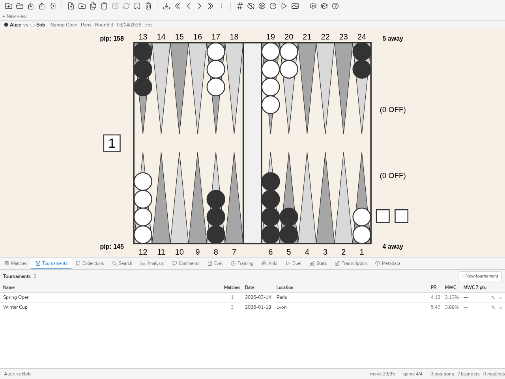
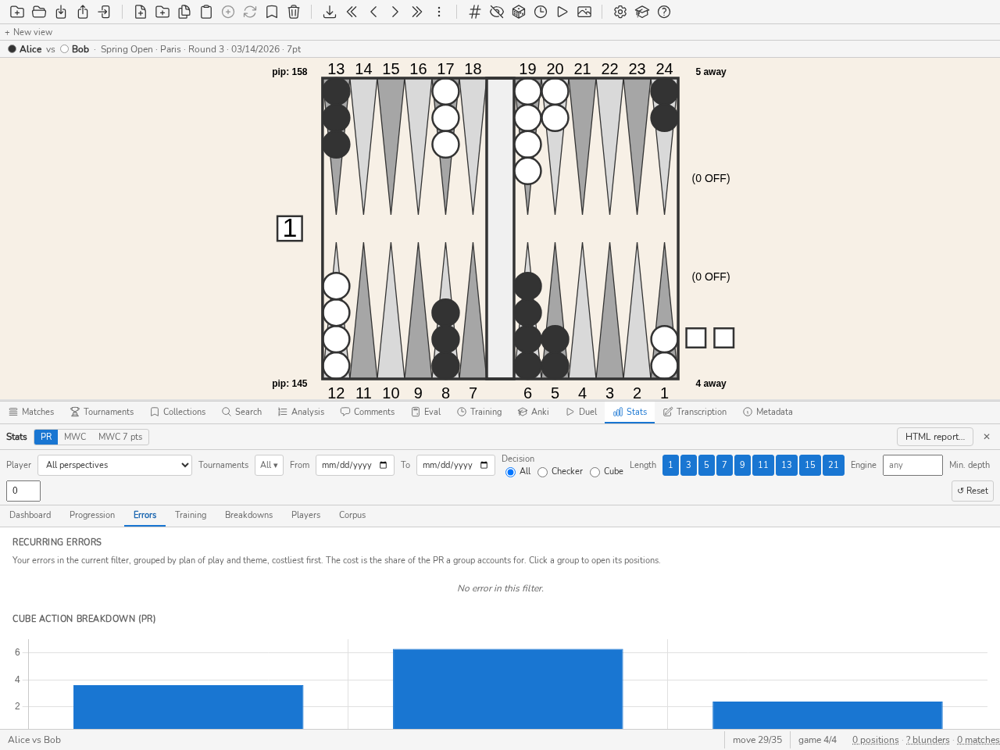

Handbuch
Einführung
blunderDB ist eine Software zum Erstellen von Datenbanken mit Backgammon-Stellungen. Ihre größte Stärke besteht darin, einen einzigen Ort zu bieten, an dem ein Spieler die Stellungen sammeln kann, die ihm begegnet sind (online, im Turnier), und sie erneut studieren kann, indem er sie nach verschiedenen beliebig kombinierbaren Filtern filtert. blunderDB kann außerdem verwendet werden, um Kataloge von Referenzstellungen zu erstellen.
Die Stellungen werden in einer Datenbank gespeichert, die durch eine Datei .db dargestellt wird. Die Desktop-Anwendung öffnet diese Datei direkt, niemals eine Netzwerkadresse: Der Servermodus ist ein anderer Modus desselben Binärprogramms, und man wechselt von einem zum anderen durch Exportieren oder Migrieren der Datenbank, nicht indem man die Anwendung auf eine URL zeigen lässt.
Wichtigste Interaktionen
Die wichtigsten mit blunderDB möglichen Interaktionen sind:
eine neue Stellung hinzufügen,
eine bestehende Stellung bearbeiten,
das Brettbild über CTRL-X in die Zwischenablage kopieren (PNG) oder mit der vollständigen Analyse über CTRL-X CTRL-X,
eine bestehende Stellung löschen,
eine oder mehrere Stellungen suchen,
Matches aus verschiedenen Quellen importieren (XG, GNUbg, BGBlitz, Jellyfish, HedgeHog), einschließlich der Kommentare aus XG-Dateien,
durch die Züge eines importierten Matches navigieren,
Stellungen in Sammlungen organisieren,
Matches in Turnieren organisieren.
Der Benutzer kann Stellungen frei mit Tags versehen und sie mit Kommentaren annotieren.
Beschreibung der Benutzeroberfläche
Die Benutzeroberfläche von blunderDB besteht von oben nach unten aus:
[oben] der Werkzeugleiste, die alle wichtigen auf der Datenbank ausführbaren Operationen zusammenfasst,
[in der Mitte] dem Hauptanzeigebereich, der das Anzeigen oder Bearbeiten von Backgammon-Stellungen ermöglicht,
[unten] der Statusleiste, die verschiedene Informationen über die Datenbank oder die aktuelle Stellung anzeigt und die Befehlszeile integriert.
Es können Panels angezeigt werden, um:
die mit der aktuellen Stellung verknüpften Analysedaten aus eXtreme Gammon (XG), GNUbg oder BGBlitz anzuzeigen,
Kommentare anzuzeigen, hinzuzufügen oder zu bearbeiten,
Stellungen nach kombinierbaren Kriterien zu suchen und zu filtern,
Stellungssammlungen anzuzeigen und zu verwalten (Sammlungen-Panel),
die Liste der importierten Matches anzuzeigen und durch die Züge eines Matches zu navigieren (Matches-Panel),
Turniere anzuzeigen und zu verwalten (Turnier-Panel),
Leistungsstatistiken anzuzeigen (Stats-Panel),
den EPC (Effective Pip Count) einer Bearoff-Stellung zu berechnen (Eval-Panel),
an Rechenaufgaben üben (Trainings-Panel),
Stellungen durch verteiltes Wiederholen zu studieren (Anki-Panel),
ein Match von Hand transkribieren (Transkriptions-Panel),
die Metadaten der Datenbank anzuzeigen (Metadaten-Panel).
Die Höhe des Bereichs wird über seinen Griff eingestellt; sie bleibt von Reiter zu Reiter gleich.
Es können modale Fenster angezeigt werden, um:
die Hilfe von blunderDB anzeigen, deren Suchfeld (/ setzt den Cursor dorthin) die Vorkommen des eingegebenen Textes markiert, ohne Rücksicht auf Groß-/Kleinschreibung und Akzente (EINGABE springt zum nächsten, UMSCHALT-EINGABE zum vorherigen),
den Katalog der geführten Touren anzeigen (siehe Geführte Touren und Beispieldatenbank),
den Export der Datenbank zu konfigurieren,
blunderDB zu konfigurieren, insbesondere die Sprache der Benutzeroberfläche (siehe Konfiguration).
Der Hauptanzeigebereich stellt dem Benutzer Folgendes bereit:
ein Brett, um eine Backgammon-Stellung anzuzeigen oder zu bearbeiten,
den Wert und den Besitzer des Dopplers,
den Pip-Count jedes Spielers,
den Punktestand jedes Spielers,
die zu spielenden Würfel. Wenn auf den Würfeln keine Werte angezeigt werden, gibt die Position der Würfel an, welcher Spieler am Zug ist und dass die Stellung eine Doppler-Entscheidung ist. Wenn die Doppler-Entscheidung eine Antwort auf ein Doppel ist (Annehmen/Aufgeben), wird der angebotene Dopplerwürfel in der Mitte des Bretts mit dem angebotenen Wert angezeigt.
Die Zwischenablage ist die alltägliche Geste; Speichern ist das andere Bedürfnis — die Illustration für einen Artikel, einen Forumsbeitrag, eine Lektion. SVG wird angeboten, weil das Brett eines ist: es ist die Form, die eine Vergrößerung übersteht, die man ohne Unschärfe in ein Dokument setzt. PNG leitet sich daraus ab, ebenso wie die Kopie in die Zwischenablage: eine Darstellung, drei Ziele, also kann keines von den anderen abweichen. Dieses Menü erscheint nicht im Eval-Panel und nicht im Suchpanel, wo die rechte Taste schon die Steine der anderen Farbe setzt. Siehe Eine Stellung in das Eval-Panel bringen, um eine Stellung ins Eval-Panel zu bringen.
Die Statusleiste ist von links nach rechts mit den folgenden Informationen aufgebaut:
die Befehlszeile, erreichbar durch Drücken der Taste LEERTASTE,
eine Informationsmeldung zu einer vom Benutzer ausgeführten Operation,
den Index der aktuellen Stellung, gefolgt von der Zahl der Stellungen in der aktuellen Bibliothek (oder Zug-/Partieangaben beim Durchgehen eines Matches),
der Bibliothekszähler — „412 Positionen · 38 Blunders · 5 Matches“ — bei dem jede Zahl öffnet, was sie zählt: die Positionen, die Suche
E>mit der Schwelle der Bibliothek (sofort gestartet, als wäre sie eingegeben worden, und im Suchverlauf abgelegt), oder die Liste der Matches. Ist die angezeigte Liste nicht die ganze Bibliothek (Suche, Sammlung, Match), lautet die Blunder-Zahl „12 / 340 Blunder“: die Blunder dieser Liste, dann die der Bibliothek, bei derselben Schwelle; eine Liste von mehr als 20 000 Positionen wird nicht gezählt und behält nur die Gesamtzahl. Eine Zahl, der man nicht folgen kann, ist eine Verzierung. Die Blunder-Schwelle ist die der Bibliothek, in der Registerkarte Bibliothek der Konfiguration eingestellt und mit den Statistiken geteilt: zwei Schwellenwerte würden dasselbe Wort zwei Dinge sagen lassen. Der Zähler verspricht genau das, was der Link öffnet, auch für eine Position, die auf mehrere Arten gespielt wurde und die ihre höchsten Kosten wert ist. Bei einer sehr großen Bibliothek (mehr als 200 000 Zeilen) durchsucht der Zähler die Tabellen nicht: eine Zahl mit vorangestelltem „≈“ ist eine Schätzung (eine obere Schranke, da gelöschte Zeilen Lücken hinterlassen). Sind die Positionen geschätzt, erscheint die Zahl der Blunders, für die es keine ehrliche Schätzung gibt, als „?“ — der Link startet die Suche, die die genaue Zahl liefert. Die beiden Blunder-Zahlen sind getrennte Links: die erste startet die Teilsuchess E>in der angezeigten Liste, die zweite die Suche in der ganzen Bibliothek; wird nur die Gesamtzahl angezeigt, gibt es nur einen Link.
Bemerkung
Bei Stellungen, die aus einer Suche des Benutzers stammen, entspricht die in der Statusleiste angegebene Anzahl der Stellungen der Anzahl der gefilterten Stellungen.
Der Reiter Anki trägt ein Abzeichen, wenn Karten fällig sind, über alle Stapel hinweg. Diese Zahl ist der Grund, den Reiter zu öffnen; sie hat nichts dahinter verloren. Null zeigt nichts: Ein Abzeichen mit „0“ ist Rauschen.
Der Befehl log öffnet das Aktivitätsprotokoll: die letzten zweihundert Zeilen der Protokolldatei, eine Schaltfläche zum Kopieren — das Nötige, um einer Meldung einen Bericht beizulegen — und eine weitere, um den Ordner zu öffnen. Das Protokoll wird weder gefiltert noch umformatiert: Ein aufgeräumtes Protokoll lässt sich nicht mehr zitieren.
Der Befehl grid öffnet den Kontaktbogen: die durchsuchte Liste — Suchergebnisse, Bibliothek, Sammlung — als Raster aus Mini-Brettern, gezeichnet wie das Brett, in Seiten zu vierundzwanzig. Er öffnet sich auf der Seite der aktuellen Position, deren Vorschaubild umrandet ist; ein Klick oder EINGABE auf ein Vorschaubild öffnet dessen Position auf dem Brett und schließt den Bogen, und er lässt sich vollständig mit der Tastatur durchlaufen (siehe Kontaktbogen). Er öffnet sich weder im Bearbeitungsmodus noch in einem Match, das man über seine Züge durchläuft.
In der Suchhistorie des Suchpanels erscheint jedes Token eines gespeicherten Befehls als benannter Chip — Kein Kontakt, Zugfehler — statt als nacktes Token. Der genaue Befehl bleibt im Tooltip, denn er ist es, der erneut ausgeführt wird; und ein Token, das blunderDB nicht kennt, erscheint so wie es ist, statt zum Nächstliegenden übersetzt zu werden.
Ansichts-Reiter
Unter der Werkzeugleiste ermöglicht eine Reiterleiste, mit mehreren Ansichten parallel zu arbeiten. Jede Ansicht ist ein unabhängiger Arbeitsbereich, der seine eigene Positionsliste, den Index der aktuellen Position, die angezeigte Position, die Analyse und den ausgewählten Zug, das aktive Panel, den aktuellen Kommentar sowie den Navigationskontext in einem Match behält. So ist es zum Beispiel möglich, eine Suche in einer Ansicht offen zu halten, während man in einer anderen ein Match durchgeht.
Eine Ansicht erstellen: auf die Schaltfläche + der Reiterleiste klicken (solange es nur eine Ansicht gibt, heißt sie + Neue Ansicht) oder STRG-T drücken. Die neue Ansicht startet als Kopie der aktuellen Ansicht.
Eine Ansicht schließen: auf das Kreuz des Reiters klicken oder CTRL-W drücken. Die letzte Ansicht kann nicht geschlossen werden.
Die Ansicht wechseln: auf einen Reiter klicken, CTRL-PageUp / CTRL-PageDown (oder UMSCHALT-J / UMSCHALT-K) drücken, um zur vorherigen / nächsten Ansicht zu wechseln, oder CTRL-1 bis CTRL-9, um direkt die n-te Ansicht zu erreichen.
Eine Ansicht umbenennen: auf den Reiter doppelklicken, den neuen Namen eingeben und mit EINGABE bestätigen.
Eine im Eval-Panel verlassene Ansicht kehrt so dorthin zurück, wie sie verlassen wurde: mit ihrem Entwurfsbrett und, beim Verlassen des Panels, mit der Stellung, die sie untersuchte. Auch das letzte Entwurfsbrett des Eval-Panels gehört jeder Ansicht für sich.
Die Ansichten werden mit dem Sitzungszustand der Datenbank gespeichert und beim erneuten Öffnen wiederhergestellt.
Konfiguration
Die Konfigurationsschaltfläche (Zahnradsymbol) in der Werkzeugleiste, links neben der Hilfeschaltfläche, öffnet das Konfigurationsfenster von blunderDB. Es ist in neun Registerkarten gegliedert:
Oberfläche — Design, Sprache, Anzeigeskalierung, Position des Panels, Schrittweite von PageUp / PageDown (10, 50, 100, 500 oder 1 000 Positionen oder 10 % der Liste), Protokolle, Update-Prüfung, Ihr Name und benachbarte Stellungen;
Brettfarben — die Farben des Bretts;
Bibliothek — was zur geöffneten Datenbank gehört: die Fehler- und die Blunder-Schwelle, das Komprimieren und das Reparieren, weiter unten beschrieben;
Korpus — die Duplikate beim Import, die Aliasse von Spielern und Veranstaltungen und die Suche nach wahrscheinlichen Duplikaten (siehe Import von Matches);
Bearoff — die vom Eval-Panel verwendeten Bearoff-Tabellen;
gammonNet — die Einstellungen des eingebetteten Evaluators, unten beschrieben;
Überwachter Ordner — der automatische Import von Matches, die in einem Ordner eintreffen, unten beschrieben;
Assistent und MCP — der lokale MCP-Server und der interne Assistent, unten beschrieben;
Ausstelleridentität — der Schlüssel, mit dem Ihre Wasserzeichen signiert werden; beschrieben im Abschnitt Eine Datenbank weitergeben: Herkunft und Passwort.
Der Reiter Oberfläche beginnt mit einem Thema: dem System folgen, hell, dunkel, hoher Kontrast oder druckbar. Das Thema legt die Farben der Oberfläche fest und schlägt eine Brettpalette vor — eine dunkle Oberfläche um ein helles Brett ist kein dunkles Thema, sondern ein halbes, denn das Brett nimmt den Großteil des Fensters ein.
Sie behalten das letzte Wort, und der Mechanismus garantiert es, statt es zu versprechen: der Reiter Farben stellt das Brett weiterhin direkt ein, und eine nach dem Thema gewählte Farbe ist Ihre. Beim Start werden nur die Oberflächen-Token angewendet, nie die Brettpalette — die von Ihnen eingestellte ist bereits geladen, und sie bei jedem Start zu überschreiben würde Ihre Arbeit Sitzung für Sitzung löschen. Siehe ADR-0038.
Dem System folgen ist die Voreinstellung: es folgt der Hell/Dunkel-Vorgabe des Desktops, auch wenn sie sich mitten in der Sitzung ändert. Ein Werkzeug drängt einem Desktop, der schon entschieden hat, nicht sein Hell oder sein Dunkel auf.
Der Reiter Oberfläche erlaubt außerdem die Sprachwahl unter Englisch, Französisch, Deutsch, Italienisch, Spanisch, Finnisch, Japanisch, Griechisch und Russisch. Die gesamte Oberfläche (Symbolleiste, Panels, Meldungen, Hilfe) wird in die gewählte Sprache übersetzt. Die Sprachwahl wird gespeichert und von Sitzung zu Sitzung beibehalten.
Die Registerkarte Bibliothek vereint das, was zur geöffneten Datei gehört und nicht zum Rechner. Sie ist leer, solange keine Datenbank geöffnet ist, und sie sagt es.
Sie trägt zunächst die beiden Schwellenwerte, die über das Vokabular der gesamten Anwendung entscheiden: Eine Entscheidung ist ein Fehler, sobald ihre Kosten die Fehlerschwelle erreichen, und dieser Fehler ist ein Blunder, sobald sie die Blunder-Schwelle erreichen. Jeder Blunder ist ein Fehler, deshalb kann die erste Schwelle die zweite nicht überschreiten, und blunderDB lehnt das umgekehrte Paar ab. Die Werte werden in Equity eingegeben — „0,080“ — der Einheit aller Tabellen; die Befehlszeile hingegen spricht in Millipunkten, sodass die Schwelle 0,080 in einer Suche E>80 geschrieben wird.
Diese Schwellenwerte folgen der Datei, nicht dem Computer: Dieselbe Datenbank zählt überall, wo sie geöffnet wird, dieselben Blunders, blunderdb info zeigt sie an, und blunderdb edit --error-threshold / --blunder-threshold stellt sie ein. Sie reisen nicht in einem Export mit: Eine Schwelle ist eine Lesegewohnheit, keine Tatsache der Positionen.
Drei Voreinstellungen werden mit einem Klick angeboten, jede unter dem Namen des Programms, das diese Linie gezogen hat: blunderDB (0,050 / 0,100), XG (0,020 / 0,080) und gnubg (0,040 / 0,080). Standardmäßig liest eine Bibliothek 0,050 und 0,100.
Was sie auf dem Bildschirm ändern: die Anzahl der Blunders im Zähler der Statusleiste und die Suche, die dessen Link vorbereitet, die Spalten „Fehler“ und „Blunders“ der Statistiken und der Spielertabelle, die Markierungen der Züge in der Detailansicht eines Matches (Matches-Panel) sowie die Liste der Positionen, die blunderDB nach einem Import zur Durchsicht vorschlägt.
Derselbe Reiter bietet auch die Schaltfläche Datenbank komprimieren, die den durch Löschungen (Matches, Turniere, Bereinigungen) freigewordenen Speicherplatz zurückgewinnt: Die Datenbank schrumpft beim Löschen von Daten nie von selbst, diese Komprimierung muss ausdrücklich angefordert werden. Der Vorgang kann bei einer großen Datenbank dauern. Die komprimierte Kopie wird neben der Datei geschrieben und ersetzt sie dann: Vorübergehend wird etwa die Größe der Datenbank an freiem Speicherplatz auf ihrem Laufwerk benötigt, nicht im Arbeitsspeicher. Hat ein anderes Programm die Datenbank geöffnet (zum Beispiel eine zweite Instanz im Lesemodus), wird die Datei nicht ersetzt: Die Datenbank wird an Ort und Stelle komprimiert, was etwa die doppelte Größe an freiem Speicherplatz erfordert, und eine temporäre Datei liegt im temporären Ordner des Systems oder in dem, den die Umgebungsvariable SQLITE_TMPDIR nennt: Zeigen Sie sie bei einem kleinen /tmp auf das Laufwerk der Datenbank. blunderDB verweigert den Start mit einer Meldung, die sagt, was fehlt (Speicherplatz oder weniger als 512 MB verfügbarer Arbeitsspeicher), statt eine abgebrochene Komprimierung zu riskieren. Vor dem Start wird eine Bestätigung verlangt. Das Ergebnis — der gewonnene Platz in Megabyte — erscheint anschließend in der Statusleiste. Derselbe Vorgang steht auf der Kommandozeile über blunderdb vacuum zur Verfügung (siehe Befehlszeilenschnittstelle (CLI)).
Nach einer Komprimierung an Ort und Stelle prüft blunderDB, ob die Datei tatsächlich kleiner geworden ist. Unter Windows verweigert das System das Verkürzen einer Datei, die ein anderes Programm auf bestimmte Weise geöffnet hält: Die Komprimierung endet dann mit einer Meldung, die das sagt — schließen Sie das andere Programm und starten Sie sie erneut —, statt einen Gewinn zu melden, den es nicht gab.
Die Schaltfläche Protokollordner öffnen im Reiter Oberfläche öffnet den Ordner mit dem Anwendungsprotokoll — nützlich, um einer Fehlermeldung Details beizulegen, besonders wenn blunderDB über eine Verknüpfung oder einen Doppelklick gestartet wurde, ohne angehängtes Terminal, das irgendetwas anzeigen könnte.
Das Kontrollkästchen Beim Start nach Updates suchen im selben Reiter, standardmäßig aus, fragt bei jedem Start einmal die Releases-Seite des GitHub-Repositorys ab und zeigt in der Statusleiste eine Meldung, wenn eine neuere Version verfügbar ist — nie ein Fenster, das die Arbeit blockiert. Bei einer Installation über einen Paketmanager (Flatpak, Homebrew, ein Distributionspaket …) bleibt diese Prüfung automatisch deaktiviert: dann kümmert sich dieser Kanal um die Updates, nicht blunderDB selbst.
Zwei Einstellungen des Reiters Oberfläche steuern die Ordnung der benachbarten Stellungen (Token like, siehe Such-Panel): die Anzahl der gelieferten Nachbarn und die maximale Entfernung, jenseits derer eine Stellung keine mehr ist. Diese Entfernung ist standardmäßig null, also keine Obergrenze: Der Maßstab hängt von der Spielphase ab, und ein hier gewählter Wert läse sich als Messung. Das Token like<12 setzt für eine Suche seine eigene, ohne die Einstellung anzurühren.
Auf der Registerkarte Brettfarben lassen sich die Farben des Bretts anpassen. Jedes Element besitzt einen eigenen Farbwähler: der Hintergrund, der Rahmen, die hellen und dunklen Zungen, die Steine von Spieler 1 und Spieler 2, die Würfel, die Würfelaugen und der Dopplerwürfel. Die Schaltfläche Zurücksetzen stellt alle Standardfarben wieder her. Wie die Sprache bleiben auch die gewählten Farben von einer Sitzung zur nächsten erhalten.
Der Reiter Bearoff verwaltet die Ausspieltabellen des Eval-Panels (siehe Eval-Panel). Sie sind weder in die ausführbare Datei eingebettet noch heruntergeladen: blunderDB berechnet sie auf der Maschine, die sie braucht, und das Ergebnis ist Byte für Byte dasselbe, das gnubg erzeugt — der SHA-256-Fingerabdruck wird geprüft, bevor eine Tabelle angenommen wird.
Die beiden gewöhnlichen Tabellen (TS-06-06 für das Verdopplungsurteil, OS-06 für den EPC) werden beim ersten Start im Hintergrund und ohne Nachfrage berechnet: etwa sechs Sekunden auf einem Kern, während derer die Anwendung normal benutzt wird. Das Eval-Panel erwähnt es nur, wenn dort eine Stellung gelegt wird, die eine noch nicht fertige Tabelle braucht.
Der Reiter zeigt den aktiven Bereich und seine Herkunft, den Zustand der einseitigen Tabelle, die der EPC liest, den Ordner, in dem das alles liegt, und die Liste der vorhandenen Tabellen mit ihrer Größe und ihrem Urteil. Jede Zeile lässt sich einzeln löschen, nach Bestätigung.
Geprüft oder ungeprüft. Eine geprüfte Tabelle hat genau die Bytes, die gnubg für ihren Bereich erzeugt: ihr SHA-256-Fingerabdruck steht in blunderDB und wurde wiedergefunden. Die für die einseitigen Tabellen (OS-06 bis OS-10) hinterlegten Fingerabdrücke sind die, die das Werkzeug makebearoff von GNUbg 1.08 erzeugt. Eine ungeprüfte Tabelle ist wohlgeformt, aber für ihren Bereich ist kein Fingerabdruck hinterlegt — ihr wird nichts vorgeworfen, es hat sie nur niemand mit der Referenz verglichen. Eine beschädigte Tabelle widerspricht sich selbst und wird nie gelesen; sie wird neu berechnet.
Eine breitere Tabelle berechnen. Der Bereich wird aus einer Liste zweier Familien gewählt, zusammen mit der Zahl der Kerne (standardmäßig alle bis auf einen, damit die Maschine benutzbar bleibt):
exaktes Doppler-Urteil (zweiseitig), von TS-06-06 bis TS-06-15: erweitert den Bereich, in dem Gewinnwahrscheinlichkeit und Doppler-Urteil gelesen statt geschätzt werden;
EPC außerhalb des Heimfelds (einseitig), von OS-06 bis OS-10: erweitert, wie weit von zu Hause ein Stein stehen darf, ohne dass der EPC-Block verstummt. Dieser Durchlauf liest nur Stellungen, die kleiner sind als die berechnete, ist also von Natur aus sequentiell, und die Kernzahl bringt ihm nichts — der Auswähler sagt es, indem er ausgraut.
Bevor irgendetwas beginnt, nennt der Reiter drei Zahlen für den gewählten Bereich: die Größe auf der Platte, den Speicher während der Berechnung und die Dauer auf dieser Maschine. Letztere beginnt als Schätzung und wird zur Messung: jeder ausreichend breite Lauf erfasst seine eigene Geschwindigkeit und behält sie. Ein Bereich, den der verfügbare Speicher nicht zulässt, wird ausgegraut angeboten, mit der Begründung — „nötig wären 24 GB, verfügbar sind 12“ ist eine Antwort, eine fehlende Zeile wäre keine.
Als Größenordnung, auf einer Maschine mit sechzehn Threads: TS-06-09 wiegt 191 MB und dauert etwa zehn Sekunden, TS-06-11 wiegt 1,2 GB und einige Minuten, TS-06-13 übersteigt, was die meisten Maschinen im Speicher halten können. Auf der einseitigen Seite, auf einem Kern: OS-07 wiegt 4,9 MB und dauert 17 s, OS-08 15 MB und 1 min 20, OS-10 117 MB und eine halbe Stunde.
Pause und Fortsetzung. Während der Berechnung zeigt der Fortschritt die gemessene Restzeit und zwei getrennte Schaltflächen: Pause und Abbrechen. Die Pause schreibt den Zustand der Berechnung neben die Tabelle; ein erneuter Start setzt dort fort, statt von vorn zu beginnen. Abbrechen behält nichts. Das Schließen des Konfigurationsfensters unterbricht nichts — die Berechnung läuft im Hintergrund weiter.
Eine pausierte Berechnung findet sich beim nächsten Start wieder, benannt und beziffert („TS-06-09 bei 43 % unterbrochen“), mit Fortsetzen und Löschen. Nichts startet von selbst neu: der Benutzer hat um den Halt gebeten.
Der Reiter erlaubt schließlich, auf eine externe zweiseitige .bd-Datei zu zeigen, etwa eine von gnubg selbst erzeugte Datenbank: die Tabelle mit dem breitesten Bereich gewinnt.
Die Registerkarte Bibliothek trägt schließlich Analysen reparieren: Die Analysespalten, welche die Suche und die Statistiken abfragen, sind eine Projektion der gespeicherten Analysen, die unangetastet bleiben. Ein Projektionsfehler lässt sich daher beheben, ohne irgendetwas neu zu importieren. Das geschieht ausdrücklich und niemals automatisch — die Analysespalten von jemandem allein deshalb neu zu schreiben, weil er seine Datenbank öffnet, ist nichts, was ein Werkzeug hinter seinem Rücken tun sollte. Dasselbe blunderdb repair steht in der Befehlszeile zur Verfügung.
Der Reiter gammonNet stellt den eingebetteten Evaluator ein (siehe ADR-0011). Zwei Suchtiefen sind dort einstellbar, getrennt benannt und getrennt gespeichert — die eine abzusenken ändert nie die andere:
Anzeigetiefe — der interaktive Komfort während der Bearbeitung des Bretts; wird nie in die Datenbank geschrieben.
Analysetiefe — das, was der Analyselauf nach dem Import in die Analyse einer Stellung schreibt.
Beide stehen standardmäßig auf 2-Ply, der kanonischen Konfiguration. Der Reiter bietet außerdem die Beschneidung (standardmäßig k=12) und die Anzahl der angezeigten Kandidatenzüge (standardmäßig 10) sowie ein Kontrollkästchen nach dem Import automatisch analysieren, das, einmal aktiviert, nach jedem Import prüft, ob Stellungen ohne jede Analyse übrig sind (weder gammonNet noch XG, GNUbg oder BGBlitz — die Regel lautet „eine Bewertung füllt nur eine Lücke“, nie ein Ersatz), und gegebenenfalls im Hintergrund eine gammonNet-Analyse in der konfigurierten Analysetiefe startet. Eine Schaltfläche Jetzt analysieren startet dieselbe Nachholanalyse manuell erneut — nützlich für eine Bibliothek, die vor dieser Funktion angelegt wurde.
gammonNet bewertet eine Annahme oder Aufgabe anhand der Entscheidung des Doppelnden, vor dem Doppel. Ein gammonNet-Urteil, das eine frühere Version von blunderDB zu einer solchen Antwort geschrieben hat, bewertete das Redoppel des Empfängers: Es wird beim Öffnen der Bibliothek oder beim Import einer Datenbank, die es enthält, gelöscht. Die Annahme oder Aufgabe wird wieder zu einer Position ohne Analyse und fehlt in den Statistiken, bis Jetzt analysieren (oder die automatische Analyse nach dem Import) sie neu bewertet.
Eine zweite Schaltfläche, Veraltete Positionen erneut analysieren, deckt den umgekehrten Fall ab: Eine bereits von gammonNet analysierte Stellung, deren gespeicherte Analyse jedoch mit einer älteren Engine-Version als der gerade laufenden oder mit einer anderen Tiefe als der oben eingestellten Analysetiefe geschrieben wurde, wird dort als veraltet markiert und neu bewertet. Eine Stellung, die zusätzlich eine XG-, GNUbg- oder BGBlitz-Analyse trägt, wird von dieser Schaltfläche nie angerührt, unabhängig von ihrem gammonNet-Inhalt — der Schutz von ADR-0013 bleibt bedingungslos. Die neben jeder Schaltfläche angezeigte Anzahl (Stellungen ohne Analyse, veraltete Stellungen) ist rein informativ; der Stapel berechnet seine eigene Liste beim Start neu.
Beide Stapel sind begrenzt, sichtbar und abbrechbar, nie ein stiller Daemon: Ihr Fortschritt (analysierte Stellungen / gesamt) und eine Abbrechen-Schaltfläche erscheinen während ihrer gesamten Dauer in der Statusleiste und verschwinden nach Abschluss zugunsten einer Meldung, die das Ergebnis zusammenfasst — wie viele Stellungen analysiert, wie viele abgelehnt (eine Stellung, die gammonNet zu bewerten ablehnt, etwa ein Spielstand außerhalb der Reichweite seiner Tabelle, was nie ein Fehler ist) und wie viele fehlgeschlagen sind (beim nächsten Lauf unverändert erneut versucht). Das Schließen der Anwendung während des einen oder anderen verliert nichts: Jede analysierte Stellung wird laufend geschrieben, und der nächste Lauf setzt genau dort fort, wo die Analyse stehen geblieben war, ohne dass ein Journal zu führen wäre.
Dieselbe Registerkarte enthält die Einstellung der Rollouts, die vom Panel Analyse aus gestartet werden (siehe Rollouts) und von einer Sitzung zur nächsten erhalten bleibt: Schnell (216 Partien, bei 7 Halbzügen abgebrochen), Standard (1296 Partien, bei 11 Halbzügen abgebrochen) oder Frei, wo sich alle Parameter bearbeiten lassen — Abbruchtiefe, minimale und maximale Partienzahl (Vielfache von 36), JSD-Grenze, Tiefe (Ply), Zahl der Kandidaten, Startwert und Zahl der Prozesse.
Match-Equity-Tabelle der Datenbank. Am unteren Rand des Tabs wählt die Liste Match-Equity-Tabelle (MET) der Datenbank die Tabelle, mit der gammonNet Matchstände bewertet: Kazaross-XG2, eingebaut und Standard, oder eine aus einer GNUbg-.xml-Datei importierte Tabelle über die Schaltfläche MET aus .xml importieren…. Die Wahl gehört zur Datenbank, nicht zur Anwendung: Wer eine andere Datenbank öffnet, findet deren Tabelle wieder. Gelesen werden nur explizite Tabellen (nicht die parametrischen Tabellen zadeh oder mec); jenseits der Länge einer importierten Tabelle übernimmt die eingebaute Tabelle. Eine Tabelle wird an ihren Werten erkannt, nicht an ihrem Namen: Der Import der Kazaross-XG2.xml von GNUbg fügt nichts hinzu, es ist die eingebaute Tabelle. Jede von gammonNet berechnete Analyse speichert die Tabelle, mit der sie berechnet wurde; importierte Analysen (XG, GNUbg, BGBlitz) gelten als mit Kazaross-XG2 berechnet. Eine Analyse bei einem Matchstand, die mit einer anderen als der aktuellen Tabelle berechnet wurde, wird im Analysefenster als Andere MET markiert und aus den Statistiken ausgenommen (Fehlerdurchschnitte, PR, Ranglisten, Direktvergleiche); eine Money-Game-Analyse nie. Ein Tabellenwechsel schreibt keine Analyse um: Es ändert sich nur, was die Vergleiche berücksichtigen.
Die Live-Bewertung des Panels und die Doppel-Matrix werden mit der Tabelle der Datenbank bewertet, wie die Analysen, die sie speichert. Eine Tabelle reist mit den Analysen, die sich auf sie beziehen: Der Export einer Datenbank nimmt sie mit, und der Import einer Datenbank fügt sie der empfangenden Datenbank hinzu, ohne Duplikat (eine bereits vorhandene Tabelle wird an ihren Werten erkannt) und ohne sie zur aktuellen zu machen. Eine gammonNet-Analyse, die durch die einer anderen Engine (XG, GNUbg) ersetzt wird, gilt wieder als mit Kazaross-XG2 berechnet.
Ein ohne Analyse importiertes Match erhält damit ein Performance Rating. Das betrifft ein online gespieltes Match oder eine Jellyfish-.mat-Datei, die niemand durch XG geschickt hat: blunderDB kannte die Stellungen und die gespielten Züge, aber keine Analyse sagte, was sie wert waren. Nach dem Lauf wird der tatsächlich gespielte Zug mit gammonNets Rangfolge verglichen, und die Differenz fließt in das PR, die Fehlerquote, die schlimmsten Entscheidungen und alle übrigen Kennzahlen ein, genau wie bei einem von XG analysierten Match. Der Vergleich erfindet nichts: der gespielte Zug stammt aus der Zugtabelle des Matches, beim Import geschrieben, ob die Datei nun eine Analyse trug oder nicht.
Eine mit einer älteren Version analysierte Datenbank muss nicht neu bewertet werden: blunderdb repair berechnet die Spalten aus den bereits gespeicherten Analysen und Zügen neu und gibt diesen Matches ihr PR zurück (siehe repair).
Ein ehrlicher Vorbehalt: eine Stellung wird durch ihre Struktur identifiziert, also trägt eine zweimal angetroffene Stellung — einmal gut, einmal schlecht gespielt — nur eine Differenz, die ihres ersten aufgezeichneten Vorkommens. Das ist nicht dieser Berechnung eigen: eine XG-Bibliothek hat genau dieselbe Form.
Überwachter Ordner
Der Reiter Überwachter Ordner weist blunderDB an, während des Betriebs einen Ordner zu beobachten und jede Matchdatei zu importieren, die darin erscheint. Eine Sitzung in eXtreme Gammon spielen, zu blunderDB zurückkehren, und die Matches sind schon da.
Nichts wird geraten. Solange kein Ordner benannt ist, gibt es keine Überwachung: blunderDB beginnt nicht, ein Verzeichnis zu lesen, weil es vermutet hat, wo Ihre Matches liegen. Die Schaltfläche Vorschlagen sieht an den üblichen Stellen dieses Rechners nach und schlägt eine nur vor, wenn sie wirklich existiert; sonst sagt sie es, und den Ordner zu benennen ist Ihre Sache.
Drei Dinge sollte man wissen, bevor man das Kästchen aktiviert:
Nur erscheinende Dateien werden importiert. Was der Ordner beim Start der Überwachung bereits enthält, wird als bekannt vermerkt und in Ruhe gelassen: eine Überwachung auf vier Jahre Matches zu richten darf nicht alle importieren. Um das Vorhandene zu importieren, gibt es den Ordnerimport — und beide ergänzen sich bestens, erst der Import, dann die Überwachung.
Eine Datei wird erst importiert, wenn ihre Größe sich gesetzt hat. Ein Match, das ein anderes Programm gerade schreibt, wächst von einem Blick zum nächsten; es halb geschrieben zu importieren ergäbe einen Parserfehler, mit dem niemand etwas anfangen kann. blunderDB wartet daher, bis es dieselbe Datei zweimal unverändert gesehen hat.
Der Import ist still. Sie waren gerade dabei, eine Stellung zu studieren, als Ihre Matches eintrafen: Ihnen den Bildschirm wegzunehmen wäre der ungünstigste Moment. Modus, aktive Suche, Registerkarte und angezeigte Stellung bleiben unverändert; die Stellungsliste wird nicht neu geladen und zeigt die neuen Matches beim nächsten Neuladen. Der Import läuft ohne Fenster, und die Statusleiste zeigt ein Banner mit der Anzahl importierter, übersprungener (Duplikate) und fehlgeschlagener Matches, mit einer Schaltfläche, die auf Wunsch den vollständigen Bericht öffnet. Alles Übrige entspricht einem manuellen Import: dieselben erkannten Duplikate, derselbe Import-Stapel, dieselbe automatische Analyse, falls aktiviert.
Das Standardintervall beträgt zehn Sekunden; die Untergrenze zwei. Der Ordner wird nicht rekursiv durchlaufen: ein überwachter Ordner ist der Ort, an dem ein Werkzeug seine Matches ablegt, kein Baum zum Durchsuchen. Eine ausgehängte Netzwerkfreigabe beendet die Überwachung nicht und lässt ihren Inhalt bei der Rückkehr auch nicht als neu erscheinen.
Dieselbe Überwachung gibt es auf der Kommandozeile, mit blunderdb import --type batch --dir <Ordner> --watch (siehe Befehlszeilenschnittstelle (CLI)): es ist die Form, die ein Server, eine geplante Aufgabe oder ein Skript verwenden kann.
Assistent und MCP
Der Reiter Assistent und MCP steuert zwei Dinge, die beide standardmäßig deaktiviert sind.
Der lokale MCP-Server stellt die Werkzeuge von blunderDB (Suche, Lesen einer Stellung und ihrer Analyse, Statistiken eines Spielers, Quiz …) einem Assistenten zur Verfügung, der das Model Context Protocol spricht, etwa Claude Desktop oder Claude Code, solange das Fenster geöffnet ist. Er lauscht nur auf diesem Rechner unter http://127.0.0.1:<port>/mcp (standardmäßig Port 8765) und weist eine Anfrage von einer Webseite ab. Er fügt zwei Anzeigewerkzeuge hinzu: eine Ansicht zu einer Suche öffnen und eine Stellung zeigen. Die Werkzeuge lesen nur, außer wenn Schreiben erlauben angehakt ist: Dann können sie eine Stellung speichern, kommentieren, eine Sammlung anlegen und füllen, eine Anki-Karte bewerten und einen Rollout neben der Analyse einer Stellung speichern; nichts wird gelöscht. Ohne geöffnetes Fenster stellt blunderdb mcp dieselben Werkzeuge bereit (siehe Befehlszeilenschnittstelle (CLI)).
Der interne Assistent ist ein Client dieser Werkzeuge. Es ist kein Modell eingebaut: Er wendet sich an einen OpenAI-kompatiblen Anbieter — standardmäßig Ollama auf diesem Rechner, oder Groq, OpenRouter, Gemini, Anthropic oder eine andere Adresse. Entfernt ist jede Adresse außerhalb dieses Rechners, unabhängig vom gewählten Anbieter: Ihre Sätze und die Ergebnisse der Werkzeuge verlassen dann den Rechner, der Reiter weist darauf hin und wartet auf Ihre Zustimmung für genau diese Adresse; eine andere Adresse fragt erneut. Der API-Schlüssel kommt in den Schlüsselbund des Systems, nie in die Datenbank oder die Einstellungsdatei. Das für Ollama standardmäßig vorgeschlagene Modell, qwen2.5:7b, ist ein Ausgangspunkt, keine Empfehlung: Ohne einen Wert aus dem mit dem Quellcode gelieferten Messstand wird keine Modellempfehlung ausgesprochen.
Nach der Aktivierung ist der Assistent ein Unterreiter Assistent des Suchbereichs. Ein Satz — „meine Fehler von mehr als 50 Millipunkten im Rennen“ — öffnet eine neue, nach ihm benannte Ansicht, startet dort die Suche und wechselt dorthin; seine Token bleiben im Suchverlauf. Was die Werkzeuge zurückgeben, stammt aus der Datenbank; was das Modell schreibt, ist als Freier Text des Modells gekennzeichnet. Der Assistent schlägt nur dann eine Änderung vor, wenn das Kästchen Den Assistenten Änderungen vorschlagen lassen angehakt ist — eine vom Schreiben des lokalen MCP-Servers getrennte Einstellung — und jede Änderung, die er vorbereitet, wird angezeigt und erst nach Bestätigen ausgeführt.
Das Konfigurationsfenster enthält außerdem Anzeigeeinstellungen für die Oberfläche. Ein Schieberegler für die Oberflächenskalierung ermöglicht es, alle Oberflächenelemente zu vergrößern oder zu verkleinern, was auf hochauflösenden Bildschirmen oder zur Verbesserung der Lesbarkeit nützlich ist. Ein Menü Panel-Position legt fest, wo die Panels (Suche, Matchs, Analyse) relativ zum Brett angezeigt werden: unten, seitlich oder automatisch (auf breiten Bildschirmen wird dann die seitliche Anordnung gewählt, um den verfügbaren Platz besser auszunutzen). Wie die anderen Einstellungen werden auch diese Festlegungen von einer Sitzung zur nächsten beibehalten.
Geführte Touren und Beispieldatenbank
Um den Einstieg zu erleichtern, bietet blunderDB geführte Touren durch die Oberfläche an. Der Katalog der Touren öffnet sich über die Symbolleiste oder mit dem Befehl tutorial (Alias tour). Es stehen sieben Touren zur Verfügung: eine allgemeine Tour durch die Oberfläche sowie Touren zur Stellungssuche, zur Durchsicht der Matches, zur Durchsicht der Turniere, zum Eval-Panel, zur Anki-Wiederholung und zu den Statistiken. Jede Tour hebt Schritt für Schritt die betreffenden Elemente der Oberfläche hervor, öffnet dabei das Panel, von dem sie spricht, und kann jederzeit wiederholt werden. Beim ersten Start wird die allgemeine Tour automatisch angeboten.
Der Befehl demo lädt eine Beispieldatenbank, mit der sich die Funktionen des Werkzeugs erkunden lassen, ohne eigene Partien zu importieren: drei Matches (zwei davon in einem Turnier zusammengefasst), analysiert von eXtreme Gammon, BGBlitz und gammonNet, drei thematische Sammlungen, mit Tags versehene Kommentare (#blunder, #cube) und ein Anki-Stapel mit seinem Wiederholungsprotokoll. Spieler, Turnier und Ort sind fiktiv. Die geführten Touren stützen sich auf diese Datenbank, wenn keine Datenbank geöffnet ist.
Stellungen bearbeiten
Das Drücken der Taste TAB öffnet das Suchpanel und ermöglicht es, eine Stellung auf dem Brett zu bearbeiten, um sie der Datenbank hinzuzufügen oder eine zu suchende Stellungsstruktur zu definieren. Die Verteilung der Steine, des Dopplers, des Punktestands und des Zugrechts können mit der Maus geändert werden (siehe Eine Position bearbeiten).
Tipp
Siehe Tastenkürzel für die verfügbaren Tastenkürzel.
Die Befehlszeile
Die in die Statusleiste integrierte Befehlszeile ermöglicht es, alle in der grafischen Oberfläche verfügbaren Funktionen von blunderDB auszuführen: allgemeine Operationen auf der Datenbank, Stellungsnavigation, Anzeige der Analyse und/oder Kommentare, Suche nach Stellungen mittels Filtern … Nach einer ersten Einarbeitung in die Oberfläche empfiehlt es sich, allmählich die Befehlszeile zu verwenden, die eine leistungsfähige und flüssige Nutzung von blunderDB ermöglicht, insbesondere für die Funktionen zur Stellungssuche.
Um die Befehlszeile zu öffnen, drücken Sie die Taste LEERTASTE. Um eine Abfrage abzuschicken und die Befehlszeile zu schließen, drücken Sie die Taste EINGABE.
blunderDB führt die vom Benutzer gesendeten Abfragen aus, sofern sie gültig sind, und ändert gegebenenfalls sofort den Zustand der Datenbank. Es sind keine expliziten Speichervorgänge seitens des Benutzers erforderlich.
Tipp
Siehe Liste der Befehle für die Liste der in der Befehlszeile verfügbaren Befehle.
Die Befehlspalette
Die Befehlspalette (STRG-UMSCHALT-P) findet über einen ungefähren Namen, wonach man nicht mehr zu suchen weiß: einen Befehl der Befehlszeile, einen Reiter, einen Filter der Bibliothek oder ein Match. Die getippten Buchstaben müssen in der richtigen Reihenfolge vorkommen, nicht unbedingt nebeneinander, ohne Rücksicht auf Groß- und Kleinschreibung oder Akzente: „dpmtx“ findet die Doppelwürfel-Matrix, „lyon“ die Matches eines Turniers in Lyon.
Die Pfeiltasten wählen, EINGABE führt aus, ESC schließt. Ein Befehl läuft, als wäre er getippt worden; s und ss öffnen die Befehlszeile, um die Filter dort einzugeben; ein Filter läuft wie nach einem Doppelklick in der Bibliothek; ein Match öffnet sich wie nach einem Doppelklick im Match-Bereich.
Ist eine Direction geöffnet, ergänzt die Palette das Turnier: Spieler, Tische, laufende Matches und Wettbewerbe (siehe Schnellsuche).
Analyse-Panel
Das Panel Analyse (CTRL-L) zeigt die Analysedaten der aktuellen Stellung an, importiert aus eXtreme Gammon (XG), GNUbg, BGBlitz oder gammonNet. Es stellt die besten Alternativen (Steinzüge oder Doppler-Entscheidungen) mit ihren Equity-Werten und den entsprechenden Fehlern dar. Die Taste d schaltet zwischen der Analyse der Steinzüge und der Analyse des Dopplers um. Beim Navigieren in einem Match wird der tatsächlich gespielte Zug in der Liste der Alternativen hervorgehoben. Drücken Sie CTRL-L oder führen Sie den Befehl list aus, um das Panel ein- oder auszublenden.
Eine Stellung ohne Analyse zeigt das an, mit einer Schaltfläche Bewerten, die sie im Eval-Panel öffnet.
Die Schaltfläche Herausforderung der Werkzeugleiste, nach der des Pipcounts platziert (Taste m), dient dazu, sich beim Durchblättern von Positionen festzulegen, bevor man die Analyse sieht: Suchergebnisse, Durchsicht eines Matches, Wiederholung der eigenen Fehler. Eingeschaltet, deckt sie die gesamte Analyse des Panels, Steinzüge und Doppler, mit einer grauen Fläche ab; ein Klick auf die Fläche deckt sie auf. Sie kehrt bei jedem Positionswechsel zurück. Die Herausforderung ist eine Anzeigemaske: Das Aufdecken speichert nichts in der Datenbank. Die Einstellung gilt bis zum Schließen von blunderDB, wie die des Pipcounts. In der Match-Durchsicht verbirgt die Herausforderung auch die Markierungen, Verluste und die Schwierigkeit der Zugliste; die des angezeigten Zuges werden mit seiner Analyse aufgedeckt.
Unter den Tabellen sagt manchmal ein Satz, was die gespielte Entscheidung gekostet hat und warum: „Sie verlieren 120 mp: Der gespielte Zug lässt drei Blots stehen, 13/7 8/7 nur einen.“ Er stammt aus sechs messbaren Regeln — Blößen, ein gemachter oder verpasster Heimfeldpunkt, aufgegebene Gammon-Chancen, eine Sicherheit, die mehr kostet als sie bringt, und die beiden Richtungen eines Verdopplungsfehlers (zu spät oder zu früh doppeln, zu locker annehmen oder zu eng aufgeben).
Die Regel, auf die es ankommt, ist das Schweigen: Der Satz erscheint nur, wenn eine Regel sicher greift, und bei einem Fehler jenseits der Schwelle, ab der die Engines übereinstimmen, dass es einer ist. Sonst gibt es keinen Satz — keinen leeren Rahmen, kein „wir wissen es nicht“. Eine falsche Erklärung kostet mehr als keine: Sie lehrt etwas Unzutreffendes.
Derselbe Satz begleitet den Fehler dort, wo Sie ihn gerade gemacht haben: auf der Rückseite einer Anki-Karte, unter der aufgedeckten Analyse, und im Quiz-Urteil der Übung Entscheidung, unter den Kosten in mp. Es gelten dieselben Schweigeregeln: Ein richtiger Zug oder ein Fehler, den keine Regel erklärt, fügt nichts hinzu.
Wurde eine Stellung von mehreren Engines beurteilt, stellt ein Streifen am Kopf des Panels sie nebeneinander: eine Zeile je Engine, mit ihrer Tiefe und ihrer Antwort — dem Würfelurteil oder ihrem eigenen besten Zug. Er sagt zuerst, ob sie übereinstimmen, und der Widerspruch ist es, der ihn rechtfertigt: „XG sagt Doppel, Annahme; gammonNet sagt kein Doppel“ liest sich auf einen Blick, wo zuvor zwei Tabellen quer verglichen werden mussten.
Der beste Zug einer Engine ist der beste dieser Engine: die Kandidatenliste ist über alle Engines hinweg nach Equity sortiert, ihr erster Eintrag ist also niemandes bester Zug im Besonderen.
Der Streifen erscheint nur, wenn es tatsächlich mehrere Engines gibt, und es gibt ihn allein in diesem Panel: das Eval-Panel zeigt eine Entscheidung, die der eingebetteten Engine (ADR-0017), und ein Vergleich hätte dort keinen Platz.
Züge werden so geschrieben, wie man sie auf dem Brett liest, hier wie im Eval-Panel: der am wenigsten vorgerückte Stein zieht zuerst, und ein Stein, der mehrere Würfel hintereinander nutzt, wird nur einmal geschrieben — eine mit demselben Stein gespielte 64 liest sich 24/14, und 24/14*, wenn er bei der Ankunft schlägt. Das Detail der Kette taucht nur wieder auf, wenn es etwas mehr aussagt: ein Schlag unterwegs behält seinen Zwischenpunkt, 24/18* 18/14, sonst verschwände der Schlag auf der 18 aus der Notation.
Die Equity einer importierten Analyse folgt derselben Regel wie das Eval-Panel: Die Spalte nennt ihren Bezugsrahmen, „Equity (money)“ oder „Equity (match)“ je nach Spielstand der analysierten Position, nie ein bloßes „Equity“ ohne Angabe der Skala. Die auf einer Money-Game-Position aktiven Regeln Jacoby und Beaver werden ebenfalls angezeigt, als Badges unter der Tabelle der Doppelwürfel-Entscheidung.
Rollouts
Das Panel Analyse kann eine Stellung rollen: Hunderte Partien ab jedem gewählten Zug oder jeder Würfelaktion spielen, um zwei Optionen zu unterscheiden, die die direkte Bewertung kaum trennt. In der Tabelle der Kandidatenzüge fügt Strg+Klick einen Zug zur Auswahl hinzu oder entfernt ihn, und Umschalt+Klick erweitert die Auswahl bis zum angeklickten Zug; ein einfacher Klick wählt wie gewohnt einen einzelnen Zug. Ein Rechtsklick auf die Auswahl — oder auf einen anderen Zug, der dann zur Auswahl wird — öffnet ein Menü, dessen Eintrag Rollout (Standard) sofort das Rollout der gewählten Züge mit der gewählten Einstellung startet. Bei einer Würfelentscheidung rollt der Rechtsklick die ganze Entscheidung. Die Taste Umschalt+R des Panels tut dasselbe (ohne Auswahl rollt sie die besten Kandidaten der Stellung), ebenso der Befehl rollout (Alias ro). Während des Rollouts zeigt ein dünner Balken unter der Tabelle die gespielten Partien an; Abbrechen, der Menüeintrag Rollout abbrechen, Esc oder erneut Umschalt+R halten es an, ohne etwas zu schreiben. Die Einstellung — Schnell, Standard oder Frei — wird in der Registerkarte gammonNet der Konfiguration gewählt (siehe Konfiguration).
Dasselbe Menü bietet Position und Analyse kopieren, das Bild, das CTRL-X CTRL-X kopiert: das Brett und den Anfang der Zugliste oder die gesamte Doppler-Analyse. Sobald ein Zug ausgewählt ist, kommt ein zweiter Eintrag hinzu, Position und ausgewählte Züge kopieren: Das Bild behält nur diese Züge, in der Reihenfolge der Rangliste, jeder mit seinem Rang unter allen Kandidaten und mit seinem Abstand zum besten Zug der Position, nicht zum besten der Auswahl. Bei einer Würfelentscheidung erscheint nur der erste. Die Zellen der Analysetabellen lassen sich nicht als Text markieren: Auswahlklicks hinterlassen dort keine Hervorhebung.
Das Ergebnis wird neben der Analyse gespeichert, nie an ihrer Stelle: eine importierte Analyse wird nicht verändert. Jeder gerollte Zug trägt sein Ergebnis in seiner eigenen Tabellenzeile, in einer Spalte Rollout, die nur erscheint, wenn die Stellung ein Rollout hat: das Equity und die halbe Breite seines 95-%-Konfidenzintervalls, auf der Skala der Equity-Spalte. Das Überfahren der Zelle zeigt die Details: die Standardabweichung, die JSD (der Abstand zum besten Zug in Standardabweichungen der Differenz: ab der Grenze ist der Zug entschieden und wird nicht mehr gespielt), die Zahl der Partien und die Konfiguration — die Engine und die vollständige Signatur der Parameter: zwei Rollouts mit gleicher Signatur sind dieselben Zahlen. Das Rollout endet, sobald die Züge unterschieden sind. Das Rollout einer Würfelentscheidung, die keine Zugzeile hat, erscheint als Tabelle unter der Entscheidung. Ein Rollout spielt den Würfel in seinen Partien: die Rangfolge ist verlässlich, das absolute Equity etwas weniger, woran der Block erinnert. Es spielt den Beaver nicht: seine Zeile Doppeln, nehmen ist die eines einfachen Nehmens, auch bei einer Money-Stellung unter der Beaver-Regel, wo die direkte Analyse den Beaver mitzählt. Eine Stellung, die nicht in der Datenbank ist, kann gerollt, aber nicht gespeichert werden.
Der Befehl ro search rollt nacheinander die Stellungen der angezeigten Liste — Suchergebnisse, Match oder Sammlung —, die dieses Rollout noch nicht tragen; eine Bestätigung nennt die Gesamtzahl, bevor es beginnt. Jede Stellung wird geschrieben, sobald sie fertig ist: Abbrechen behält das Erledigte, und ein erneuter Start setzt dort fort, wo es aufgehört hat. Der Fortschritt bleibt beim Schließen des Panels erhalten.
Eine schreibgeschützt geöffnete Datenbank, weil eine andere Instanz von blunderDB sie hält, lehnt ein Rollout, das gespeichert würde, sofort ab: eine Meldung sagt es, bevor die erste Partie gespielt wird.
Kommentare-Panel
Das Panel Kommentare (CTRL-P) zeigt die der aktuellen Position zugeordneten Kommentare an, fügt welche hinzu und bearbeitet sie. Eine Position kann mehrere tragen, von verschiedenen Personen verfasst: Alle werden als Verlauf angezeigt, vom neuesten zum ältesten, jeweils mit dem Namen ihres Autors, und Ihre eigenen stehen an erster Stelle. Aus XG-Dateien importierte Kommentare werden automatisch den entsprechenden Positionen zugeordnet. Drücken Sie CTRL-P oder führen Sie den Befehl comment aus, um das Panel ein- oder auszublenden.
Der Name, der Ihre Kommentare signiert, wird in den Einstellungen, Reiter Oberfläche, im Feld Ihr Name festgelegt; ist er leer, sind Ihre Kommentare nicht signiert. Kommentare eines XG-Imports sind mit XG signiert, die einer Match-Datei mit dem Namen ihres Transkribenten. Wird ein Kommentar neu geschrieben, trägt er Ihren Namen. Die Suche au"Alice" liefert die Positionen, die Alice kommentiert hat; außerhalb der Oberfläche schreibt blunderdb comment add --author einen signierten Kommentar und blunderdb comment list liest sie wieder aus (siehe Befehlszeilenschnittstelle (CLI)).
Jeder Kommentar aus einer Datei trägt eine Herkunftsmarkierung (XG, GNU BG, BGF, oder importiert, wenn die Herkunft nie festgehalten wurde). Von Ihnen geschriebene Kommentare tragen keine: das ist der Normalfall, und jede Zeile zu kennzeichnen wäre nur Lärm. Einen importierten Kommentar zu bearbeiten macht ihn zu Ihrem: nach der Änderung ist der Satz Ihrer.
Diese Unterscheidung wirkt sich anderswo aus: das Löschen einer Partie zerstört keine Stellung mehr, auf die Sie etwas geschrieben hatten. Eine aus der Quelldatei übernommene Notiz verschwindet dagegen weiterhin mit der Partie, die sie mitgebracht hat.
Der Papierkorb
Eine Stellung, eine Sammlung, einen Kommentar, eine Anki-Karte oder ein Match zu löschen geht über einen Papierkorb: der Löschvorgang findet statt, aber eine Kopie dessen, was verschwindet, wird dreißig Tage aufbewahrt. Der Befehl trash öffnet das Fenster, das sie auflistet, jeden Eintrag mit Wiederherstellen und Löschen, und eine Schaltfläche Papierkorb leeren.
Eine wiederhergestellte Position kommt mit ihrer Analyse und ihren Kommentaren zurück — sie nackt zurückzugeben wäre eine Wiederherstellung nur dem Namen nach —, mit ihrer Markierung „studiert“ und den auf ihr gegebenen Trainingsantworten. Sie erhält ihre alte Nummer zurück; wurde dieselbe Position inzwischen gespeichert, wird diese behalten, denn eine Position existiert nur einmal: sie erhält die Markierung, die Antworten und die Kommentare, die ihr fehlen, und behält ihre Analyse, wenn sie eine hat. Ist ihre Nummer von einer anderen belegt, erhält sie eine neue. Eine Sammlung kommt mit ihrer Liste zurück; die Positionen, die sie enthielt, waren nie gelöscht — eine Sammlung ist eine Sicht auf sie.
Ein gelöschtes Match nimmt seine Partien, seine Züge, deren Analysen und die Positionen mit, die nichts anderes mehr hält, samt den Notizen aus der Quelldatei: der Papierkorb bewahrt all das. Wiederhergestellt kommt es unter seiner ursprünglichen Nummer und seinem ursprünglichen Importdatum zurück, mit seinen Partien, seinen Zügen und seinen Statistiken, und das Journal seines Imports nennt es wieder; die Positionen, die das Löschen entfernt hatte, kommen wie eine wiederhergestellte Position zurück, die in der Bibliothek verbliebenen bleiben, wie sie inzwischen sind. Es erhält seinen Platz in seinem Turnier zurück; wurde das Turnier gelöscht, kommt es ohne Turnier zurück. Es erhält seinen Platz in der Turnierleitung zurück, wenn er noch existiert, dieselben Spieler gegeneinander stellt und frei ist; andernfalls bleibt er beim Turnierleiter, und das Match kommt ohne ihn zurück. In diesen Fällen meldet es die Statusleiste. Die Wiederherstellung wird abgelehnt, und der Eintrag bleibt im Papierkorb, wenn ein anderes Match seine Nummer belegt oder wenn inzwischen ein Match mit demselben Datei-Fingerabdruck importiert wurde; ein Match ohne Fingerabdruck, eingegeben oder in blunderDB gespielt, wird so nicht verglichen.
Was älter als dreißig Tage ist, entfernt der Befehl vacuum, nie das Öffnen einer Datenbank: kein vacuum heißt, alles zu behalten.
Bemerkung
Der Papierkorb reist nicht mit: ein Export nimmt ihn nicht mit.
Such-Panel
Das Panel Suche (CTRL-F oder TAB) ermöglicht es, Stellungen nach frei kombinierbaren Kriterien zu filtern: Steinstruktur, Typ der Doppler-Entscheidung, Fehlergröße, Datum, Tags usw. Die Taste TAB öffnet gleichzeitig das Suchpanel und den Stellungseditor, sodass eine zu suchende Steinstruktur direkt auf dem Brett definiert werden kann.

Das Suchpanel: numerische Filter, Steinstruktur auf dem Brett, Reiter Mindestens / Außer.
Die Filter werden im Unterreiter Kriterien eingestellt. Findet eine Suche nichts, zeigt das Panel es an („Keine Stellung passt“) mit einer Schaltfläche Filter leeren, statt es nur der Statusleiste zu überlassen.
Um unter den angezeigten Stellungen zu suchen, verwenden Sie den Befehl ss gefolgt von Filtern (z. B.: ss nc, ss E>40). ss sucht in der Liste auf dem Bildschirm: in den Ergebnissen der vorherigen Suche, in der geöffneten Sammlung oder in den Stellungen des gerade durchgesehenen Matches, ob der Befehl direkt oder aus dem Suchpanel (TAB) eingegeben wird. Das Kontrollkästchen In aktuellen Ergebnissen suchen des Panels folgt derselben Regel; das Kontrollkästchen In neuem Reiter öffnen zeigt die Ergebnisse in einer neuen Ansicht (siehe Ansichts-Reiter) statt in der aktuellen. In einer Sammlung und in einem Match wird s abgelehnt: Es würde die ganze Bibliothek durchsuchen und die angezeigte Liste ersetzen.
Die Ergebnisse einer aus einer Sammlung oder einem Match gestarteten ss-Suche verlässt man mit Esc, mit einem einzigen Druck, sobald weder ein Feld noch das Panel mit dem Fokus etwas zu schließen hat (zum Beispiel einen in der Analyse ausgewählten Zug): blunderDB kehrt zur ganzen Sammlung oder zum Match auf dem betrachteten Zug zurück, und zur verlassenen Stellung. Diese Rückkehr folgt nur auf ss: s, aus dem über einer Sammlung oder einem Match geöffneten Suchpanel gestartet, durchsucht die ganze Bibliothek, und Esc führt nicht mehr zur verlassenen Liste zurück.
Eine Suche in einer großen Datenbank wird angezeigt, bevor sie gezählt ist: die erste Ergebnisseite erscheint sofort, und die Statusleiste zeigt « Suche… » mit der verstrichenen Zeit, bis die Gesamtzahl bekannt ist; sie ersetzt dann die vorläufige Länge der Liste. Es läuft immer nur eine Suche: eine neue Suche verwirft die vorige. Esc unterbricht die laufende Suche und beendet ihren Durchlauf der Datenbank; war die erste Seite schon angezeigt, bleibt sie allein stehen, und die Statusleiste sagt es.
Das Panel bietet eine explizite Steuerung des gesuchten Entscheidungstyps: Egal (kein Filter), Zug (Zugentscheidungen) oder Dopplung (Doppler-Entscheidungen). Wenn Dopplung ausgewählt ist, gibt eine zweite Liste den Untertyp an: Alle, Dopplung / Kein Doppel (der Spieler am Zug muss über das Doppeln entscheiden) oder Annehmen / Aufgeben (Antwort auf ein gegnerisches Doppel). Die Steuerung ist mit dem Brett synchronisiert: Ändert man die Würfel oder den Dopplerwürfel auf dem Brett, wird der Entscheidungstyp aktualisiert und umgekehrt. Im Modus Annehmen / Aufgeben wird der Dopplerwürfel mit dem angebotenen Wert in der Mitte des Bretts angezeigt; dieser Wert bleibt bearbeitbar.
Die Spielphase — Eröffnung, Mittelspiel, Wettlauf, Auswürfeln — ist eine Kennzeichnung, die blunderDB allein aus dem Brett berechnet. Sie ist nie editierbar und über das Kommandozeilen-Token ph: durchsuchbar (ph:race, wiederholbar: ph:race ph:bearoff). Drei ihrer vier Grenzen sind die, mit denen GNU Backgammon seine Netze auswählt; die vierte, wo die Eröffnung endet, ist eine Konvention von blunderDB: eine Stellung befindet sich noch in der Eröffnung, solange keine Seite mehr als vier Steine von ihren Ausgangspunkten bewegt hat, nichts ausgewürfelt wurde und nichts auf der Bar steht.
Bemerkung
Die Kennzeichnung wird vom Befehl blunderdb repair neu berechnet. Bei einer Datenbank, die zum ersten Mal mit dieser Version geöffnet wird, geschieht das einmal beim Öffnen. Eine Datenbank, deren Phasen nie berechnet wurden, liefert für ph: nichts — nichts statt einer falschen Antwort.
Das Token like ordnet, statt einzuschränken: Seine Anwesenheit sortiert das Ergebnis nach aufsteigender Entfernung zu einer Zielstellung — like die aktuelle, like42 die mit dem Index 42 — und die übrigen Token schränken die so geordnete Menge ein, sodass s like42 E>80 heißt „die Nachbarn von 42, bei denen ich gefehlt habe“. Die Entfernung ist eine Transportdistanz in Stein-Pips, die Menge an Steinbewegung, die zwei Stellungen trennt, aus Sicht des Spielers am Zug.
Eine Nachbarstellung ist dasselbe Problem, nicht dieselbe Zeichnung: Geordnet wird innerhalb der Klasse der Zielstellung — dieselbe Entscheidungsart, dieselbe Spielform (Geldspiel oder Match) bei einer Doppler-Entscheidung, und ein anderes Match als ihr eigenes, denn die Stellungen, die sie in ihrer eigenen Partie umgeben, sind ihre nächstliegenden Strukturen, ohne je ihre Nachbarn zu sein. Würfel, Spielstand und Dopplerwert bleiben außerhalb der Klasse; die gewöhnlichen Token schränken darauf ein, wenn man es will. like42* erweitert die Klasse auf alle Entscheidungsarten und auf beide Spielformen, nie auf das Match der Zielstellung; like<12 verwirft alles über zwölf Stein-Pips. Eine Ordnung, die nichts findet, liefert eine leere Liste und sagt es, statt zehn zusammenhangloser Stellungen.
Im Bearbeitungsmodus nimmt s like das gezeichnete Brett als Ziel: Man zeichnet ungefähr die Stellung, an die man sich erinnert, startet, und die Bibliothek antwortet — dort, wo die Suche nach Struktur die genaue Zeichnung verlangt. Das Brett wird dann als Stellung gelesen und nicht als Muster: Ein leer gelassener Punkt zählt als ausgewürfelte Steine, was für eine echte Stellung genau ist und die Rechnung für eine halb fertige Zeichnung verfälscht.
Jede Nachbarstellung trägt ihre Entfernung unter den Analysetabellen, zusammen mit der Stellung, der sie nahe ist. Das erlaubt zu beurteilen, ob man eine Nachbarstellung oder einen Zufall betrachtet, und darin liegt der Sinn der Obergrenze. Die Ordnung lässt sich auch ohne die Kommandozeile starten: STRG-UMSCHALT-L oder der Eintrag Benachbarte Stellungen im Kontextmenü des Bretts.
Das Kürzel n zählt die Begegnungen: n>3 behält die Stellungen, die in der Datenbank mindestens dreimal angetroffen wurden, über alle Matches und alle Spieler. Das ist eine andere Frage als „was habe ich verpasst“ — eine Stellung, die zwanzigmal vorkam und neunzehnmal gut gespielt wurde, ist immer noch die, die man auswendig kennen sollte. Gezählt werden Entscheidungen, nicht Matches: dieselbe Stellung zweimal in einem Match zählt doppelt, weil es zwei Entscheidungen waren. In Verbindung mit einem Spielerfilter zählt es nur die Vorkommen dieses Spielers: n>3 pl!"Alice" behält die Stellungen, die Alice mindestens dreimal zu spielen hatte, und pl"Alice" die der Matches, die sie gespielt hat; op"Bob" beschränkt die Zählung ebenso auf Matches gegen Bob.
Der Spielplan ist ein zweites abgeleitetes Etikett neben der Phase, und es beantwortet die Frage, die ein Bündel gespeicherter Filter nicht stellen kann: „zeig mir meine Fehler im Holding Game“. Token gt:, wiederholbar (gt:holding gt:mutualholding), aus Sicht des Spielers am Zug — des Plans, in dem die Entscheidung fiel.
Die zehn erkannten Pläne, in der Reihenfolge, in der die Regeln sie abarbeiten, vom Spezifischsten zum Allgemeinsten:
race— die hintersten Steine beider Seiten haben sich gekreuzt: Kontakt ist nicht mehr möglich. Grenze von GNU Backgammon.bearin— der Spieler am Zug bringt ein, während der Gegner noch einen Anker in dessen Heimfeld hält.crunch— der Spieler am Zug hat höchstens sechs Steine außerhalb seiner Punkte 1 und 2. Regel von GNU Backgammon, Schwelle ihres Autors.backgame— zwei oder mehr Anker im gegnerischen Heimfeld.acepoint— ein einziger Anker, auf dem gegnerischen Ass-Punkt, mit mindestens zwanzig Pips Rückstand.blitz— drei oder mehr Heimfeldpunkte gemacht, und der Gegner auf der Bar oder mit einem Blot zum Schlagen in diesem Heimfeld.primevprime— beide Seiten halten eine Prime von mindestens vier Punkten, und jede hat einen Stein hinter der des anderen gefangen.mutualholding— beide Seiten halten einen hohen Anker.holding— der Spieler am Zug hält einen hohen Anker, der Gegner nicht.contact— Kontakt, und keiner der obigen Pläne. Die Eröffnung landet hier.
Drei dieser Regeln sind die von GNU Backgammon und sind belegt; die übrigen sind Konventionen von blunderDB. Die Backgammon-Literatur beschreibt die Spielpläne, ohne ihre Grenzen zu beziffern, und für dieses Problem ist keine Übereinstimmung zwischen Klassifizierern veröffentlicht. Die nicht belegten Schwellen — drei Heimfeldpunkte für einen Blitz, vier Punkte für eine Prime, zwanzig Pips Rückstand für ein Ace-Point-Game — stehen deshalb hier statt versteckt im Code, und sie sind versioniert: ändern, blunderdb repair laufen lassen, und die ganze Datenbank ist neu etikettiert.
Bemerkung
Pro Stellung wird ein Etikett behalten, das des Spielers am Zug. Ein abgeleitetes Etikett ist nie editierbar, wird nie als Wahrheit exportiert, und eine Datenbank, deren Pläne nie berechnet wurden, liefert für gt: nichts — wie für ph:.
Der Filter Markiert behält die Positionen, die Sie in der Ursprungssoftware der Partie markiert haben. Nur eXtreme Gammon erzeugt diese Information, die zugweise in der .xg-Datei gespeichert wird; blunderDB liest sie beim Import und behält sie bei. Eine markierte Dopplungsentscheidung ergibt zwei markierte Positionen, die Dopplung und das Annehmen/Aufgeben, da blunderDB in zwei Teile zerlegt, was die Quelldatei als eine einzige Entscheidung speichert.
Bemerkung
Die Markierung wirkt nicht rückwirkend: Bereits in der Datenbank vorhandene Partien tragen diese Information nicht, da sie nur in den Quelldateien existiert. Importieren Sie einfach die betreffende .xg-Datei erneut — der Import erkennt das Duplikat und fügt nichts außer den Markierungen hinzu, ohne vorhandene Kommentare oder Analysen anzutasten. Eine Markierung kann in blunderDB weder gesetzt noch entfernt werden: Für eine temporäre Arbeitsliste verwenden Sie besser eine Sammlung.
Der Filter Kommentar durchsucht die den Positionen zugeordneten Kommentare in drei sich ausschließenden Modi. enthält Text sucht ein oder mehrere Wörter im Kommentartext (Eingabefeld, Wörter durch ; getrennt, mindestens eines muss zutreffen); hat einen Kommentar behält jede Position mit einem Kommentar, unabhängig vom Inhalt; ohne Kommentar behält im Gegenteil die nicht kommentierten Positionen — nützlich in Kombination mit einem Fehler- oder Datumsfilter, um die Liste dessen zu erstellen, was noch zu kommentieren ist.
Bemerkung
Aus einer Partiedatei (XG, GNUbg) importierte Kommentare zählen als Kommentare. Um nur Ihre eigenen zu behalten, fügen Sie auf der Kommandozeile das Token co:user hinzu (co:xg, co:gnubg, co:bgf und co:unknown benennen die anderen Herkünfte). Kommentare zu einer Partie oder einem Turnier sind ohnehin nicht betroffen: sie kommentieren die Partie oder das Turnier, nicht deren Stellungen.
Der Filter Matches & Turniere stützt sich auf einen gemeinsamen Auswahldialog (modales Fenster) anstelle der Eingabe numerischer Kennungen: zwei Kontrollkästchen-Listen, eine für Matches und eine für Turniere, jeweils per Text filterbar (Spieler, Datum, Ereignis für Matches; Name, Datum, Ort für Turniere), mit den Schaltflächen Alle / Keine, die nur auf die aktuell gefilterte Teilmenge wirken. Das Ankreuzen eines Turniers kreuzt automatisch dessen zugehörige Matches in der Matchliste an (und graut sie aus), wodurch sichtbar wird, dass ein Turnier der Gesamtheit seiner Matches entspricht.
Die Leiste des Suchpanels trägt einen Umschalter Kriterien (die Filter) | Verlauf | Gespeichert — mit einem vierten Segment, Assistent, wenn der interne Assistent aktiviert ist — und, bei Kriterien, die Schaltfläche Suchen an ihrem rechten Ende. Der Reiter Verlauf listet die vergangenen Suchen mit ihrem Datum und ihrem Befehl auf: Ein Klick wählt eine Suche aus und zeigt die zugehörige Position auf dem Brett an, ein Doppelklick führt sie erneut aus. Jeder Eintrag kann in der Filterbibliothek gespeichert (Lesezeichen-Symbol, durch Angabe eines Filternamens) oder gelöscht werden. Der Reiter Gespeichert enthält die Filterbibliothek: Doppelklicken Sie auf einen gespeicherten Filter, um die entsprechende Suche erneut zu starten (siehe Anhang: Fortgeschrittene Nutzung der Filter). Der Befehl history (Alias hi) öffnet das Suchpanel.
Der Stern eines Filters der Bibliothek heftet ihn an. Angeheftete Filter erscheinen als Chips oben im Bereich, welcher Reiter auch offen ist, nummeriert in der Reihenfolge der Bibliothek: Ein Klick auf einen Chip startet den Filter, und ALT-1 … ALT-9 starten den angehefteten Filter dieses Rangs von jedem Bildschirm im Modus NORMAL oder EDIT aus, ohne den Bereich zu öffnen. Der Filter stellt dann dieselbe Frage wie beim Doppelklick, Steinstruktur eingeschlossen. Die Anheftung gehört zur Datenbank: Sie folgt einem umbenannten Filter, verschwindet mit einem gelöschten und reist nicht mit dem Export der Bibliothek mit.
Eine erneut ausgeführte Suche behält ihre Rangfolge: s like42 ordnet nach der Nähe zu Position 42, s like nach der Nähe zu dem mit der Suche gespeicherten Brett — dem durchgesehenen oder gezeichneten. Ein Eintrag ohne gespeichertes Brett wird nicht gegen das Brett auf dem Bildschirm ausgeführt, und die Statusleiste meldet es.
Tipp
Siehe Liste der Befehle für die Liste der verfügbaren Filter.
Sammlungen-Panel

Das Sammlungen-Panel: Name, Anzahl der Stellungen, Beschreibung, letzte Änderung.
In den Panels Sammlungen, Turniere, Anki und Transkription ist die Schaltfläche + in der Kopfzeile, gefolgt vom Namen dessen, was sie anlegt (+ Neue Sammlung, + Neues Turnier, + Neues Paket, + Neue Transkription), die einzige Anlegegeste: Sie öffnet das Eingabefeld, das Esc oder Abbrechen in den Panels Sammlungen und Turniere schließt. In der Matchliste öffnet das Symbol ⌨ die Transkription des Matches und das Symbol ✎ korrigiert seine Metadaten.
Das Fenster Sammlungen (CTRL-B) verwaltet Stellungssammlungen. Sammlungen können angelegt, umbenannt und gelöscht werden. Stellungen können hinzugefügt oder entfernt werden (Taste Entf, Bestätigung wird verlangt). Ein Doppelklick auf eine Sammlung durchblättert ihre Stellungen mit den Tasten LINKS und RECHTS. Der Befehl ss sucht unter den Stellungen der geöffneten Sammlung; Esc kehrt danach zur Sammlung zurück (siehe Such-Panel). Die Reihenfolge der Sammlungen und der Stellungen innerhalb einer Sammlung lässt sich per Ziehen und Ablegen ändern. CTRL-B drücken oder den Befehl collection ausführen, um das Fenster ein- oder auszublenden.
Im Kopf einer geöffneten Sammlung ist die Zahl der Stellungen ein Link, der sie wieder zum Durchblättern lädt, ab der ersten; das Kästchen in dieser Sammlung fügt die angezeigte Stellung hinzu oder entfernt sie. Eine leere Liste bietet + Neue Sammlung an.
Der Stapel ist die Sammlung für die Geste „später ansehen“: Ein Doppelklick außerhalb des Bretts, die Taste b oder die Lesezeichen-Schaltfläche der Werkzeugleiste legt die angezeigte Stellung auf den Stapel, und dieselbe Geste nimmt sie wieder herunter. Ein Lesezeichen in der Ecke des Bretts zeigt, dass die Stellung darauf liegt, ohne weitere Meldung. Die Geste gilt überall, wo eine Stellung angezeigt wird: Review, Suche, Bearbeitung, Eval, Transkription, Quiz, Duell. Das Zurücksetzen des Bretts läuft über das Rechtsklick-Menü (siehe Brettmenü). Der Stapel ist eine gewöhnliche Sammlung — umbenannt, neu geordnet, exportiert, geleert wie jede andere; er wird bei der ersten Verwendung angelegt und neu angelegt, wenn er gelöscht wurde. Eine Stellung, die noch nicht in der Bibliothek ist (ein Entwurf des Such- oder Auswertungsbretts), wird dort sofort angelegt, wie eine einzeln hinzugebrachte Stellung, und dann auf den Stapel gelegt. Die Befehlszeile macht dieselbe Geste mit collection pile.
Eine Sammlung kann lebendig sein: Ihr Inhalt ist keine handgemachte Liste mehr, sondern das Ergebnis einer Suche, bei jedem Öffnen neu ausgewertet. Die Schaltfläche ◇ am Kopf der Sammlung macht sie mit der zuletzt ausgeführten Suche lebendig; ◈ sagt, dass sie es schon ist, und dieselbe Schaltfläche gibt ihr die Liste zurück. Nichts wird zerstört: Die Stellungen, die sie enthielt, sind beim Zurückgehen noch da.
Die Schaltfläche ❄, sichtbar bei einer lebendigen Sammlung, friert sie ein: Die Positionen, die die Suche in diesem Moment auswählt, werden in der Reihenfolge der Suche der Inhalt einer gewöhnlichen Sammlung, und die Abfrage wird gelöscht. Die Positionen, die sie vor dem Lebendigwerden enthielt, werden ersetzt.
Eine lebendige Sammlung, deren Abfrage ein Token trägt, das diese Version nicht mehr kennt, weigert sich zu öffnen und sagt es, statt die ganze Datenbank zurückzugeben. Das ist der eine Fehler, den ein gespeicherter Filter nicht haben darf: sich im Stillen zu weiten.
Ein Stapel für verteilte Wiederholung, der auf einer lebendigen Sammlung beruht, spielt bei jedem Öffnen einer Sitzung deren Abfrage erneut ab: Die Positionen, die die Suche seit dem letzten Mal auswählt, kommen hinzu, und die bereits vorhandenen Karten behalten ihre Planung. Eine Auswertung ist durch eine Obergrenze von 5.000 Positionen begrenzt; wählt die Abfrage mehr aus, speisen nur die ersten, in der Reihenfolge der Suche, den Stapel, und die Statusleiste meldet dies zusammen mit der tatsächlichen Anzahl der ausgewählten Positionen.
Die Schaltfläche Vorschlagen… in der Kopfzeile öffnet die Referenzpositionen: eine kurze Liste zu studierender Positionen, aus Ihren Fehlern so gewählt, dass jede viele zusammenfasst. Wer die zehn schlimmsten Fehler studiert, erhält oft zehn Varianten desselben Problems oder Einzelpositionen, die nichts über die anderen lehren; eine Referenzposition liegt im Zentrum mehrerer Ihrer Fehler von ähnlicher Struktur, und ihre Lehre gilt für alle.
Die Fehler sind die des Studienplans: in MWC beziffert und nach Familie (Spielplan, Art, Thema) geordnet. Zwei Fehler einer Familie sind Nachbarn, wenn sie höchstens 12 Steine-Schritte Abstand in der
like-Distanz haben; ein Doppler-Fehler hat nur jene desselben Spielstands als Nachbarn.Jede Position zählt den rückholbaren MWC (Verlust minus Schwierigkeit) ihrer Nachbarn und ihrer selbst: was ihre Lehre einbrächte, wenn sie allen diente. Eine knappe Lehre (die zweite Wahl kostet weniger als einen halben Fehler) oder ein instabiles Urteil (eine andere Tiefe oder ein Rollout sagt etwas anderes) zählt zur Hälfte; ein bestätigender Rollout wird angezeigt. Die Zahl am Anfang jeder Zeile ist der abgedeckte MWC; die Begründung nennt die Zahl, die zählt, wenn die Lehre zur Hälfte zählt.
Die Liste ist abwechslungsreich: Eine gewählte Position deckt ihre Nachbarn ab, die den folgenden nichts mehr einbringen, und keine vorgeschlagene Position ist ein Beinahe-Duplikat einer anderen. Eine bereits behandelte Position — kommentiert, in einer Sammlung, eine Anki-Karte oder als „studiert“ markiert — wird nie vorgeschlagen, und ihre Nachbarn gelten als abgedeckt.
Der Umfang ist die ganze Datenbank, das aktuelle Match, ein Turnier oder der Filter des Statistik-Panels; der Spieler ist der dieses Filters. Die Größe beträgt 10, 20 oder 50 Positionen. Jede Zeile nennt ihre Familie, ihren Spielstand bei einer Doppler-Position, den abgedeckten MWC und dessen Begründung: wie viele Fehler und Matches sie zusammenfasst, die Größe ihrer Familie unter Ihren Entscheidungen, ihren eigenen rückholbaren Anteil und den Abstand zur zweiten Wahl. Ein Klick auf eine Zeile öffnet die Position; die angekreuzten Zeilen werden mit einem Klick zu einer Sammlung, einem Anki-Deck oder einem Quiz. In der Kommandozeile: blunderdb collection suggest (siehe collection — Sammlungen verwalten).
Lektionen
Eine Lektion ist eine Folge von Schritten, die ein Coach einmal für einen Schüler schreibt und ihm in einer Datenbankdatei übergibt (siehe den Befehl lesson export in Befehlszeilenschnittstelle (CLI)). Jeder Schritt hat einen Titel, einen Text und kann eine Sammlung, eine Stellung, beides oder nichts zeigen. Der Befehl le listet die Lektionen der Datenbank in der Statusleiste auf; le 2 öffnet Lektion 2; le edit öffnet den Lektionseditor.
Über dem Brett erscheint dann eine Lesezeile: Name der Lektion, Schrittnummer, Titel, dann der Text. Zurück und Weiter wechseln den Schritt; der Schritt bringt die Sammlung oder Stellung, die er zeigt, auf das Brett, die man dann mit den üblichen Gesten durchsieht. Schließen verlässt die Lektion. Ein Schritt, dessen Sammlung oder Stellung gelöscht wurde, behält seinen Text.
Das Kästchen Schritt erledigt in der Leiste markiert den aktuellen Schritt als erledigt; ein zweiter Klick entfernt die Markierung, und die Leiste zählt die erledigten Schritte. Es ist die einzige Geste, die etwas schreibt: Das Lesen einer Lektion, der Wechsel des Schritts oder das Öffnen speichert nichts, weder den erreichten Schritt noch das Öffnen. Die Markierung wird in die geöffnete Datenbank geschrieben, die des Schülers, und kein Export nimmt sie mit. Der Import einer Datei, die eine Lektion enthält, legt sie an; eine bereits vorhandene Lektion desselben Namens bleibt unberührt.
Der Lektionseditor öffnet sich mit le edit (le edit 2 für Lektion 2) oder über die Schaltfläche Bearbeiten der Leseleiste. Links stehen die Liste der Lektionen und ein Feld zum Anlegen einer neuen; rechts der Name und die Beschreibung der gewählten Lektion, dann ihre Schritte. Jeder Schritt hat einen Titel, einen Text, eine aus der Liste gewählte Sammlung und eine Stellung: Aktuelle Position hängt die auf dem Brett angezeigte Stellung an, Position lösen entfernt sie wieder. Schritt speichern schreibt seine Änderungen; die Pfeile verschieben ihn um eine Stelle; Schritt hinzufügen fügt am Ende einen hinzu. Lesen schließt den Editor und öffnet die Lektion bei ihrem ersten Schritt; Löschen entfernt die Lektion und ihre Schritte, ohne die Sammlungen oder Stellungen anzutasten, die sie zeigten. Lektionen lassen sich auch über die Kommandozeile oder die API anlegen und ändern (Lektionen).
Eine Sicherung — der Export der gesamten Bibliothek über das Exportfenster oder die Kommandozeile — nimmt alle Lektionen mit. Im Exportfenster wählt das Kästchen Lektionen einschließen sie einzeln aus: Jede angekreuzte Lektion wird mit den Sammlungen und Stellungen exportiert, die ihre Schritte zeigen, und die Datei kann wie jeder Export mit einem Wasserzeichen versehen oder passwortgeschützt (.dbx) werden. Ohne dieses Kästchen nimmt ein Teilexport (eine Auswahl von Stellungen, Sammlungen oder Matches) die Lektionen nicht mit.
Import: was geschrieben wird, was es niemals ist
Das Importieren eines Matches, einer Stellung oder einer anderen Datenbank fügt hinzu, was fehlt; es ersetzt nicht, was bereits da ist.
Eine Stellung wird niemals dupliziert. Ihre Identität — Steine, Doppler, Würfel, Spielstand — erkennt sie, niemals die Datei, aus der sie stammt: Dieselbe in zwei Matches angetroffene Stellung bleibt eine einzige Zeile.
Eine Analyse pro Engine. eXtreme Gammon, GNUbg, BGBlitz und der eingebaute Evaluator koexistieren auf derselben Stellung, und das Analyse-Panel gibt die Herkunft jeder einzelnen an. Das Importieren der einen löscht die andere nicht.
Eine importierte Analyse wird niemals neu berechnet. blunderDB legt sie unverändert ab, mit ihrer Niveau-Kennzeichnung („3-ply“, „XG Roller++“, „Book“), ihren Equities, ihren Fehlern, ihren Wahrscheinlichkeiten und dem Würfelglück. Die Regel lautet „eine Bewertung füllt nur eine Lücke“: Die automatische Analyse nach dem Import besucht nur Stellungen ohne jegliche Analyse, und Veraltete Positionen erneut analysieren lässt jede Stellung mit einer importierten Analyse unangetastet (siehe Konfiguration).
Ein bereits vorhandenes Match erneut zu importieren bringt nur Tieferes. Das Match wird an seinem Spiel erkannt (Spieler, Länge, Würfe, Züge, Doppler), nicht an seiner Analyse: Kein Match, keine Partie und kein Zug wird neu geschrieben. Die in der Ursprungssoftware gesetzten Markierungen werden hinzugefügt, und eine tiefere Analyse als die gespeicherte ersetzt diese, Position für Position — eine Roller++-Version desselben Matches ersetzt die 3-ply-Version, unabhängig von der Importreihenfolge; bei gleicher oder geringerer Tiefe bleibt die gespeicherte Analyse. Dieselbe Datei erneut zu importieren schreibt also nichts neu. Der Importbericht unterscheidet Duplikate, die nichts brachten, von denen, die Analysen vertieft haben. In der Kommandozeile überspringt
--skip-duplicatesein Duplikat und übernimmt davon nur die Markierungen. Ein abgeschnittenes und später vervollständigtes Match (mehr Partien) ist nicht dasselbe Match: Es wird als zweites Match importiert.Eine unlesbare Analyse verhindert den Import des Matches nicht. Eine Entscheidung, deren Analyse einen Wert enthält, der keine endliche Zahl ist (NaN oder unendlich, wie manche XG-Dateien sie enthalten), wird ohne diese Analyse importiert; der Rest des Matches wird normal übernommen, und der Importbericht zählt die betroffenen Entscheidungen.
Ein bereits unter anderen Namen vorhandenes Match wird gemeldet, nie zusammengeführt. Die beiden Match-Fingerabdrücke enthalten die Spielernamen: „Martin A.“ und „Alice Martin“ ergeben zwei Matches. Der Import vergleicht auch die Würfel (Länge, Anfangsstand, Würfel jedes Spiels) und meldet unter der Zeile der Datei und im Bericht das bereits unter anderen Namen in der Datenbank vorhandene Match, dessen Würfel es hat.
blunderdb repair --duplicateslistet diese Paare in einer bestehenden Datenbank auf, ebenso abgebrochene Matches und ihre längere Version.Ein unter anderer Schreibweise bekannter Name wird unter seinem kanonischen Namen gespeichert. Ein Alias besagt, dass „Martin A.“ eine andere Schreibweise von „Alice Martin“ ist (oder dass ein Veranstaltungsname eine andere von einem anderen ist). Beim Import werden die Namen der Spieler und der Veranstaltung durch ihren kanonischen Namen ersetzt, und das Match wird im Turnier der kanonischen Veranstaltung abgelegt. Die Fingerabdrücke des Matches behalten die Namen der Datei: Eine Datei, die importiert wurde, bevor ihr Alias existierte, wird daher weiterhin erkannt. Ein Match, dessen Würfe die eines vorhandenen Matches sind und dessen Namen sich nur durch bekannte Aliasse unterscheiden, ist kein zweites Match: Seine Analysen bereichern das abgelegte.
Die Aliasse werden in der Registerkarte Korpus der Einstellungen verwaltet: Spieler oder Veranstaltungen wählen, den Alias und den kanonischen Namen eingeben oder einen Alias aus der Liste entfernen. Vorschlagen listet die Namen auf, die sich nur in Groß-/Kleinschreibung, Akzenten, Zeichensetzung oder Wortreihenfolge unterscheiden; nichts wird ohne Klick auf Übernehmen angewendet. Dieselbe Registerkarte enthält das Kontrollkästchen Duplikate beim Import überspringen (das Äquivalent von --skip-duplicates, für die Sitzung) und die Suche nach den wahrscheinlichen Duplikaten einer vorhandenen Datenbank, die von blunderdb repair --duplicates: Jedes Paar wird durch seine Matchnummern angegeben, nichts wird zusammengeführt. Unter einem Paar mit denselben Würfeln legt Diese Aliasse erstellen mit einem Klick die Spieler-Aliasse an, mit denen beide Matches dieselben Spieler nennen würden, wobei die Schreibweise des neueren Matches zum Alias wird: nur ein Vorschlag, wenn ein Name beiden gemeinsam ist, sonst zwei — Sitz für Sitz, dann über Kreuz —, von denen man den wählt, der sagt, wer wer ist. Auf der Kommandozeile: blunderdb players alias und blunderdb events alias.
Ein Ordner wird parallel importiert. Die Dateien werden auf mehreren Kernen gleichzeitig gelesen und in Gruppen geschrieben, stets in der Reihenfolge des Ordners: Die Matchnummern hängen nicht von der Maschine ab. Eine Datei, die Byte für Byte mit einer bereits gelesenen Datei desselben Ordners übereinstimmt, wird nicht erneut gelesen: Sie zählt als Duplikat. Abbrechen stoppt den Import bei der laufenden Gruppe; was bereits geschrieben wurde, bleibt.
Der Fortschritt wird in Positionen pro Sekunde gemessen. Das Importfenster zeigt den gelesenen Prozentsatz, den Durchsatz, die geschätzte Restzeit und die laufenden Zähler (importiert, Duplikate, fehlerhaft). Minimieren legt es in die Statusleiste, wo ein Chip es wieder öffnet: Der Import läuft weiter, während Sie arbeiten, und das Fenster kehrt am Ende von selbst mit dem Bericht zurück. Die ersten hundert Fehler werden aufgelistet; die übrigen werden gezählt, und das Anwendungsprotokoll nennt sie alle. Auf der Kommandozeile zeigt
blunderdb import --type batchdenselben Fortschritt auf der Standardfehlerausgabe, und--format jsongibt ihn im abschließenden Objekt zurück (progress).Jede Datei eines Imports wird protokolliert, und ein unterbrochener Import lässt sich fortsetzen. Für jede Datei speichert das Stapeljournal den Pfad, die Größe, das Änderungsdatum, den SHA-256-Fingerabdruck und das Ergebnis: neues Match (mit seiner Nummer), Duplikat (mit dem Match, das es abdeckt), angereichertes Match oder Fehler (mit der Meldung). Ein abgebrochener oder unterbrochener Import wird fortgesetzt, ohne das bereits Entschiedene zu wiederholen: Eine Datei mit gleichem Pfad, gleicher Größe und gleichem Datum wird übersprungen, ohne gelesen zu werden; eine Datei mit gleichem Inhalt wird gelesen, aber nicht analysiert; eine fehlerhafte Datei wird erneut versucht. In der Anwendung listet das Fenster am Ende des Imports das Journal auf (eine Datei pro Zeile, mit ihrem Ergebnis und der Meldung bei einem Fehler; eine erneut versuchte Datei zeigt ihr letztes Ergebnis), und eine Zeile, die ein Match ergeben hat, öffnet es. Ein abgebrochener Import lässt das Fenster mit der Schaltfläche Fortsetzen geöffnet. In der Befehlszeile setzt
blunderdb import --type batch --dir <Ordner> --resume <Stapel>den Stapel fort, dessen Nummer beim Start des Imports angezeigt wurde, und--format jsongibt das Journal im Endobjekt aus (journal). Der Server akzeptiertresumein der Anfrage vonimports.batchund liefert das Journal überimports.files. Das Journal ist ein Datum des Imports: Das Öffnen oder Lesen einer Datenbank schreibt nichts hinein.Ein durch das Beenden der Anwendung unterbrochener Import wird über das Fenster fortgesetzt. Der Befehl
:resumelistet die Importe auf, die nichts beendet hat; man wählt den fortzusetzenden aus und gibt dann Ordner oder Dateien erneut an, wie--dirauf der Kommandozeile. Das Journal des Stapels entscheidet, was nicht erneut gelesen wird.Ein großer Ordner wird im Massenmodus importiert. Ab 200 Dateien schreibt blunderDB mit einem größeren Cache und weniger Checkpoints. Enthält die Datenbank noch keine Position, geht es weiter: Die Suchindizes werden erst am Ende neu aufgebaut, und die Schreibvorgänge werden nicht mehr mit der Festplatte synchronisiert. Ein Stromausfall während eines solchen Imports kann die Datenbank dann beschädigen: Sie muss neu angelegt und der Import erneut gestartet werden. Ein Absturz des Programms hinterlässt dagegen nur fehlende Indizes, die beim nächsten Öffnen neu aufgebaut werden (das Protokoll meldet es).
Was blunderDB nie schreibt: ein neu berechnetes Glück — es wird aus der Quelldatei gelesen oder bleibt unbekannt — und ein Rollout, das es nicht selbst gestartet hat: Die Rollout-Daten in einer
.xg-Datei werden nicht geöffnet. Nur die Rollouts, die blunderDB selbst erzeugt (Rollouts), werden neben der Analyse gespeichert.
Matches-Panel
Das Panel Matches (CTRL-Tab) listet die importierten Matches auf. Doppelklicken Sie auf ein Match (oder drücken Sie EINGABE), um durch seine Züge zu navigieren. Der Befehl m setzt die Navigation im zuletzt besuchten Match fort.
Das Filterfeld oben im Panel (/ um dorthin zu springen, Esc zum Leeren) behält nur die Matches, bei denen ein Spieler, die Veranstaltung, der Ort, das Turnier oder das Datum den eingegebenen Text enthält. Filter und Spaltensortierung erledigt die Datenbank: Die Liste lädt seitenweise beim Scrollen, und der Zähler „n / N Matches“ zeigt den geladenen Anteil. Das Korrigieren eines Spielers, eines Datums oder eines Turniers in der Liste aktualisiert nur die bearbeitete Zeile.
Ist die Liste leer, bietet das Panel Importieren… (Strg+I) an; ohne geöffnete Datenbank bietet es stattdessen Datenbank öffnen… an, zusammen mit Zurück zum Startbildschirm. Hat der Textfilter die Liste geleert, bietet es Filter löschen an. Die leeren Panels Stats, Sammlungen und Anki bieten dieselben Schaltflächen.
Der Benutzer kann:
die Züge eines Matches mit den Tasten LINKS und RECHTS durchblättern,
mit den Tasten PageUp und PageDown von einer Partie zur anderen wechseln,
die Analyse der Züge (Steine und Doppler) durch Drücken von CTRL-L anzeigen,
mit der Taste d zwischen der Analyse der Steinzüge und des Dopplers umschalten,
den tatsächlich gespielten Zug in der Analyse hervorgehoben sehen,
mit dem Befehl
ssunter den Stellungen des Matches suchen (z. B.:ss E>80); Esc kehrt danach zum betrachteten Zug zurück (siehe Such-Panel).
Die zuletzt besuchte Stellung in jedem Match wird gespeichert und automatisch wiederhergestellt. Drücken Sie CTRL-Tab oder führen Sie den Befehl match aus, um das Panel ein- oder auszublenden.
Die Schaltfläche ⊕ einer Zeile reichert dieses Match aus einer Datei an. Dahinter steckt nichts Neues: dasselbe Match in einem anderen Format erneut zu importieren reichert es bereits an Ort und Stelle an — der kanonische Hash erkennt, dass es dasselbe Match ist, und die Analysen und Kommentare der zweiten Datei ergänzen die erste. Was die Schaltfläche bringt, ist, dass man sie findet: niemand errät, dass ein Import auch eine Anreicherung ist. Der folgende Bericht sagt, welches von beiden geschehen ist — „angereichert: 1“ statt „importiert: 1“.
Jedes Match kann als Jellyfish-Transkription .mat exportiert werden, über die Schaltfläche ⬇ der Match-Liste oder den Eintrag Als .mat exportieren im Menü ⋯ des Matchblatts.
Ein Klick auf ein Match öffnet sein Blatt. Eine Kopfzeile nennt die Spieler, den Endstand (der Gewinner fett, sein Name beim Darüberfahren), die Länge, die Cadence, falls es eine gibt, und das Datum; Turnier, Runde und Ort erscheinen beim Darüberfahren. Rechts stehen das Symbol 🎞 eines Matches mit Video, die Schaltfläche Wiederholen und das Menü ⋯, das Als .mat exportieren, Transkription bearbeiten und Match löschen enthält. Es folgt die Zusammenfassung der Match-Bilanz, dann eine Tab-Leiste: Transkript, das die Züge Partie für Partie auflistet (ein Klick auf einen Zug führt die Überprüfung dorthin), Diagramme, Zu prüfen, Details, Info und Statistik. Der gewählte Tab nimmt die gesamte restliche Höhe des Feldes ein und scrollt für sich, Kopfzeile und Zusammenfassung bleiben stehen; hat ein Tab den Fokus, wechseln die Pfeiltasten links und rechts zum vorigen oder nächsten. Der offen gelassene Tab bleibt beim nächsten Match offen. Ein Tab ohne Inhalt erscheint nicht: Ein Match ohne Analyse hat weder Zu prüfen noch Details, ein Match ohne bekannten Verlust oder bekannte Dauer hat keine Diagramme.

Das Blatt eines Matches: die Kopfzeile, die Zusammenfassung der Bilanz je Spieler, dann der Tab Diagramme mit einer überfahrenen Entscheidung.
Jeder Zug der Transkription trägt seine Schwere: ? für einen Fehler, ?? für einen Blunder, eine farbige Linie am Rand der Zeile und die Kosten des Zuges in Equity, wenn man über die Markierung fährt. Die Schwellen sind die der Datenbank (Konfiguration), dieselben, mit denen die Statistiken zählen. Ein Zug wird so beurteilt, wie er gespielt wurde: Dieselbe Position, die im Match zweimal gespielt wurde, erhält zwei Urteile. Ein Zug, den die Analyse nicht bewertet, trägt keine Markierung.
Die Kopfzeile jeder Partie zählt ihre Markierungen, ob sie aufgeklappt ist oder nicht: Man sieht, ohne sie zu öffnen, in welcher Partie die Blunders liegen. Ein Klick auf eine Zahl lädt diese Stellungen in das Analyse-Panel.
Ist das Match analysiert, fügt die Transkription die Spalte MWC hinzu: die Chancen, das Match zu gewinnen, die die Entscheidung gekostet hat, in Prozent: 0 für eine Entscheidung ohne Verlust, ein Strich für eine Entscheidung, die die Analyse nicht bewertet oder deren Stand in der Match-Equity-Tabelle keinen Wert hat (Money-Spiel, Entscheidung außerhalb der Statistiken). Ein Klick auf die Kopfzeile MWC sortiert die Züge jedes Spiels vom größten zum kleinsten Verlust, dann umgekehrt, dann stellt er die Reihenfolge des Matches wieder her; nicht bewertete Entscheidungen kommen zuletzt, und diese Sortierung ersetzt die nach Dauer. Der Tab Diagramme zeigt zwei Diagramme in voller Breite auf der Entscheidungsachse des Diagramms der Dauern: ein Balken pro Entscheidung, dann der kumulierte Verlust jedes Spielers, der bei seiner Summe endet (durchgezogene Linie für den ersten Spieler, gestrichelt für den zweiten). Jedes Diagramm hat seinen Titel, seine Legende, seine Skala links und unter der Achse die Nummer jeder Partie (S1, S2 …), wobei eine gestrichelte Linie den Übergang von einer Partie zur nächsten markiert. Eine nicht bewertete Entscheidung trägt eine kleine Markierung am Fuß des Balkens, ohne Höhe. Fährt man über eine Entscheidung oder geht sie mit den Pfeiltasten durch (die Tasten Pos1 und Ende führen an die Enden), wird sie in allen Diagrammen und in ihrer Zeile der Transkription markiert, und ein Tooltip nennt das Spiel, den Zug, den Spieler und den Verlust; der Tooltip wird auf der Seite platziert, auf der er vollständig in den Rahmen des Diagramms passt, auch in einem schmalen Feld. Ein Klick oder die Eingabetaste führt die Überprüfung dorthin. Dasselbe gilt für das Diagramm der Dauern. Außerhalb der Oberfläche fügt match --format json decision_losses hinzu (ein Eintrag pro Zug, mwc_loss ist null für einen nicht bewerteten Zug), --format text eine Zeile „MWC loss“ pro bewertetem Zug und --format summary die Summe pro Spieler.
Schwierigkeit und vermeidbare Fehler. Ein Verlust sagt, was ein Zug gekostet hat, nicht, ob der richtige schwer zu finden war. Die Spalte Schw., neben MWC, gibt die Schwierigkeit der Entscheidung an: den Verlust an Match-Gewinnchancen, den ein Referenzspieler in derselben Stellung im Durchschnitt erleiden würde. Dieser Referenzspieler spielt nicht perfekt: Er wählt jede Option mit einer Wahrscheinlichkeit, die umso geringer ist, je mehr die Option kostet, π(i) proportional zu exp(−Δᵢ/τ), wobei Δᵢ die Kosten der Option i gegenüber der besten sind, in normalisierter Equity. Die Schwierigkeit ist d = Σ π(i)·Δᵢ, wie der Verlust in MWC umgerechnet bei Spielstand und Doppler der Entscheidung: Sie wird in derselben Einheit ausgedrückt, einem Prozentsatz der Match-Gewinnchancen. Die Optionen sind die Kandidaten der Analyse bei einem Steinzug; kein Doppeln und Doppeln (gegen die beste Antwort) für den Spieler, der den Doppler hat; Annehmen und Passen für den Spieler, der das Doppeln erhält. Die Temperatur τ beträgt 0,025: Die schwierigste Entscheidung mit zwei Optionen ist die mit einem Abstand von etwa 0,032, und eine Stellung mit fünf Kandidaten im Abstand von 0,01 ergibt den mittleren Fehler eines Spielers von etwa PR 6; das ist ein A-priori-Wert für einen starken Spieler, festgelegt, bevor irgendwelche Ergebnisse untersucht wurden.
So zu lesen: Eine offensichtliche oder erzwungene Entscheidung hat eine Schwierigkeit nahe 0, ohne dass eine Schwelle sie abgrenzt; eine knappe Entscheidung, bei der mehrere Optionen innerhalb weniger Tausendstel liegen, hat eine große. Ein Verlust weit über der Schwierigkeit ist ein Fehler, den die Stellung nicht entschuldigte; ein Verlust nahe der Schwierigkeit ist ein Fehler, den auch ein guter Spieler machen würde. Eine Entscheidung ist ein vermeidbarer Fehler, gekennzeichnet mit einem ! neben ihrem Verlust und einem Punkt über ihrem Balken, wenn ihr Verlust die Fehlerschwelle der Datenbank erreicht und ihre Schwierigkeit davon höchstens ein Zehntel beträgt: Bei einer Entscheidung mit zwei Optionen würde der Referenzspieler ihn nicht einmal in zehn Fällen begehen. Im Diagramm pro Entscheidung ist die Schwierigkeit ein waagerechter Strich auf jedem Balken: Ein Balken, der weit über seinen Strich ragt, zeigt einen vermeidbaren Fehler an.
Die Tabelle des Tabs Details gibt für jeden Spieler seinen gesamten MWC-Verlust (den der Match-Liste), die Zahl der bewerteten Entscheidungen und, über die Entscheidungen, die einen Verlust und eine Schwierigkeit haben: die gesamte Schwierigkeit, den Überschuss Σ(Verlust − Schwierigkeit), in MWC, also das, was der Spieler über den Referenzspieler hinaus verloren hat (negativ, wenn er besser war), die Quote Gesamtverlust / Gesamtschwierigkeit (1: er spielt wie der Referenzspieler; 2: er verliert doppelt so viel) und die Anzahl der vermeidbaren Fehler. Die Quote wird nicht angegeben, wenn die gesamte Schwierigkeit unter 0,5 % liegt: Bei einem zu einfachen Match würde sie nur Rauschen messen, der Überschuss bleibt.
Warum sie ansehen: Die PR und der MWC-Verlust vermischen zwei Dinge, die Spielqualität und die Schwierigkeit der angetroffenen Stellungen. Ein Gegner, der komplexe Stellungen erzeugt, erhöht den Fehler des anderen; ein reines Rennmatch senkt ihn. Die Schwierigkeit korrigiert beide Effekte: Der Überschuss und die Quote vergleichen den Spieler mit dem, was in seinen Stellungen zu erwarten war. Fürs Lernen sortiert sie die Fehler: Vermeidbare Fehler sind Unaufmerksamkeit oder eine schlecht gekannte Regel, zuerst zu überprüfen und oft leicht zu beheben; Verluste bei schwierigen Entscheidungen gehören zur Grundlagenarbeit (Rollouts, Prinzipien, Referenzstellungen) und wiegen bei der Beurteilung eines Matches weniger.
Unsicherheit und Grenzen: Die Schwierigkeit hängt von einem Spielermodell und von τ ab, die einmal festgelegt wurden; ändert man eines, ändern sich alle Zahlen. Sie kennt nur die Kandidaten, die die Analyse behalten hat (einige bei XG, je nach Filtern bei GNU Backgammon): Fehlende Optionen wiegen nichts, und die Schwierigkeit ist dann eine untere Schranke. Sie erbt den Fehler der Analyse selbst, vor allem bei geringer Tiefe. Bei einem einzelnen Match beruhen Überschuss und Quote auf wenigen Entscheidungen und schwanken stark von Match zu Match: Sie zeigen eine Tendenz an, keine Rangfolge. Die Schwierigkeit wird nur für Entscheidungen berechnet, deren Verlust bewertet ist; sonst steht ein Strich. Außerhalb der Oberfläche liefert match --format json difficulty und avoidable in jedem Eintrag von decision_losses und die Zusammenfassung pro Spieler unter difficulty_summary; --format text fügt die Zeilen „Difficulty“ und „Avoidable error“ hinzu, --format summary die Schwierigkeit, den Überschuss, die Quote und die Anzahl der vermeidbaren Fehler.
Match-Bilanz. Die Bilanz beantwortet für jeden Spieler die drei Fragen, die man sich nach einem Match stellt: Was sehe ich mir noch einmal an, habe ich wegen der Würfel oder wegen des Spiels verloren, und stammen meine Fehler aus Hast oder aus einer Wissenslücke? Die Schwellen wurden festgelegt, bevor irgendwelche Ergebnisse untersucht wurden.
Am Kopf des Blatts, über den Tabs, stellt eine Zusammenfassung die Spieler nebeneinander (untereinander, wenn das Feld schmal ist): den Namen, mit der Linie, die ihn im kumulierten Diagramm bezeichnet, den PR, den MWC-Verlust des Matches und, bei einem beendeten Match, das Glücksurteil im Klartext („durch das Spiel gewonnen“, „durch die Würfel verloren“ …), gefolgt vom angepassten Ergebnis allein. Fährt man über den PR, erscheint sein Intervall, über das Urteil die Bestandteile des angepassten Ergebnisses. Der Rest verteilt sich auf zwei Tabs: Details gibt die Intervalle, den auf 7 Punkte zurückgeführten Verlust und das Glück an; Zu prüfen die zu prüfenden Entscheidungen und die Aufteilung der Fehler in überstürzte und überlegte:
PR und auf 7 Pkt. umgerechneter MWC-Verlust, mit ihrem 95-%-Intervall, berechnet durch Neustichproben der Partien des Matches. Der auf 7 Punkte umgerechnete Verlust ist der Verlust des Matches, auf die Skala eines 7-Punkte-Matches gebracht (L₇, siehe Metriken und Lernwerkzeuge): Er dient dazu, Matches unterschiedlicher Länge zu vergleichen, während die Zusammenfassung nur den Verlust des Matches selbst zeigt. Es sind drei Partien nötig; ein kürzeres Match zeigt einen Strich. Ein breites Intervall besagt, dass ein einzelnes Match nicht genügt, um ein Niveau zu beurteilen: Vergleichen Sie es mit Ihren anderen Matches, statt aus einem einzigen Wert zu schließen.
Um das Glück bereinigtes Ergebnis, für ein beendetes Match. Das Ergebnis ist der Ausgang (100 % gewonnen, 0 % verloren) minus den Anfangschancen (50 % bei 0-0); das Netto-Glück addiert das Glück Ihrer Würfe minus das der gegnerischen Würfe, jeder Wurf wird wie ein Verlust in MWC beim Spielstand und Videau seiner Stellung umgerechnet. Das bereinigte Ergebnis ist das Ergebnis minus dem Netto-Glück. Ist es bei einem verlorenen Match positiv, haben die Würfel entschieden; negativ, das Spiel. Die Fehlerdifferenz (Verlust des Gegners minus Ihr eigener) ist das, was das bereinigte Ergebnis schätzt: Beide Zahlen stimmen überein, wenn das Glück vollständig erfasst ist. Die Abdeckung wird angezeigt, wenn für manche Würfe kein Glück gemessen wurde (eine Datei ohne Glück, ein nicht analysierter Wurf); ohne jeden gemessenen Wurf oder bei einer Geldpartie erscheint die Zeile nicht.
Drei Entscheidungen zum Nachsehen: unter Ihren Fehlern (Schwelle der Datenbank) diejenigen mit dem größten vermeidbaren Anteil des Verlusts, Verlust − Schwierigkeit — also der Verlust, multipliziert mit seiner Vermeidbarkeit. Ein Fehler, den der Referenzspieler ebenfalls gemacht hätte, ist keine Trainingseinheit wert: Man sieht zuerst an, was in Reichweite lag. Ein Klick auf die Entscheidung zeigt sie an, wie eine Zeile der Aufstellung.
Hastige und überlegte Fehler, wenn das Match die Dauer der Entscheidungen gespeichert hat: Ein Fehler, der schneller gespielt wurde als der Median Ihrer Entscheidungen derselben Art (Steine oder Videau) in diesem Match, ist hastig, die übrigen sind überlegt. Der Median ist Ihr eigener in diesem Match: Er hängt nicht vom Tempo ab, und ohne Zusammenhang zwischen Geschwindigkeit und Fehler würden sich die Fehler je zur Hälfte aufteilen. Eine hastige Mehrheit verlangt Disziplin (bei diesen Stellungen langsamer spielen); eine überlegte Mehrheit Wissen (die Stellungsfamilie studieren).
Der Tab Details endet mit der oben beschriebenen Tabelle der Verluste und der Schwierigkeit. match --format summary gibt dieselbe Bilanz aus, und der Server liefert sie über /v1/stats.matchReview.
Hat das Match die Dauer seiner Entscheidungen behalten (ein Match gegen einen Bot), fügt die Transkription drei an den Ziffern ausgerichtete Spalten hinzu: Doppler (die Doppler-Entscheidung, vor dem Wurf oder in der Doppler-Zeile selbst getroffen), Spiel (der Steinzug) und Uhr, die Zeit, die der Spieler am Zug seit Beginn des Matches verbraucht hat, diesen Zug eingeschlossen, unabhängig von der Sortierung. Unter einer Cadence wird die Spalte zu Restzeit und gibt die Zeit an, die nach dem Zug auf der Uhr des Spielers bleibt, berechnet so, wie der Schiedsrichter des Duells sie zählt (Verzögerung pro Zug, Reserve beim Überschreiten auf null zurückgesetzt). Die Match-Informationen und ihre Kopfzeile nennen die Cadence (Voreinstellung, Verzögerung, Verhalten beim Überschreiten) und die Zeitbank jedes Spielers, auf den Startstand zurückgeführt, wenn die Reserve pro verbleibendem Punkt gezählt wird. Ein Klick auf die Überschrift Spiel sortiert die Züge jeder Partie vom längsten zum kürzesten, dann vom kürzesten zum längsten und stellt dann die Reihenfolge des Matches wieder her; ein Feld ohne Dauer (keine Doppler-Entscheidung in diesem Zug oder ein allein vom Schiedsrichter gespielter Zug) trägt einen Strich, und diese Züge stehen zuletzt. Die Uhr beginnt beim ersten Zug bei null. Der Tab Diagramme beginnt mit einer Zusammenfassung; sie gibt für jeden Spieler die Summe, das Mittel pro Steinzug und pro Doppler-Entscheidung und, wenn das Match eine Cadence hat, eine Markierung für den Spieler, dessen Reserve zuerst aufgebraucht war (das Duell speichert nur diesen), an; ein Diagramm zeigt die Dauer jeder Entscheidung im Verlauf des Matches. In der Überprüfung steht die Dauer der gespielten Entscheidung dezent unter der Analyse. Die Suche filtert sie mit tm>30 (in Sekunden), das sich mit E>x kombinieren lässt: s tm>30 E>80 behält die Züge, über die lange nachgedacht wurde und die trotzdem falsch waren, wobei Dauer und Fehler vom selben gespielten Zug stammen. Der Tab Statistik kreuzt unter den wiederkehrenden Fehlern Zeit und Fehler: für jeden Spieler und jedes Band bekannter Dauer (unter 5 s, 5 bis 15 s, 15 bis 30 s, über 30 s) die Zahl der Entscheidungen, den mittleren Fehler und den Blunder-Anteil. Eine Entscheidung ohne gespeicherten Fehler wird gezählt, geht aber nicht in den Mittelwert ein.
Ein hier gespieltes Match, das aus einem Duell hervorging, trägt seine Herkunft im Tab Info seines Blatts unter dem Titel Herkunft, in einer Zeile, auch wenn es keinen Zug hat: „Hier gespielt“, dann gegebenenfalls „Auf Zeit verloren“ mit dem Spieler, dessen Reserve unter einer Bedenkzeit ablief, die das Match verlieren lässt, oder „Vor dem Ende abgebrochen“ für ein Match, das ein abgebrochenes Duell unvollendet ließ, die Bedenkzeit, der Spieler, dessen Reserve zuerst aufgebraucht war, und die Stufe des Bots mit der gammonNet-Version, deren Strategie er gespielt hat. Ein Klick klappt den Start (die Ausgangsstellung oder die gewählte XGID), den offengelegten Würfel-Seed und seinen SHA-256 auf, zu vergleichen mit dem bei der Erstellung des Duells veröffentlichten Fingerabdruck: Stimmen sie überein, lässt sich mit dem Seed jeder Wurf nachrechnen, ohne blunderDB vertrauen zu müssen. Ein Match, das nicht hier gespielt wurde, hat keine Herkunft, und sein Tab Info hat diesen Titel nicht.
Der Tab Info des Matchblatts zeigt den Kopf des Matches. Er ergänzt, was die Quelldatei über die Spieler und die Sitzung sagt, sofern sie es sagt — eine eXtreme-Gammon-Datei sagt es immer: die Elo-Wertung jedes Spielers mit seiner Erfahrung in Klammern, den Transkribierenden, die Jacoby- und Beaver-Regeln einer Geldpartie und das Programm, das die Datei geschrieben hat. Diese Angaben werden mit dem Match exportiert. Wird eine bereits vorhandene Datei erneut importiert, erhält ein Match, dem sie fehlten, diese Angaben, ohne dass etwas ersetzt wird, was es schon trägt. Der Befehl match der Kommandozeile zeigt sie ebenfalls an. Kopf- und Fußkommentare des Matches einer eXtreme-Gammon-Datei werden zum Kommentar des Matches, signiert mit dem Namen seines Erfassers oder mit XG, wenn die Datei keinen nennt; die Uhr und die Equity-Tabelle werden nicht importiert. Die Karte zeigt diesen Autor neben dem Kommentar, und der Export kopiert ihn mit; wer den Kommentar bearbeitet, signiert ihn mit Ihr Name (Einstellungen).
Ein aus einem Video transkribiertes Match trägt seine Quelle: eine http(s)-URL (zum Beispiel YouTube) oder einen Dateipfad. Die Zeile Video im Abschnitt Info ändert sie: eine URL oder einen Pfad eingeben und EINGABE drücken, Datei… wählt ein Video, Lösen entfernt die Quelle. Ein Match mit Quelle zeigt das Symbol 🎞 in der Kopfzeile seines Blatts, und jede Entscheidung mit einer Marke im Video zeigt dasselbe Symbol in ihrer Zeile der Transkription. Ein Klick auf das Symbol, oder v, wenn die Entscheidung die gerade geprüfte ist, setzt das Video eine Sekunde vor den Wurf der Würfel: bei einer Datei öffnet sich das Video neben dem Brett, oder über dem Blatt, wenn es ins Panel zurückgelegt wurde, und [ und ] stellen die Geschwindigkeit ein; bei einer YouTube-Quelle öffnet der Browser den Link mit Zeitmarke. Eine fehlende Datei wird im Bereich neu zugeordnet, und ein vom Webview nicht lesbares Format wird dort mit den zu installierenden Paketen gemeldet (siehe Download und Installation). Ein Match ohne Quelle ändert sich nicht.
Die Schaltfläche Spieler zusammenführen in der Werkzeugleiste des Panels öffnet ein Fenster, das alle Spielernamen der Datenbank mit ihrer Anzahl an Matches auflistet: die Schreibvarianten desselben Spielers auswählen, den beizubehaltenden kanonischen Namen wählen und dann zusammenführen. Das Fenster bleibt für weitere Zusammenführungen geöffnet; Schließen (oder Esc) schließt es. Das Zusammenführen erzeugt pro Variante einen Alias: Die Matches behalten die Namen ihrer Dateien, aber die Statistiken, die Tabelle Spieler und die Suche pl"…" lesen alle Varianten als einen einzigen Spieler, und die folgenden Importe speichern den kanonischen Namen. Das Entfernen des Alias in der Registerkarte Korpus der Einstellungen macht das Zusammenführen rückgängig.
Wenn ein Match geöffnet ist, erscheint über dem Brett eine Informationsleiste: Sie zeigt die beteiligten Spieler (Spieler 1 gegen Spieler 2) sowie den Kontext des Matches (Ereignis, Ort, Runde, Datum und Matchlänge, sofern diese Informationen verfügbar sind). Diese Leiste wird auch außerhalb des Match-Modus angezeigt: Wenn eine untersuchte Position (aus einer Suche, einer Sammlung oder einem direkten Zugriff) aus einem oder mehreren Matches stammt, gibt sie deren Herkunft an — das erste betroffene Match und gegebenenfalls ein Badge „+N“, das die übrigen beim Überfahren auflistet. Eine einzeln importierte Position, auf die kein Match verweist, zeigt nichts an.
Die Reiter Suche und Eval ersetzen das Brett durch ein Arbeitsbrett: Ein Banner am oberen Brettrand weist darauf hin („Suchbrett“, „Auswertungsbrett“), und die Infoleiste wird ausgeblendet, solange sie eine Stellung beschreiben würde, die nicht auf dem Bildschirm ist. Die Rückkehr zur Analyse stellt die untersuchte Stellung wieder her.
Beim Öffnen einer Datenbank, die Matchs enthält, wird das Panel Matchs sofort angezeigt und die Durchsicht beginnt direkt bei der ersten Stellung, sodass Sie unmittelbar mit der Navigation beginnen können.
Bemerkung
Eine Datenbank kann jeweils nur von einem einzigen Fenster zum Schreiben geöffnet werden. Wenn Sie eine Datenbank öffnen, die bereits in einem anderen blunderDB-Fenster geöffnet ist, wird sie schreibgeschützt geöffnet: Navigation, Suche und Analyse bleiben möglich, aber jede Änderung ist deaktiviert und die Titelleiste zeigt „[schreibgeschützt]“ an.
Tipp
Siehe Tastenkürzel für die verfügbaren Tastenkürzel.
Transkriptions-Panel
Das Panel Transkription (CTRL-MAJ-T, Befehl transcribe oder tr) dient dazu, ein Match einzutippen, das man vor sich hat — einen Matchbogen, eine Videoaufzeichnung —, um daraus ein Match der Bibliothek zu machen. Was eingetippt wird, ist ein Entwurf: Er lebt in der Datenbank, lässt sich schließen und wieder öffnen, und er geht weder in die Statistiken noch in die Suchen ein, solange er nicht als Match gespeichert wurde.
Das Panel öffnet sich mit der Liste der Entwürfe der Datenbank: letzte Änderung, Spieler, Matchlänge, Anzahl der Aktionen und das bereits erzeugte Match (# gefolgt von seiner Kennung) oder der Hinweis „kein Match“. Ein Klick öffnet einen Entwurf, und die Schaltfläche Entwürfe in der Leiste führt zurück. Die Schaltfläche Neue Transkription klappt das Erstellungsformular auf.
Die Liste lässt sich auch über die Tastatur durchlaufen: AB und AUF (oder j und k) bewegen die Hervorhebung, EINGABE öffnet den hervorgehobenen Entwurf, n klappt das Formular auf. Der erste Entwurf ist beim Öffnen hervorgehoben und es ist der zuletzt geänderte: die Arbeit von gestern wieder aufzunehmen kostet also zwei Tasten, STRG-UMSCHALT-T und dann EINGABE.
Das Formular fragt nur eines ab: die Matchlänge. Der Wert 0 steht für eine Geldpartie und blendet die Felder Jacoby und Beaver ein. Das Feld öffnet sich mit der Länge des zuletzt geänderten Entwurfs, oder mit 7, wenn die Datenbank keinen enthält. Spielernamen werden nicht abgefragt: Der Entwurf nennt die Seiten Spieler 1 und Spieler 2, und die Liste zeigt „Ohne Namen“.
Alles, was sich aus dem Getippten ableitet — die Matchlänge (oder „Geld“), der Punktestand, der Hinweis Crawford, wenn die laufende Partie eine ist, die Partienummer, der Zustand des Dopplerwürfels — sein Wert, zentriert oder im Namen dessen, der ihn besitzt — und die Seite am Zug — erscheint in der Matchleiste über dem Brett: dort ist der Blick ohnehin, wenn man sich fragt, wer am Zug ist. Die erwartete Aktion steht ausgeschrieben in der Statusleiste: „Würfel von Kévin“, „Antwort von Alice auf das Doppel“.
Die Entwurfsleiste am Kopf des Panels gliedert sich in drei Gruppen. Links führt Entwürfe zur Liste zurück. In der Mitte steht, was bei der Eingabe gebraucht wird: die Brettausrichtung, die beiden Rückgängig-Pfeile, Video und Metadaten. Rechts stehen die Gesten, die den Entwurf aus sich selbst herausführen, und das Menü ⋯. In einem schmalen Panel wechselt die Eingabe in eine zweite Zeile.
Spieler 1 bleibt unten am Brett, wer auch immer am Zug ist. Ein Match, das transkribiert wird, ist eine Partie im Verlauf: Der Zug wechselt bei jedem Halbzug, und ihm zu folgen würde das Brett von einem Zug zum nächsten umdrehen — die eben betrachteten Steine wanderten nach oben und das Auge müsste den Weg bei jedem Wurf neu gehen. Wer am Zug ist, liest man an den Würfeln ab, die die Seite wechseln. Die Schaltfläche ⇅ der Leiste dreht das Brett um und zeigt Spieler 2 unten; sie ändert den Entwurf nicht, und beim Schließen steht die Anzeige wieder richtig herum. Nicht zu verwechseln mit der Schaltfläche Spieler tauschen im Metadatenbereich, die die beiden Spieler im Dokument selbst vertauscht.
Die Schaltfläche Metadaten in der Leiste klappt jederzeit die Kopfdaten des Entwurfs auf: die Namen der beiden Spieler — automatisch aus den Spielern der Datenbank vervollständigt —, das Turnier, den Ort, die Runde, das Datum (standardmäßig das heutige), den Erfasser (standardmäßig der Benutzer der Datenbank) und die Turnierserie, der das Match beim Speichern zugeordnet wird. Kein Feld ist Pflicht: ein Entwurf ohne Namen wird ebenso gespeichert und exportiert, mit leeren Kopfzeilen. Die Schaltfläche Spieler vertauschen tauscht die beiden Namen, gibt alle Aktionen der Gegenseite und dreht das Brett um: es ist dasselbe Match, von der anderen Seite gelesen.
Geöffnet ersetzt das Formular die Eingabe: Würfel, Palette und Kandidaten sind ausgeblendet, das Transkript bleibt sichtbar, das Video bleibt an seinem Platz. Dieselbe Schaltfläche oder Esc bringt die Eingabe zurück.
Die Matchlänge wird in derselben Ansicht geändert, jederzeit: der Punktstand, die Crawford-Partie und der Bezugsrahmen — Geldpartien, wenn die Länge 0 ist, wobei dann die Felder Jacoby und Beaver erscheinen — werden von einem Ende des Entwurfs bis zum anderen neu berechnet, und die nach dem Matchgewinn erfassten Aktionen werden als „nach dem Ende“ markiert, ohne dass eine einzige gelöscht wird. Die Länge gehört zur Identität einer Stellung: Wird sie nach einem Speichern geändert und erneut gespeichert, entstehen ganz neue Stellungen, die zu analysieren sind, und die alten verschwinden, sobald sie von nichts mehr gehalten werden.
Unter der Leiste belegt der Entwurf drei Bereiche: die Palette der Mausziele, die Zugkandidaten und das Transkript. Sie ordnen sich nach der Breite des Panels. In einem breiten Panel — dem unteren Dock — stehen alle drei nebeneinander, die Palette links. In einem mittleren Panel nehmen die Kandidaten den oberen Teil ein und das Transkript rückt neben das Wurfdreieck, in den Platz, den dieses rechts von sich frei lässt. In einem schmalen Panel folgen die drei aufeinander: Kandidaten, Palette, Transkript — Dreieck und Transkript passen dort nicht nebeneinander, ohne dem Transkript seine zweite Spalte zu nehmen, und das Dock um einige Dutzend Pixel zu verbreitern genügt, um sie zusammenzubringen. In allen Fällen gilt dieselbe Regel: Zwischen den beiden Wurffeldern und der ersten Kandidatenzeile steht nichts, und mindestens fünf Kandidaten lassen sich lesen, ohne irgendetwas zu scrollen.
Die Palette zeigt die beiden Würfel, während sie eingegeben werden; ein Klick darauf löscht sie, wie RÜCKTASTE. Eine Partie beginnt mit ihrem ersten Zug, gespielt vom Gewinner des Eröffnungswurfs: Seine beiden Würfel werden wie dieser Wurf eingegeben, der Würfel von Spieler 1, dann der von Spieler 2, und der höhere gibt den Zug seiner Seite, die beide Würfel spielt. Der Zug wird dann wie jeder andere unter den Kandidaten gewählt. Gleichstände, am Tisch neu gewürfelt, werden nicht transkribiert; ein als Pasch eingegebener erster Zug wird so festgehalten, wie er ist, und als „widersprüchliche Würfel“ markiert, da kein Eröffnungswurf ein Pasch ist, und ein Doppel vor dem ersten Zug wird als „unmögliche Dopplerhandlung“ markiert. Eine nach dem Ende einer Partie eingetragene Dopplerhandlung trägt dieselbe Markierung: Sie bleibt in der beendeten Partie, eröffnet keine neue und wird von Hand gelöscht.
Sobald der zweite Würfel fällt, werden alle legalen Züge des Wurfs aufgelistet, von der eingebauten Engine bewertet, der erste vorausgewählt und seine Pfeile auf das Brett gelegt. Die Liste nennt den Zug, seine Equity und den Abstand zum besten: Transkribieren heißt, den gesehenen Zug wiederzuerkennen, nicht ihn zu beurteilen — dafür ist das Panel Auswertung da. Diese Rangfolge ist eine Auswertung: sie wird angezeigt, nie in die Datenbank geschrieben. Steht die Engine nicht zur Verfügung, werden die Züge ohne Rangfolge aufgelistet, und die Liste sagt es an ihrem Kopf.
Das Mausrad wählt den nächsten oder vorherigen Kandidaten, über der Liste ebenso wie über dem Brett: der Blick bleibt auf dem Brett und die Pfeile ziehen vorbei, was einen Zug schneller erkennt als das Lesen seiner Notation. Ein Klick auf eine Zeile wählt sie aus, ein Doppelklick bestätigt sie.
Das Dreieck der einundzwanzig Würfe liegt unter den beiden Wurffeldern, neben der Tastatur und nicht an ihrer Stelle: zwei Ziffern bleiben doppelt so schnell wie ein Klick, und das Dreieck ist für den da, der mit der Hand an der Maus transkribiert. Ein Feld je Wurf, nie zwei: 3-1 und 1-3 sind derselbe Wurf.
Jeder am Brett gespielte Zug beginnt mit dem Wurf, per Tastatur eingegeben oder auf das Dreieck geklickt: Ohne eingegebene Würfel spielt das Brett nichts. Sind beide Würfel eingegeben, ist das Brett auf die regelgerechten Züge dieses Wurfs beschränkt — am Dokumentende wie bei einer erneut geöffneten Aktion, deren Cursor die Würfel geladen hat. Ein Klick auf einen Stein spielt ihn mit dem linken Würfel oder, wenn dieser nicht kann, mit dem nächsten; ein Ziehen setzt ihn auf sein Ziel. Gespielte Würfel werden grau, ein Klick auf die nicht gespielten Würfel vertauscht sie, und Rücktaste — oder der Rechtsklick auf das Brett, der den ganzen Zug zurücknimmt — macht den Zug rückgängig. Jeder gespielte Schritt behält in der Liste nur die Kandidaten, die ihn enthalten, wobei der erste vorgewählt ist: Das ist die Geste für den weiten Zug, bei dem der Weg zum zwölften Kandidaten dreizehn Tastendrücke kostet.
Der vollendete Zug wird nur durch eine Bestätigung gespeichert: ein Klick auf die grauen Würfel, EINGABE oder der nächste Wurf — eine Ziffer oder ein Feld des Dreiecks —, der ihn zuvor mit den so eingegebenen Würfeln speichert. Bei einer erneut geöffneten Aktion ersetzt er sie.
Ein regelwidriger Zug wird so übertragen, wie er gespielt wurde, ohne Schaltfläche und ohne Moduswechsel. Ein Ziehen, das kein regelgerechter Zug anbietet, setzt den Stein dort ab, wo er losgelassen wird — auch von einem Punkt aus, von dem kein regelgerechter Zug ausgeht, sofern er einen Stein der am Zug befindlichen Seite trägt. Der Zug verlässt damit die Regeln: Der Rest wird frei gespielt, per Klick wie per Ziehen, die Kandidatenliste weicht einer Zeile, die darauf hinweist, und die Bestätigung schreibt die eingegebenen Würfel, die Schritte und das erreichte Brett. Rücktaste macht den letzten Schritt rückgängig; wird der einzige regelwidrige Schritt rückgängig gemacht, kehrt die Liste zurück.
Der Zug lässt sich auch über die Tastatur tippen, im Transkript. Ein Doppelklick auf die Zelle eines Zugs — oder eines Tanzes, eines nicht festgehaltenen Zugs — verwandelt sie in ein Feld, mit ihrer Notation vorbelegt. Getippt wird dort nur der Zug, 13/7 8/7*, bar/22 oder 6/off: Die Würfel sind die der Zelle. EINGABE erfasst ihn anstelle des geschriebenen Zugs, ESC schließt die Zelle, ohne etwas zu schreiben, und ein Text, der keinen Zug angibt, lässt das Feld offen. Die gestrichelte Zelle der laufenden Eingabe öffnet sich ebenso, sobald ihre beiden Würfel eingegeben sind.
Ein über das freie Ziehen oder die Notation eingegebener Zug, der sich als legal erweist, bleibt ein gewöhnlicher Zug — verglichen wird das erreichte Brett, nie die Herkunft der Geste; andernfalls wird er im Transkript als „illegaler Zug“ markiert, und der .mat-Export warnt, bevor er die Datei schreibt, ohne je zu verweigern.
In der Würfelzeile nimmt die Reihe Doppeln, Annehmen, Passen, Aufgeben die vier Dopplergesten für die Maus auf: sie sind, zusammen mit den beiden Würfeln, die fünf möglichen Antworten auf eine einzige Frage — was hat die Seite am Zug getan? Sie sagt, wer an der Reihe ist: die Seite am Zug kündigt an — doppeln, aufgeben — oder die Gegenseite antwortet — annehmen, passen; nie alle vier zugleich, und eine Schaltfläche, deren Geste auf nichts antworten würde, bleibt aus. Die Tastatur dagegen verweigert nie etwas: eine ausgeschaltete Schaltfläche ist ein Ziel, das man nicht anbietet, keine verbotene Geste. „Aufgeben“ hält noch nichts fest: die Reihe wird zu den drei Stufen — einfach, Gammon, Backgammon — und „Abbrechen“, das die ESC-Taste verdoppelt. Der auf dem Brett gezeichnete Doppler ist das zweite Ziel dieser Gesten: ein Klick darauf bietet ein Doppel an. Vor einem Angebot antwortet er nicht — Annehmen und Passen sind zwei symmetrische Antworten und wohnen zusammen in der Reihe, je ein Klick.
Die Statusleiste sagt in einem Wort, was der Entwurf erwartet: der von selbst festgehaltene Tanz, der erste Zug einer Partie, die erwartete Antwort auf ein Doppel, die nach einer Aufgabe erwartete Stufe, die Korrektur an Ort und Stelle, der Zug „zu prüfen“, dessen Wurf sich geändert hat. Sie antwortet dort auch den Gesten, die nichts zu tun haben — „nichts rückgängig zu machen“, „keine Aktion unter dem Cursor“ — für anderthalb Sekunden. Die Ungereimtheit, die eine Aktion hinterlassen hat, wird dagegen am Kopf des Transkripts gemeldet, dort, wo die fehlerhafte Zelle steht.
Eine Partie endet mit einem Passen, mit einer Aufgabe oder mit dem Auswürfeln des fünfzehnten Steins (einfach, Gammon oder Backgammon, multipliziert mit dem Wert des Dopplers). Punktestand, Crawford-Partie und Matchende erscheinen dann in der Matchleiste, und der erste Zug der nächsten Partie wird erwartet.
Der Spielstand einer Partie ist der, den die vorherigen Partien ergeben, es sei denn, er wurde am Tisch anders angesagt. Ein Doppelklick auf den Spielstand im Kopf einer Partie, im Transkript, verwandelt ihn in ein vorbelegtes Feld: Dort tippt man den Spielstand, zu dem die Partie gespielt wurde — 3-2, 3–2 oder 3 2 —, EINGABE erfasst ihn, ESC schließt das Feld, ohne etwas zu schreiben, und ein geleertes, dann bestätigtes Feld kehrt zum abgeleiteten Spielstand zurück. Die Partie wird zu diesem Spielstand gespielt: Die Crawford-Partie, das Matchende und die folgenden Partien ergeben sich daraus, und das gespeicherte Match wie die .mat-Datei tragen ihn. Ein Spielstand, der vom abgeleiteten abweicht, wird markiert, der Tooltip nennt den abgeleiteten, und die erste Aktion der Partie trägt die Ungereimtheit „widersprüchlicher angesagter Spielstand“. Im Geldspiel gibt es keinen Spielstand anzusagen.
Das Transkript belegt die rechte Hälfte des Panels: eine Spalte je Spieler, eine Zeile je Zug, die Dopplerhandlung und das Partieende in der Spalte dessen, der handelt. Die Zelle des Cursors ist umrahmt; den Cursor zu bewegen führt das Brett zur Position der angezielten Aktion zurück und zeigt ihre Kandidaten, mit dem festgehaltenen Zug ausgewählt. Eine Ungereimtheit (illegaler Zug, doppelter Zug, unmögliche Dopplerhandlung, Aktion nach dem Matchende, widersprüchliche Würfel, nicht festgehaltener Zug, widersprüchlicher angesagter Spielstand) schmückt ihre Zelle und wird in einem Tooltip benannt. Der nicht festgehaltene Zug ist der Fall einer wieder eingelesenen .mat-Datei: gnubg schreibt dort ???, wenn es den gespielten Zug nicht behalten hat, der Wurf ist bekannt und der Zug nicht, und den Cursor auf diese Zelle zu setzen bietet die Züge dieses Wurfs an, um ihn nachzutragen. Ein doppelter Zug hinterlässt eine leere, gestrichelt umrandete Zelle in der Spalte der Seite, deren Zug fehlt: Der Cursor hält dort an, ein Klick bringt ihn dorthin, und dort wird der fehlende Zug getippt — etwa eine gelöschte Entscheidung. Die Partien klappen zusammen; die des Cursors ist offen.
Was gerade eingegeben wird, erscheint im Transkript, gestrichelt, genau an der Stelle, an der es geschrieben wird: die Würfel, sowie sie fallen, die Notation des Zuges, sobald er ausgewählt ist, und in der Spalte der Seite, der die Aktion gehört. Eine Korrektur überdeckt die Zelle, die sie ersetzt, eine Einfügung öffnet eine Zelle zwischen ihren beiden Nachbarn, eine neue Eingabe erscheint am Ende der laufenden Partie. Vor der Bestätigung wird nichts in den Entwurf geschrieben; was man liest und was das Dokument sagen wird, gehen nie auseinander.
Korrigieren heißt auf der Zelle tippen, auf der man steht. Steht der Cursor auf einer Aktion, beginnt eine Ziffer deren Wurf an Ort und Stelle neu, und auch die vier Dopplerhandlungen gelten als Korrekturen: Auf einer Aufgabe schreibt t — oder die Schaltfläche Annehmen — eine Annahme anstelle der Aufgabe, ohne sie löschen und dann einfügen zu müssen. Die Partie nimmt dann ihren Lauf wieder auf: direkt nach der Annahme öffnet sich eine Zelle auf der Seite des Verdoppelnden, und der Rest der Partie wird dort wie gewohnt eingegeben, eingefügt vor dem ersten Zug der nächsten Partie, bis die Partie endet. Dieser erste Zug behält, indem er ihn ansagt, den Spielstand, mit dem seine Partie begann: Ergibt das Ende der wieder aufgenommenen Partie einen anderen, wird die Abweichung markiert. Dieselben Tasten füllen die Zelle, die eine Einfügung gerade geöffnet hat: i und dann d fügt eine Verdopplung vor der angezielten Aktion ein.
Zur letzten Aktion zurückzukehren heißt, dorthin zurückzukehren, wo die Transkription geschrieben wird. Eine darauf getippte Ziffer korrigiert noch deren Wurf, doch sobald dieser Wurf neu getippt ist, bestätigt die nächste Ziffer sie und öffnet die darauffolgende Entscheidung; EINGABE bestätigt sie ebenso. Die folgenden Entscheidungen werden dann wie beim ersten Mal hinten angefügt.
Ein anderer Wurf auf dem ersten Zug einer Partie entscheidet erneut, wer beginnt: Der Würfel von Spieler 1 wird zuerst getippt, der von Spieler 2 danach, und der höhere gewinnt — großer Würfel zuerst, der Zug geht an Spieler 1, unten auf dem Brett; kleiner Würfel zuerst, an Spieler 2, oben. Der erste Kandidat des neuen Wurfs ist vorausgewählt und der Zug ist zu prüfen. Den gleichen Wurf erneut zu tippen, in der einen oder anderen Reihenfolge, ändert nichts. Um den ersten Zug dem anderen Spieler zu geben, ohne den Wurf zu ändern, dient s: Die Reihenfolge der Würfel folgt der Seite, und ein erster Zug der Seite, die diese Reihenfolge nicht bezeichnet, wird als „inkonsistente Würfel“ markiert. Der Rest der Partie behält seine Seiten.
Eine Einfügung mitten im Dokument fügt weiter ein: die Bestätigung öffnet dahinter eine leere Zelle, und die nächste Aktion wird ihrerseits eingefügt, statt die folgende zu überschreiben. Das ist es, was erlaubt, das ganze Ende einer Partie nachzutragen — eine Aufgabe, die eine Annahme hätte sein sollen —, ohne zu verlieren, was von der folgenden Partie schon eingegeben wurde. Das Ende der Partie oder eine Bewegung des Cursors beendet die Einfügung: der Cursor setzt sich dann auf den ersten Zug der nächsten Partie.
Entf (oder x) entfernt die gerade bearbeitete Entscheidung und geht auf die vorige zurück, bereit zur Korrektur: auf einer geschriebenen Zelle verschwindet die Aktion; auf einer offenen Einfügung oder einem am Ende des Dokuments eingegebenen Wurf wird die Eingabe verworfen. Wiederholt gedrückt, geht Entf so löschend im Transkript zurück. Die folgenden Aktionen behalten ihre Seite, und der doppelte Zug, den ein Löschen hinterlässt, wird markiert, ohne dass der Cursor dorthin zurückgeführt wird.
Ein Rechtsklick auf eine Zelle öffnet die Korrekturen dieser Aktion — davor einfügen, danach einfügen, löschen, Seite wechseln — und führt den Cursor unterwegs darauf; es sind dieselben Gesten wie die Tasten i, a, x und s, und nur dort wird das Browsermenü unterdrückt. Anderswo haben sie keine Schaltflächen: eine Schaltfläche, die auf „die Aktion unter dem Cursor“ wirkte, zielte auf eine Zelle, die man womöglich nicht sieht, während der Rechtsklick seine eigene benennt.
Die Entwurfsleiste trägt ihre beiden einzigen Ausgänge ganz rechts, nach dem Menü „⋯“. „Abschließen“ (STRG-EINGABE) schreibt das Match in die Datenbank und gibt den Entwurf frei; die Analyse nur der neuen Stellungen startet sofort, mit Fortschritt und Abbruch in der Statusleiste. „Verwerfen“ löscht den Entwurf ohne Match; eine Bestätigung wird nur für einen Entwurf verlangt, der nie abgeschlossen wurde, da er alles mitnimmt, was darin geschrieben steht. Daneben sagt die Leiste, was Abschließen tun wird — ein neues Match oder den Ersatz von Match #n. Über die Sicherung des Entwurfs selbst sagt sie nichts: Er wird nach jeder Aktion in die Datenbank geschrieben, und die Rückkehr zur Liste lässt ihn für später zum Weiterarbeiten bestehen.
Das Menü ⋯ der Leiste enthält „.mat text“, das die Jellyfish-Datei so öffnet, wie sie geschrieben würde, in einem Fenster, das breit genug ist, damit ihre Spalten ausgerichtet bleiben, mit einer Schaltfläche zum Kopieren, und „.mat exportieren“, das dieselbe Datei auf die Festplatte schreibt. Die beiden Pfeile ↶ und ↷ machen rückgängig und stellen wieder her, wie STRG-Z und STRG-UMSCHALT-Z.
Wurde die Analyse eines transkribierten Matches unterbrochen — die Anwendung während des Stapellaufs geschlossen —, weist die Statusleiste beim nächsten Öffnen der Datenbank darauf hin und bietet an, sie zu beenden. Von dieser Unterbrechung wird nichts gespeichert: Das Angebot erscheint erneut, solange noch Stellungen zu analysieren sind, und der neu gestartete Lauf betrifft nur dieses Match, nie die gesamte Bibliothek.
Ein Entwurf mit Unstimmigkeiten wird nach einer Warnung trotzdem abgeschlossen: nichts wird abgelehnt. Ein regelwidriger Zug wird so exportiert, wie er gespielt wurde, mit dem Hinweis, dass gnubg und XG ihn melden („Invalid move“) und danach abweichen werden.
Um ein Match der Bibliothek zu korrigieren, öffnet die Schaltfläche ⌨ der Matchliste oder „Transkription bearbeiten“ auf seiner Karte einen Entwurf aus diesem Match — oder öffnet den bereits darauf geöffneten erneut: ein Entwurf pro Match. Das Abschließen dieses Entwurfs ersetzt das Match unter derselben Kennung; die Positionen unveränderter Aktionen behalten ihre Kommentare, Analysen und Karten. Ein importiertes Match (XG, GnuBG, BGF) trägt Analysen und Kommentare, die eine .mat-Datei nicht trägt: Vor dem Öffnen nennt ein Dialog, bis zu wie vielen, und dass das Abschließen des Entwurfs sie verlieren kann.
Ein Match lässt sich auch von einem Video transkribieren. Die Schaltfläche Video in der Entwurfsleiste öffnet ein Menü: Lokale Datei…, um ein Video von der Festplatte zu wählen, YouTube-Link…, um eine Adresse in das Feld einzufügen, das sich im Menü öffnet, und, abgesetzt, Video entfernen, um die Quelle zu entfernen. Das Menü enthält nur die Quelle: Kinomodus und Platz des Videos werden über die Schaltflächen der Leiste über dem Video eingestellt, sichtbar, solange ein Video geladen ist. ECHAP oder ein Klick woanders schließt das Menü und gibt die Eingabe an das Panel zurück. Solange keine Quelle angehängt ist, bleibt das Panel wie oben beschrieben: kein Bereich, keine zusätzliche Taste. Sobald eine Quelle angehängt ist, trägt die Schaltfläche ihren Kurznamen — den Dateinamen oder „YouTube“ — und das Video wird neben dem Brett angezeigt. Eine nicht gefundene Datei wird im Video mit Datei wählen… neu zugeordnet. Bei einem bereits angehängten YouTube-Video öffnet sich YouTube-Link… auf dessen Adresse, markiert: Einfügen ersetzt sie. Ein wieder geöffneter Entwurf findet sein Video pausiert dort, wo man es auf diesem Rechner verlassen hat, ersatzweise einige Sekunden vor seiner letzten Zeitmarke; der Cursor bleibt am Ende des Transkripts, bereit zur Eingabe, und folgt der Wiedergabe erst, wenn sie in eine andere Aktion eintritt.
Das Video neben dem Brett. Solange ein Video geöffnet ist, wird der Brettbereich geteilt: links das Video, rechts das Brett, getrennt durch eine senkrechte Leiste, die man zieht, um das eine oder das andere zu vergrößern; die Breite bleibt von einer Sitzung zur nächsten gleich. Das Video behält seine Proportionen und füllt den ihm gegebenen Platz bestmöglich aus. Die Schaltfläche in der Leiste über ihm legt es ins Panel über dem Transkript zurück und bringt es wieder neben das Brett; auch diese Wahl wird gemerkt. Im Panel wird die Höhe des Videos durch Ziehen der Leiste darunter eingestellt, ohne dass die Eingabe je aus dem Blick geschoben wird. Der Wechsel von einem Platz zum anderen startet eine Datei nicht neu: die Wiedergabe läuft im selben Moment weiter; ein YouTube-Video setzt an der Stelle, an der es war, angehalten fort. Ein Klick ins Video, auf seine Bedienelemente oder auf die Trennleiste lässt die Tastatur beim Panel: die Eingabetasten, die Videotasten und STRG-LINKS / STRG-RECHTS, die das Brett drehen, behalten ihre Wirkung.
Die Seite des Videos. Das Video beginnt links vom Brett; es kann nach rechts wechseln. Die Schaltfläche ⇄ neben derjenigen, die es ins Panel zurücklegt, wechselt die Seite mit einem Klick. Man kann auch den kleinen Griff am oberen Rand des Videos packen und ziehen: Die beiden Hälften des Bereichs leuchten auf, und das Loslassen über einer Hälfte legt das Video dorthin. ESC oder Loslassen außerhalb des Bereichs bricht ab. Das Brett selbst lässt sich nicht verschieben: Ziehen darauf bewegt die Steine. Die Seite bleibt von einer Sitzung zur nächsten erhalten, und die Breite bleibt die des Videos, auf welcher Seite es auch steht. Griff und Schaltfläche lassen die Tastatur beim Panel.
Der Kinomodus. Um das Match groß zu verfolgen, schalten F11 oder die Schaltfläche in der Leiste über dem Video, links neben derjenigen, die es ins Panel zurücklegt, das Fenster in den Vollbildmodus und geben dem Video den ganzen Platz. Ein kleines Brett schwebt darüber, in der unteren rechten Ecke: Es zeigt die Position der Transkription, die eingegebenen Würfel, den laufenden Zug auf dem Brett und die Pfeile des ausgewählten Kandidaten, dessen Notation in seiner Kopfleiste erscheint. Man verschiebt es durch Ziehen; eine Schaltfläche seiner Kopfleiste gibt ihm drei Größen, eine andere klappt es zu einem Reiter ein, der es wieder öffnet. Platz und Größe werden gespeichert; eingeklappt, öffnet es sich beim nächsten Eintritt in den Kinomodus wieder. Die Tastatur bleibt die des Panels: Würfel, Kandidaten, Bestätigung, Cursor und die Videotasten (LEERTASTE, [, ], …) behalten ihre Wirkung, und weder das Brett noch die Schaltflächen nehmen den Fokus. F11, ESC oder die Schaltfläche oben rechts verlassen den Kinomodus und versetzen das Fenster in seinen vorherigen Zustand: Im Kinomodus dient ESC zum Verlassen, und RÜCKTASTE löscht die eingegebenen Würfel. Das Video zu entfernen, den Entwurf zu verlassen oder den Reiter zu wechseln beendet ihn ebenfalls. Der Player hat keinen eigenen Vollbildmodus, YouTube eingeschlossen: Nur der Kinomodus verändert den Bildschirm. Den Modus gibt es nur in der Transkription, mit angehängtem Video.
Mit einem Video trägt jede neue Aktion Zeitmarken: den Zeitpunkt des Wurfs, gesetzt durch die erste Würfeltaste, und den Zeitpunkt der Aktion, gesetzt durch die Bestätigung, beide im Moment der Geste vom Video abgelesen. Eine Korrektur an Ort und Stelle ändert die Zeitmarken nicht. Nur eine ausdrückliche Bestätigung setzt den Zeitpunkt der Aktion: EINGABE, der Doppelklick auf einen Kandidaten oder der am Brett vollendete Zug. Die Ziffer des nächsten Wurfs oder eine Dopplergeste bestätigt den Zug ebenfalls, setzt aber keinen Zeitpunkt: Der Zug bleibt ohne Aktionszeitpunkt, statt einen falschen zu erhalten, und die Statusleiste weist darauf hin. Ein am Brett vollendeter Zug ohne vorher eingegebene Würfel hat keinen Wurfzeitpunkt. Um die Steinentscheidung mit einem Zeitstempel zu versehen, bestätigt man daher mit EINGABE, sobald der Zug im Bild fertig ist. v setzt nachträglich den aktuellen Zeitpunkt als Aktionszeitpunkt des Cursors, UMSCHALT-V als Wurfzeitpunkt. LEERTASTE spielt das Video ab oder hält es an; UMSCHALT-LINKS und UMSCHALT-RECHTS verschieben es um 5 Sekunden, STRG-UMSCHALT-LINKS und STRG-UMSCHALT-RECHTS um eine Sekunde. [ verlangsamt die Wiedergabe und ] beschleunigt sie, in Schritten von 0,25 zwischen 0,25× und 4×; ein YouTube-Video bietet nur die Geschwindigkeiten seines Players, bis 2×. Die Geschwindigkeit wird in der Ecke des Videos angezeigt, wenn sie nicht 1× beträgt, und eine neue Quelle beginnt wieder bei 1×.
Ein schief gefilmtes Video wird mit der Schaltfläche ⟳ der Videoleiste oder mit o aufgerichtet: bei jedem Druck eine Vierteldrehung, von 0° bis 270°. Das Bild bleibt vollständig, im Video einer Datei wie im YouTube-Rahmen. Der Winkel wird für den Entwurf gemerkt, nur auf diesem Computer; er wird nicht in die Datenbank geschrieben.
Aus den Zeitmarken werden die Dauern der Entscheidungen abgeleitet: Die Steinentscheidung reicht vom Wurf bis zum Ende des Zuges, die Würfelentscheidung von der vorherigen Aktion bis zum Wurf, ein Doppeln oder eine Antwort von der vorherigen Aktion bis zur eigenen. Eine Zelle mit Zeitmarke zeigt dies durch einen dezenten Punkt; ihr Tooltip nennt Wurf, Zug und Dauer („Wurf 12:34, Zug 12:51, 17 s“), und das Analysepanel zeigt die Dauer der Aktion am Cursor wie bei einem im Duell gespielten Match. Eine Zeitmarke, die vor ihrer Vorgängerin liegt, wird wie jede Unstimmigkeit als „Zeitmarke rückwärts“ markiert und lässt die davon abhängigen Dauern unbekannt. Setzt man den Cursor auf eine Zelle (Klick auf den Zug oder auf seine Dauer, h, l), springt das Video eine Sekunde vor den Wurf dieser Aktion oder vor ihre Aktion, wenn der Wurf keinen Zeitpunkt hat; ein pausierter Player bleibt pausiert.
Sobald der Entwurf ein Video oder eine Zeitmarke hat, erhält das Transkript rechts neben jedem Spieler eine Spalte Zeit: die Dauer der Entscheidung in Sekunden (über einer Minute in Minuten und Sekunden), gefolgt, nach einem Mittelpunkt, von der Doppler-Entscheidung vor dem Wurf. Ein Zug ohne Aktionszeitpunkt bleibt nicht leer: Seine Dauer wird vom Wurf bis zum ersten Zeitpunkt des nächsten Zuges geschätzt (dessen Wurf oder eine Doppler-Geste) und als gemessene Dauer angezeigt; ihr Tooltip nennt sie geschätzt. Sie ist eine Obergrenze, die das Aufnehmen und Werfen der Würfel einschließt. Keine Doppler-Entscheidung wird geschätzt: Ohne den Aktionszeitpunkt des vorherigen Zuges bleibt ihre Dauer unbekannt, und die Statusleiste schlägt dann v auf diesem Zug vor, um sie zu messen. Während der Wiedergabe folgt der Cursor dem Video im bereits mit Zeitmarken versehenen Teil: Jede Aktion deckt das Video von ihrem Wurf an ab, ersatzweise von der vorherigen Aktion an, bis zum Beginn der nächsten, und der Cursor setzt sich auf die Aktion, in die die Wiedergabe eintritt; nach der letzten Zeitmarke kehrt er einmal an das Ende des Transkripts zurück. Er bewegt sich weder während einer Eingabe noch bei pausiertem Video, und diese Bewegung geht nicht in den Rückgängig-Verlauf ein. Von Hand gesetzt, bleibt der Cursor auf der gewählten Aktion, solange die Wiedergabe sie nicht verlassen hat: Man klickt auf einen Zug ohne Aktionszeitpunkt, startet das Video, drückt am Ende des Zuges v, und genau dieser Zug erhält den Zeitpunkt.
Die Anwendung dekodiert das Video nicht selbst: Die abspielbaren Formate sind die des Webviews. Ein Format, das er nicht abspielt, wird im Bereich gemeldet, mit seinem Container und, unter Linux, den zu installierenden GStreamer-Plugins: gstreamer1.0-plugins-good und gstreamer1.0-libav unter Debian und Ubuntu, gstreamer1-plugins-good und gstreamer1-plugin-libav unter Fedora, gst-plugins-good und gst-libav unter Arch (siehe Download und Installation).
Tipp
Siehe Tastenkürzel für die verfügbaren Tastenkürzel.
Turnier-Panel


Das Turniere-Panel: ein Turnier pro Zeile, Anzahl der Matches, PR des Referenzspielers.
Das Panel Turniere (CTRL-Y) ermöglicht es, Matches in Turnieren zu gruppieren, um eine organisierte Nachverfolgung und eine statistische Analyse pro Veranstaltung zu ermöglichen. Turniere können erstellt, umbenannt und gelöscht werden; Matches können ihnen zugeordnet werden. Die Statistiken des Stats-Panels können nach Turnier gefiltert werden. Drücken Sie CTRL-Y, um das Panel ein- oder auszublenden.
Neues Turnier öffnet das Anlegefeld, das den Fokus erhält; ESC oder Abbrechen schließt es. Das Filterfeld in der Kopfzeile schränkt die Liste beim Tippen ein: jedes eingegebene Wort muss in Name, Ort oder Datum vorkommen, der Zähler zeigt „angezeigt / gesamt“ und ESC leert das Feld. Ein Klick hebt eine Zeile hervor, ein Doppelklick oder EINGABE öffnet das Turnier. Seine Kopfzeile zeigt Datum, Ort und Anzahl der Matches, die ein Klick in die Liste der Stellungen des Turniers verwandelt; rechts stehen die Notizen, Leiten und Bilanz. Darunter seine Matches, eines pro Zeile, die ▲ und ▼ umordnen, bei denen ⇄ die Spieler vertauscht und die × aus dem Turnier entfernt. Ein Klick auf ein Match zeigt unter der Tabelle sein Blatt, dasselbe wie im Match-Panel (Reiter Transkript, Diagramme, Zu prüfen, Details, Info, Statistik); ein zweiter Klick oder ESC schließt es, ein Doppelklick oder EINGABE öffnet das Match auf dem Brett. Das Feld Match hinzufügen … legt dort ein Match der Datenbank ab, und ← führt zur Turnierliste zurück.
Turniere füllen sich beim Import von selbst. XG-, GnuBG- und BGF-Dateien nennen ihr Event; wird ein neues Match importiert, ordnet blunderDB es dem Turnier dieses Namens zu und legt dieses an, falls es noch nicht existiert. Datum und Ort des Turniers bleiben leer — hier werden sie eingetragen. Ein Match, das bereits in der Datenbank ist, wird nie umsortiert: seine Datei erneut zu importieren macht eine von Hand vorgenommene Einordnung nicht rückgängig.
Die Spalten PR und MWC jedes Turniers zeigen den PR und den MWC-Verlust des Referenzspielers — also des Spielers, der in den meisten Partien des Turniers vorkommt (bei Gleichstand derjenige mit den meisten Entscheidungen). Der PR vermischt Ihr Spiel also nicht mit dem Ihrer Gegner: Bei Ihren eigenen Turnieren spiegelt er allein Ihre Leistung wider. Der Name des Referenzspielers erscheint als Tooltip, wenn Sie den Wert überfahren.
Turnier-Bilanz. Die Schaltfläche Bilanz in der Kopfzeile eines geöffneten Turniers beantwortet die Frage, die man sich nach einem Turnier stellt: Habe ich auf meinem Niveau gespielt, und wenn nicht, wo ist es eingebrochen? Standardmäßig ist der Spieler derjenige, der in den Matches des Turniers am häufigsten vorkommt; das Menü Spieler wählt einen anderen. Die Schwellen wurden festgelegt, bevor irgendwelche Ergebnisse untersucht wurden.
Das übliche Niveau ist dieser Spieler in seinen Punktematches der 365 Tage vor dem Turnier (dessen Datum, ersatzweise das seines ersten Matches), die Matches des Turniers ausgenommen. Nur das Vorher zählt: Es ist das Niveau, mit dem man angekommen ist. Mindestens 5 Matches sind nötig; andernfalls gilt es als unbekannt.
PR und MWC-Verlust (7-Punkte-Äq.) des Turniers gegenüber dem üblichen Niveau, jeweils mit ihrem 95-%-Intervall über die Matches. Das Urteil — schlechter, besser, wie üblich — betrifft die Differenz und ihr eigenes Intervall; es wird nur mit einem Intervall und mindestens 20 Entscheidungen auf jeder Seite gefällt, sonst lautet es unzureichend. Ein Turnier mit drei Matches sagt selten „schlechter“: Die Zahlen bleiben sichtbar, das Urteil wartet auf den Beweis.
Pro Runde: jedes Match in der Reihenfolge des Turniers, mit Gegner, seinem PR (Intervall über die Spiele) und seinem 7-Punkte-Äq.-Verlust, gegenüber dem üblichen PR.
Nach Rang der Entscheidung im Match, in Abschnitten zu 30 Entscheidungen: Kostet das Ende langer Matches mehr als üblich, ist es die Ermüdung, an der man arbeiten muss (Pausen, Rhythmus), nicht eine Positionsfamilie.
Nach Spielstand: DMP, Crawford-Spiel, Post-Crawford und andere Spielstände, gegenüber denselben Spielständen des üblichen Niveaus — die Punkte, an denen ein Fehler das Match entscheidet.
Nach Tempo: schnelle oder bedachte Entscheidungen, beiderseits des Medians Ihrer Zeiten für diese Art von Entscheidung im Match. So lässt sich die Uhr lesen: Die Zeitreserve wird nicht Zug für Zug aufgezeichnet.
Fehlerfamilien des Turniers: höchstens drei Familien des Studienplans (siehe Lernplan), beschränkt auf die Fehler des Turniers, mit denselben Regeln (5 bezifferte Fehler, positive untere Grenze); die übrigen werden als „zu bestätigen“ gezählt. Das sind die Einheiten, die zuerst einzuplanen sind.
stats tournament gibt dieselbe Bilanz aus, und der Server liefert sie über /v1/stats.tournamentReview.
Ein Turnier leiten
blunderDB kann ein Turnier leiten und nicht nur ablegen. Die Leitung trägt die Engine Nicomaque von Nicolas Harmand: Sie hält das Format, die Paarungen, die Tableaus und die Wertung; blunderDB gibt ihr eine Oberfläche und bewahrt ihre Matches. Die Schaltfläche ⓘ in der Kopfzeile der Leitung erinnert an diesen Dank und führt zum Repository und zur Dokumentation der Engine.
Ein geleitetes Turnier wird im Panel Turnier-Panel gewählt (STRG-Y, Befehl direct): ein Turnier öffnen, dann Leiten. Ein bereits geleitetes Turnier zeigt seinen Zustand neben dem Namen, und die Schaltfläche heißt dann Leitung öffnen. Solange eine Leitung offen ist, zeigt der Hauptbereich das Turnier anstelle des Bretts — die einzige Ausnahme von dieser Regel in blunderDB; jeder andere Reiter holt das Brett zurück. Leitung verlassen in der Kopfzeile der Ansicht oder Leitung schließen im Panel schließen sie.
Eine Leitung hat drei Zustände: in Vorbereitung, solange kein Match gestartet wurde, danach laufend, und abgeschlossen, sobald das Turnier beendet und die Wertung fixiert ist. Ein abgeschlossenes Turnier lässt sich wieder öffnen, mit Rückfrage: Die Endwertung ist dann nicht mehr endgültig.
Alles Entschiedene wird in ein Journal geschrieben, und sonst nichts. Wertung, Tableaus, Vorschläge und Warnungen werden bei jedem Öffnen aus diesem Journal abgespielt: Ein Stromausfall kostet nichts, und eine Korrektur löscht nie, was geschehen ist — sie kommt hinzu.
Die Leitungsseite
Hier verbringt die Turnierleitung die meiste Zeit. Von oben nach unten: die Warnungen der Engine, die sichtbar bleiben und nie etwas blockieren; das Tischraster, dessen Kopfzeile die Schaltfläche Blatt drucken für die Paarungen trägt; die letzte Entscheidung; die Vorschlagsliste; und die freien Spieler. Das Raster steht vor der Liste: Eine lange Liste schiebt es nie aus dem Bildschirm. Auf der Tastatur ist der erste TAB-Halt der Seite „Zur Warteschlange“, der den Fokus auf die Warteschlange setzt, ohne das Raster zu durchqueren; die Warteschlange erinnert unter ihrem Titel an ihre Kürzel (J und K, EINGABE, LINKS und RECHTS).
Die Ansicht nimmt die gesamte Breite des Hauptbereichs ein, und jeder Reiter scrollt für sich: Verlässt man einen Reiter und kehrt zurück oder wechselt von einem Wettbewerb zum anderen, wird die zuletzt verlassene Position wiederhergestellt. Schaltflächen und Felder sind mindestens 44 Pixel hoch, damit man sie am Tisch ohne Zielgenauigkeit trifft; die Spaltenzahl des Rasters folgt der Breite des Bereichs, nicht der des Fensters. In den Einstellungen lässt sich jeder Abschnitt auf seinen Titel zusammenklappen, und die Schaltfläche Im Browser öffnen der Einstellungen sowie die Schaltfläche Wandseite in der Kopfzeile öffnen die Wandseite mit einem Klick, sobald ein Ausgabeordner gewählt ist; die Statusleiste zeigt den Pfad der geschriebenen Datei. Anmeldung, Nachzügler, nächste Phase, Auslosung, Start eines Matches und Abschluss hinterlassen dort ebenfalls eine Rückmeldung („Sophie Martin angemeldet — 16 Angemeldete“).
Eine Turnierleitung öffnet sich auf ihren Spielern, solange das Turnier nicht gestartet ist, danach auf dem Reiter Turnierleitung, und beim erneuten Öffnen auf dem Reiter, auf dem sie verlassen wurde. Nach einem Neuladen oder einem Neustart der Anwendung öffnet sich die zuletzt geöffnete Turnierleitung von selbst wieder, auf demselben Reiter. Ein zweiter Klick auf Leiten oder Turnierleitung öffnen, während die Ansicht lädt, wird ignoriert.
Eine vorgeschlagene Runde lässt sich ankündigen, bevor sie gestartet wird: Kommende Runde… neben Blatt drucken fragt nach dem zu druckenden Datum und der Uhrzeit („Montag 21.09., 20 Uhr“) und druckt das Blatt mit den Paarungen der Warteschlange, als „angekündigt“ markiert. Nichts wird gestartet oder ins Protokoll geschrieben: Die Runde wird am Tag selbst zu ihrer Zeit gestartet. Eine Paarung, die auf einen freien Tisch wartet, trägt statt der Tischnummer einen Strich.
Oben in der Turnieransicht passt die Uhrleiste in eine Zeile: die Uhrzeit, die seit dem ersten gestarteten Match verstrichene Zeit, die gespielten und laufenden Matches, das beobachtete Tempo in Minuten pro Punkt gegenüber dem geplanten, die langsamen Matches, die nächste Pause und das voraussichtliche Ende. Das voraussichtliche Ende ist die Prognose der Engine: Sie spielt das Protokoll nach, beendet das Turnier fünfzehnmal im geplanten Tempo, und die Leiste zeigt den Median, hinter die eingetragenen Pausen verschoben. Eine Nacht, die nicht als Pause eingetragen ist, zählt daher als Spielzeit. Eine Uhrzeit, die nicht von heute ist, trägt ihren Tag.
Ab dem zweiten Tag weicht die verstrichene Zeit dem Spieltag (der Tag des ersten gestarteten Matches ist Tag 1) und der Spielzeit: der Zeit, in der mindestens ein Match lief, ohne die Nächte und ohne die Lücken, in denen kein Tisch spielte. Ein abgeschlossenes Turnier hat keine Uhrleiste mehr.
Ein Vorschlag wird mit einem Klick auf Starten bestätigt. Alle starten bestätigt in zwei Klicks die Vorschläge, die einen Tisch haben, nachdem ihre Liste gezeigt wurde; Bestätigen steht am Kopf dieser Liste. Paarungen ohne Tisch bleiben in der Liste, markiert mit „kein freier Tisch“: Im Rundenmodus bleibt eine Runde offen, solange nicht alle ihre Spieler darin eingesetzt sind. Ein Nachrücken unter Gleichplatzierten wartet ebenfalls auf die Wahl der Leitung, und der Phasenwechsel mit ihm. „Vorerst übergehen“ schreibt nichts: Die Engine ist deterministisch, und der Vorschlag kommt beim nächsten Aufruf unverändert zurück. Von Hand paaren steht jederzeit offen — die Engine schlägt vor, die Leitung entscheidet.
Ein von Hand gepaartes Match ohne Tischnummer erhält den ersten freien Tisch; ein Tisch, an dem ein Match läuft, wird abgelehnt. Sind alle Tische belegt, wird es trotzdem gestartet, und sein Feld erscheint am Ende des Rasters als „ohne Tisch“, bis es auf einen Tisch verschoben wird.
Ein Vorschlag kann eine Anmerkung der Engine tragen: kein freier Tisch, oder ein Matchende, das in eine Pause fiele. Startbar bleibt er in beiden Fällen. Läuft eine Phase in Mikrorunden, zeigt die Liste die verbleibende Zeit bis zum nächsten Block; zum Termin erscheinen die Vorschläge von selbst, und nichts startet von allein.
Die Ergebniskarte
Ein Klick auf einen besetzten Tisch öffnet die Karte des Matches. Sie zeigt zwei große Flächen: die Namen der beiden Spieler. Ein Klick auf den Sieger trägt das Ergebnis ein — zwei Klicks insgesamt, Tisch inbegriffen. Verlangt wird nur der Sieger; das Ergebnis ist frei, eines von beiden, beide oder keines. Per Tastatur wählt LINKS oder RECHTS den Sieger und EINGABE trägt ihn ein. Die Karte schließt sich erst, wenn das Ergebnis geschrieben ist: Bei einem Fehler bleibt sie mit ihrer Meldung offen.
Die Schaltfläche ⋯ der Karte klappt auf, was selten gebraucht wird: die Aufgabe (Forfait) — jede Schaltfläche nennt den Abwesenden und den Gewinner —, eine freie Bemerkung („Zeit überschritten“, „aufgegeben wegen…“), das Verschieben des Matches an einen anderen Tisch und seine Annullierung. Aufgabe und Annullierung werden bestätigt; die Aufgabe über eine Schaltfläche Aufgabe erklären, die in derselben Karte auch anbietet, den Verlierer zurückzuziehen. Auf einen besetzten Tisch verschoben, tauscht das Match seinen Tisch mit dem dortigen: Zwei Matches teilen sich nie einen Tisch, und dieselbe Geste stellt sie wieder her. Hat ein altes Protokoll zwei an einen Tisch gesetzt, zeigt das Raster beide Felder markiert, bis eines verschoben wird.
Ein sofort bemerkter Eingabefehler wird unter dem Raster in zwei Klicks zurückgenommen: die letzte Entscheidung korrigieren, dann den richtigen Sieger (STRG-Z öffnet dieselbe Rücknahme). Eine ältere Korrektur erfolgt über den Verlauf.
Vollbild
Die Taste F11 auf der Seite Turnierleitung oder die Schaltfläche unten rechts schaltet sie in den Vollbildmodus: Symbolleiste, Reiter, Brett, Panel und Statusleiste verschwinden, und das ganze Fenster gehört der Turnierleitung. Der Modus bleibt über die Reiter der Turnierleitung hinweg erhalten (Leitung, Spieler, Verlauf, …). Ein geöffnetes Menü oder eine geöffnete Karte schließt sich zuerst mit ESC; ein zweites ESC oder F11 beendet den Vollbildmodus und stellt den vorherigen Fensterzustand wieder her. Auch das Verlassen der Seite, durch Wechsel des Anwendungsreiters oder Schließen der Leitung, beendet ihn.
Die Schnellsuche
Die Taste / auf der Direction-Seite öffnet die Palette nur für das Turnier: Spieler, Tische, laufende Matches und Wettbewerbe der geöffneten Veranstaltung, oder des einzelnen Wettbewerbs, wenn er in keiner Veranstaltung liegt. Man tippt einen Namen, einen Verein oder eine Tischnummer („4“ oder „t4“); Spieler an einem Tisch stehen vor freien Spielern. EINGABE führt zum Objekt: Ein Spieler in einem Match, ein Match oder ein besetzter Tisch öffnen die Karte des Tisches, ein freier Tisch erhält den Fokus im Raster, ein freier Spieler erscheint im Reiter Spieler, auf seinen Namen gefiltert, ein Wettbewerb wird zum aktuellen Reiter. Ein Treffer aus einem anderen Wettbewerb der Veranstaltung wechselt zuerst den Wettbewerb. ESC schließt, ohne etwas zu öffnen, und in einem Eingabefeld bleibt die Taste ein Schrägstrich. STRG-UMSCHALT-P öffnet die vollständige Palette, die das Turnier ebenfalls enthält.
Die Spieler
Der Reiter Spieler meldet an, korrigiert und zieht zurück. Das Meldefeld behält den Fokus und leert sich nach jedem Namen: Zwanzig Spieler werden allein über die Tastatur gemeldet. Die Autovervollständigung bietet die Spieler der Datenbank an; wer einen wählt, legt die genaue Schreibweise fest, die dessen Matches tragen, und übernimmt seinen PR als Wertung.
Das Verzeichnis fasst die Teilnehmer aller geleiteten Turniere der Datenbank zusammen, nach Namen entdoppelt, mit Verein und Wertung ihrer letzten Meldung. Es wird nie gespeichert: Wird eine Leitung gelöscht, verschwinden ihre Teilnehmer daraus. Die Teilnehmer eines früheren Turniers zu übernehmen ist ein Klick, wie viele es auch sind; das Verzeichnis wird als CSV kopiert oder in einer Datei gespeichert (Speichern…) und eingefügt wieder eingelesen.
Ein Doppelturnier meldet Paare an: das Kästchen Paar fügt Name, Verein und Wertung des Partners hinzu. Das Paar spielt unter dem Namen „A / B“, den auch seine Matches tragen; seine Wertung ist der Mittelwert der beiden, und ein unter Wertung des Paars eingegebener Wert ersetzt ihn. Das Verzeichnis behält die beiden Personen, nie das Paar.
Vor Aufnehmen listet die Vorschau einer eingefügten CSV die unlesbaren Zeilen auf – ohne Namen, ohne Trennzeichen, wenn die anderen Zeilen eines haben, eine Wertung, die keine Zahl ist – sowie die Duplikate, innerhalb des Eingefügten oder mit einem bereits angemeldeten Spieler. Ein Duplikat wird nicht angemeldet, es sei denn, sein Kästchen wird angekreuzt.
Das Filterfeld der Liste behält seinen Text, wenn man den Wettbewerb wechselt: Solange es aktiv ist, erscheint daneben ein Chip Filter: …, dessen Kreuz ihn löscht.
Ein Nachzügler, der nach der Auslosung kommt, nimmt ein freies Freilos, wenn das Tableau eines bietet, und die Oberfläche schreibt neben das Feld, wo er einsteigt, bevor bestätigt wird. Ist kein Platz frei, wird er dennoch gemeldet, und die Ansicht sagt, in welcher Phase er einsteigt. Keine bereits erfolgte Auslosung wird wiederholt.
Ein Rückzug erfolgt jetzt oder nach dem laufenden Match, je nachdem, ob der Spieler sofort geht oder zu Ende spielt; er wird über eine Schaltfläche Zurückziehen bestätigt, die nicht rot ist, da nichts gelöscht wird.
Ein Spieler, der eine Runde verpasst, muss nicht zurückgezogen werden: Abwesend melden, auf seiner Zeile, öffnet ein kleines Formular unter seinem Namen — bis zu einer Uhrzeit (vorausgefüllt mit der nächsten vollen Stunde), oder, wenn die laufende Phase ein Schweizer System nach Runden ist, bis Runde mit ihrer Nummer. Der Motor hört dann einfach auf, ihn zu paaren, aber sein Rang, seine Leben und sein Platz im Tableau bleiben die, die er sich erspielt hat — eine Abwesenheit ist kein Forfait. Zurück, auf seiner Zeile, hebt die Abwesenheit mit einem Klick auf, vor oder nach der erklärten Frist.
Die Korrektur der Karte eines zurückgezogenen Spielers — Name, Verein, Wertung — lässt ihn zurückgezogen. Seine Rückkehr ist eine eigene Geste: Wieder aufnehmen, in seiner Zeile. Er wird wieder gepaart, mit den Ergebnissen und Leben, die er beim Rückzug hatte; die beim Rückzug durch Forfait verlorenen Matches bleiben verloren.
Ein Gruppenqualifizierter, der sich vor der Auslosung der nächsten Phase zurückzieht, hinterlässt einen freien Platz. Die Liste schlägt dann ein Nachrücken vor: Der Nächste seiner Gruppe, weder qualifiziert noch zurückgezogen, mit den meisten Gruppensiegen nimmt seinen Platz ein. Unter Gleichplatzierten schlägt die Liste jeden von ihnen vor, und die Leitung wählt; „Nächste Phase“ ohne Nachrücken lässt den Platz als Freilos. Sobald das Tableau ausgelost ist, verliert der Zurückgezogene sein Match durch Aufgabe.
Tableaus, Plätze, Wertung, Verlauf
Der Reiter Turnierbäume zeichnet die Turnierbäume mit ihren Verbindungslinien, von der ersten Runde bis zum Finale, die Trostrunde neben dem Hauptbaum und, für ein Schweizer System, die Lebenstabelle. Eine Gruppe wird als Kreuztabelle der Ergebnisse gelesen. Ein noch nicht ausgelostes Turnier zeigt sein ausgegrautes Gerüst. Ein bereits gespieltes Match trägt sein Ergebnis; ein vom Motor gemeldetes Match ist an Ort und Stelle markiert. Ein Punkt neben dem Namen des Reiters zeigt an, dass ein Turnierbaum läuft.
Ein Klick auf einen Platz (oder die Eingabetaste auf einem fokussierten Platz) öffnet darauf dieselbe Karte wie im Tischraster: Der Sieger eines laufenden Matches wird mit zwei Klicks erfasst, und ein beendetes Match wird korrigiert, indem man den Namen des wahren Siegers anklickt.
Der Reiter Matches (betitelt „Plätze“) verbindet das Turnier mit der Bibliothek. Jedes Match des Turniers ist ein Platz, der auf zwei Wegen gefüllt wird: das Match sofort transkribieren (Transkriptions-Panel) oder ein bereits importiertes Match daran hängen. Nichts wird durch Schlussfolgerung angehängt: Eine Namensgleichheit ist ein Vorschlag zum Annehmen, eine teilweise Übereinstimmung wird nicht einmal vorgeschlagen, und widerspricht die Datei eines angehängten Matches dem eingetragenen Ergebnis, wird die Abweichung gezeigt, ohne aufgelöst zu werden — während eines Turniers gilt das Wort der Leitung.
Der Reiter Wertung zeigt die laufende Wertung, Abschnitt für Abschnitt, mit der Bilanz jedes Spielers (Siege–Niederlagen) und den Preisen, sofern ein Preisgeld eingestellt ist. Zwei Gleichplatzierte teilen sich Platz und Preis. Ein zurückgezogener Spieler behält den Rang, den ihm sein Weg einbringt, vermerkt als „zurückgezogen“ mit seiner Bilanz oder der Stelle im Tableau, an der er aufgehört hat. Turnier abschließen fixiert die Endwertung. Die Wertung wird als CSV kopiert, in der Sprache der Oberfläche, mit dem Abschnitt und der letzten Phase, in die jeder eingetreten ist, oder in einer Datei gespeichert: Speichern … öffnet den Dialog des Systems mit einem vorgeschlagenen Namen, dem Turnier gefolgt vom Wort „rangliste“ und dem heutigen Datum, und die Datei enthält genau die kopierte CSV. Auf der Kommandozeile schreibt blunderdb tournament standings dieselbe CSV. Der Name eines Spielers ist ein Link: Er öffnet den auf diesen Spieler gefilterten Verlauf, in dem jedes seiner Ergebnisse korrigiert werden kann.
Ohne laufendes Match ist das Abschließen ein Klick; sind alle Partien gespielt, bietet die Liste auch Turnier abschließen an, das wie jeder andere Vorschlag gestartet wird. Laufen noch Matches, nennt die Wertung ihre Zahl und wartet vor Ort auf einen zweiten Klick: das Abschließen friert die Wertung ohne sie ein, und ihr Ergebnis lässt sich nicht mehr eintragen. Wieder öffnen wird ebenso bestätigt; die Endwertung ist dann nicht mehr endgültig, und das Wiederöffnen bleibt im Journal.
Der Reiter Verlauf ist das Journal im Klartext: eine Zeile je Entscheidung, in der Reihenfolge, filterbar nach Spieler oder Match. Das liest eine Turnierleitung nach einem Einspruch nach, und dort wird eine ältere Entscheidung korrigiert oder mit einer Notiz versehen. Eine Ergebniszeile nennt beide Spieler: den Sieger, dann seinen Gegner.
Korrigieren in der Zeile eines Ergebnisses öffnet darunter dieselbe Rücknahme wie bei der letzten Entscheidung: den richtigen Sieger anklicken, bei Bedarf mit dem Ergebnis. Das ursprüngliche Ergebnis bleibt an seiner Stelle im Journal, die Korrektur kommt hinzu, und die Rangliste berücksichtigt sie sofort.
Die Einstellungen
Der Reiter Einstellungen öffnet sich mit benannten Formaten: sechs gebrauchsfertige Vereinsturniere, das erste davon empfohlen. Eines zu wählen genügt zum Anfangen; die Felder bleiben danach änderbar.
Hier wird eingestellt: die Phasen (Phase hinzufügen fügt sie nach den anderen an; eine bereits geöffnete Phase lässt sich nicht entfernen) und ihre Matchlänge, die des Finales, die Längen Runde für Runde eines Tableaus („15, 13, 11“ liest sich von der letzten Runde rückwärts), die Endlänge (längere Matches ab einer Zahl noch im Rennen befindlicher Spieler), die Mikrorunden (alle N Minuten gruppenweise auslosen), die Anzahl der Tische, das geplante Tempo in Minuten pro Punkt (standardmäßig 8; Uhrleiste und voraussichtliches Ende gehen davon aus), die Pausen des Tages, das Preisgeld (Startgeld, Einbehalt des Vereins, Verteilung je Abschnitt) und der Anzeigeordner.
Ein Tableau hat drei Kästchen: Trostrunde (seine Verlierer spielen ein zweites Tableau, ein eigener Abschnitt in der Wertung), Versöhnung (der Sieger der Trostrunde spielt gegen den Sieger des Haupttableaus; das Kästchen erscheint nur mit der Trostrunde) und Nachladen (im Doppel-K.-o. muss der Sieger des Haupttableaus zweimal geschlagen werden; das Kästchen erscheint nur mit der Versöhnung). Eine Trostrunde hat nur mit einer Preisstaffel eine eigene Wertung: Solange die Staffel des Abschnitts Trostrunde leer ist, weisen die Einstellungen darauf hin. Eine Phase Gruppen wird über die Gruppengröße (standardmäßig 4) und die Zahl der Qualifizierten pro Gruppe (standardmäßig 2) eingestellt.
Die Umschaltung einer Schweizer Phase ist die Summe der verbleibenden Leben, ab der zum Tableau gewechselt wird. Ist die Summe der Anfangsleben (Spieler × Leben) bereits kleiner oder gleich der Umschaltung, würde die Schweizer Phase übersprungen: Die Einstellungen weisen vor dem ersten Start darauf hin.
Die Einstellungen bleiben während eines Turniers erreichbar: die Umschaltung um 22 Uhr senken, um früher fertig zu werden, am Samstagabend eine Trostrunde hinzufügen, solange das Tableau nicht ausgelost ist. Was dann feststeht, ist mit seinem Grund ausgegraut: das Format einer eröffneten Phase, die Zahl der Leben, die sie vergeben hat, und, sobald eine Phase ausgelost ist, ihre Poolgröße und ihre Zahl an Qualifizierten. Speichern während eines Turniers zeigt zuerst die Liste dessen, was sich ändert, und fragt nach Bestätigung. Was die Engine ablehnt, erscheint dort mit seinem Grund, und dann wird nichts gespeichert: so bei der Trostrunde, der Versöhnung oder der Aufladung eines bereits ausgelosten Tableaus.
Ein Tisch mit kaputtem Brett wird unter Tische außer Betrieb eingetragen: seine Nummern, durch Kommas getrennt („7, 12“). Die Engine vergibt ihn nicht mehr, und das Raster zeigt ihn als nicht verfügbar; die Anzahl der Tische zu senken würde den letzten entfernen, nicht den kaputten. Läuft auf einem außer Betrieb gesetzten Tisch ein Match, sagt es die Liste der Änderungen und nennt einen freien Tisch, auf den es sich über die Matchkarte verlegen lässt.
Die Setzliste ist eine Option, standardmäßig aus: Die Studie der Engine kommt zu „keine geschützten Setzplätze“, was der heutigen Backgammon-Kultur entspricht. Eingeschaltet werden die Spieler nach Wertung gesetzt.
Die Wettbewerbe einer Veranstaltung
Mehrere Wettbewerbe an denselben Tischen — ein Haupt-, ein Speed-, ein Doppelwettbewerb — werden in einer Veranstaltung zusammengefasst, am Anfang der Einstellungen (auf ihren Titel eingeklappt, wenn der Wettbewerb ihr zugeordnet ist; die Schaltfläche Einstellungen der Veranstaltung des Reiters Alle Tische führt dorthin): Anlegen und zuordnen… legt die Veranstaltung mit ihrer Tischzahl an, Zuordnen… fügt ihr einen geleiteten Wettbewerb hinzu. Das Zuordnen zeigt zuerst, was sich ändert: die Tische des Wettbewerbs werden die der Veranstaltung. Von der Veranstaltung lösen gibt den Wettbewerb sich selbst zurück, mit Protokoll und Tischen; Veranstaltung löschen legt sie nach Bestätigung in den Papierkorb und löst ihre Wettbewerbe, ohne einen zu löschen.
In einer Veranstaltung schlägt kein Wettbewerb einen Tisch vor, an dem ein anderer spielt: das Raster zeigt diese Tische als belegt, mit dem Namen des Wettbewerbs, und eine Paarung ohne freien Tisch wartet. Ein gesperrter Tisch wird einmal angekreuzt, in der Veranstaltung, und gilt für alle Wettbewerbe; Tischzahl, gesperrte Tische und Pausen, die in den Einstellungen eines Wettbewerbs geändert werden, gelten auch für die Veranstaltung, und die Liste der Änderungen nennt die anderen Wettbewerbe.
Die Tischeigenschaften werden im Panel Veranstaltung eingestellt: eine Tabelle mit einer Zeile pro Tisch, mit seinem Namen („Stream“ zum Beispiel), seinem Saal (einer frei wählbaren Bezeichnung), einem Kästchen Reserviert und den Spielern, denen er Zugewiesen ist, ausgewählt unter den Angemeldeten der Wettbewerbe der Veranstaltung. Bei vierzig Tischen setzt Tische von N bis M, Saal einen Saal mit einem Handgriff auf einen ganzen Bereich; Speichern schreibt nur die Tische, die eine Eigenschaft tragen, die anderen bleiben gewöhnliche Tische. Ein reservierter Tisch wird nie vorgeschlagen, aber ein Match kann von Hand darauf gelegt werden, durch einen Start, eine Verschiebung oder Drag-and-drop. Ein zugewiesener Tisch erhält zuerst das Match seines Inhabers, wenn er frei ist; sonst bekommt das Match einen gewöhnlichen Tisch, und außerhalb der Matches seiner Inhaber verhält er sich wie ein reservierter Tisch. Zwei Inhaber verschiedener Tische, die aufeinandertreffen, spielen am kleineren der beiden.
Ein Saal ist die Menge der Tische, die dieselbe Bezeichnung tragen: „Saal A“ für die Tische 1 bis 20, „Saal B“ für die folgenden. In den Einstellungen jedes angehängten Wettbewerbs hakt Säle, in denen dieser Wettbewerb gespielt wird die Säle ab, in denen er spielt: das DMP in B, das Speed in A. Ist nichts angehakt, sind es alle Tische; ein Wettbewerb erhält keinen Vorschlag außerhalb seiner Säle und kann dort kein Match verschieben. Das Entfernen eines Saals, der ein laufendes Match des Wettbewerbs trägt, wird abgelehnt, unter Nennung des Tisches. Ein Wettbewerb, der allein gespielt wird, stellt dieselben Tischeigenschaften in seinen eigenen Einstellungen ein, ohne Wettbewerbssäle.
Die Saisonwertung im Panel Veranstaltung summiert die abgeschlossenen Wettbewerbe der Veranstaltung: Jeder Platz bringt die Punkte der Skala (der Sieger zuerst, standardmäßig 25, 18, 15, 12, 10, 8, 6, 4, 2, 1), und Punktgleiche teilen sich den Durchschnitt der Plätze, die sie belegen. Eine Person wird von einem Wettbewerb zum nächsten am Namen erkannt. Club-Elo fügt eine Spalte hinzu: Jeder startet bei 1500, und die Matches der Saison werden der Reihe nach nach der FIBS-Formel neu gespielt. Berechnen zeigt die Wertung an, Als CSV kopieren kopiert sie mit einer Punktespalte pro Wettbewerb. Ein nicht abgeschlossener Wettbewerb bringt nichts ein.
Die Leitung eines Wettbewerbs einer Veranstaltung zu öffnen, öffnet auch die anderen: oben in der Leitung erscheint ein Reiter je Wettbewerb, jeder mit seiner Zusammenfassung — wartende Vorschläge, laufende Partien, ein Hinweis, falls es einen gibt. Den Wettbewerb zu wechseln ist ein Klick auf seinen Reiter, ohne Bestätigung; der verlassene Wettbewerb wird nicht geschlossen und nichts wird neu abgespielt, er bleibt genau so, wie er verlassen wurde. Ein Turnier außerhalb jeder Veranstaltung hat nur einen Wettbewerb: kein Reiter zu zeigen. Wer zu einem anderen Reiter der Anwendung wechselt und zu Turniere zurückkehrt, findet die Leitung so vor, wie er sie verlassen hat: denselben Wettbewerb oder Alle Tische und denselben Reiter der Ansicht.
Der Reiter Alle Tische links neben den Wettbewerben zeigt alle Tische der Veranstaltung in einem einzigen Raster: ein Feld pro Tisch, gleich welcher Wettbewerb ihn belegt, gekennzeichnet mit Namen und Farbe seines Wettbewerbs. Ergebniskarte, Kontextmenüs, Tastatur und Ziehen und Ablegen funktionieren dort wie im Raster eines Wettbewerbs, und jede Geste richtet sich an den Wettbewerb ihres Feldes. Zieht man ein Match auf einen Tisch eines anderen Wettbewerbs, werden die beiden Matches nach einer Bestätigung, die beide Wettbewerbe nennt, getauscht. Unter dem Raster bilden die Vorschläge aller Wettbewerbe eine einzige Warteschlange, jeder mit seinem Wettbewerb gekennzeichnet und mit eigener Schaltfläche Starten: Die Spieler, die am längsten warten, kommen zuerst, sodass ein Wettbewerb nicht auf das Ende der Runde eines anderen wartet. Ein Match ohne Tisch — alle Tische belegt oder ein Spieler in einem Match eines anderen Wettbewerbs — folgt der Warteschlange mit seinem Grund und ohne Schaltfläche Starten, bis ein Tisch oder der Spieler frei wird. Ein Klick auf einen Wettbewerb oder einen Ansichtsreiter verlässt Alle Tische.
Hat die Veranstaltung mehrere Säle, wird das Raster nach Saal gruppiert, unter dem Namen jedes Saals. Der Name eines Tisches wird neben seiner Nummer angezeigt, mit einer Fahne für einen reservierten Tisch und einem Stern gefolgt von den Inhabern für einen zugewiesenen Tisch; die Vorschläge nennen den Tisch ebenfalls.
Eine Person kann mehrere Wettbewerbe der Veranstaltung spielen: Zwei Teilnehmer mit demselben Namen sind dieselbe Person, und bei einem Doppelpaar zählt jedes der beiden Mitglieder. Solange sie in einem Wettbewerb spielt, schlagen die anderen sie nicht vor, und ihre Liste Wartend sagt, wo sie spielt: „spielt im Hauptturnier, Tisch 4“. Ein Tableau-Match, das auf sie wartet, bleibt in der Warteschlange, und sein Start wird abgelehnt, solange sie spielt. Das Paaren von Hand bleibt erlaubt: Das Match beginnt, und sein Feld im Raster trägt denselben Hinweis.
Die Anzeige des Turniers
Ein Turnier wird angesehen. Einen Anzeigeordner in den Einstellungen zu wählen genügt ein für alle Mal: blunderDB schreibt dort bei jeder Änderung eine eigenständige HTML-Seite neu, und die Seite lädt sich selbst nach. Sie öffnet sich offline, auf einem zweiten Bildschirm oder per Beamer, und lädt keine externe Ressource. Im Browser öffnen zeigt sie sofort.
Das Paarungsblatt liegt auf dem Empfangstisch: Ein Klick auf Blatt drucken öffnet den Druckdialog des Systems. Eine Zeile je Match — die beiden Spieler, die Länge, der Tisch, zwei leere Kästchen für das Ergebnis — und eine Runde mit zweiunddreißig Spielern passt auf eine A4-Seite.
Eine Veranstaltung hat ihren eigenen Ausgabeordner, einmal gewählt in ihrem Einstellungsfeld mit derselben Schaltfläche Ordner wählen: blunderDB schreibt dort index.html, die Wandseite der Veranstaltung — eine Zeile pro Tisch, gleich welcher Wettbewerb ihn belegt, mit den angekündigten Runden jedes Wettbewerbs und einem Link zu dessen eigener Seite — und jeder zugeordnete Wettbewerb schreibt seine eigene in einen Unterordner. Eine Handlung in einem beliebigen Wettbewerb der Veranstaltung erzeugt die Wandseite neu; der eigene Ordner eines zugeordneten Wettbewerbs bleibt erhalten, wird aber ignoriert, solange er in der Veranstaltung bleibt.
Befindet sich ein Wettbewerb in einer Tableau-Phase und ist das Tableau ausgelost, zeigen seine Wandseite und die der Veranstaltung den Baum groß und aus der Ferne lesbar: eine Spalte pro Runde, die Verlierer, die in die Trostrunde wechseln, gestrichelt. Die Seite wechselt von selbst und ohne Skript zwischen ihrem üblichen Inhalt (bei der Veranstaltung die Tische) und dem Baum jedes Wettbewerbs im Tableau, jeweils zwölf Sekunden lang; sie lädt immer alle dreißig Sekunden neu und setzt den Wechsel dort fort, wo er war. Ein Wettbewerb ohne Tableau – etwa eine Schweizer Phase – hat keinen Baum, und die Seite bleibt wie zuvor.
Unter der Überschrift „Spiele ich?“ nennen die Seite eines Wettbewerbs und die Wandseite der Veranstaltung die Spieler, die gerade nicht spielen, so wie die Engine sie einordnet: „ausgeschieden“, sobald kein Match mehr zu spielen ist, „qualifiziert“ mit dem Namen der Phase, in die der Spieler eintritt, „noch nicht entschieden“, wenn sein Schicksal vom Ende der Phase oder von einem Nachrücken abhängt, das die Leitung noch nicht entschieden hat, „Freilos — steigt in Runde N ein“ für einen Spieler, der im Tableau ohne Gegner gelost wurde, solange er noch nicht gespielt hat, „Freilos — spielt wieder in Runde N“ für das Freilos einer Schweizer Runde, und „Sieger“. Nach Ende des Turniers übernimmt die Rangliste.
Außerhalb der Oberfläche liest der Unterbefehl blunderdb tournament ein geleitetes Turnier ohne grafische Oberfläche: list, verify, standings, page und export; proposals zeigt die nummerierte Liste der Engine, und confirm bestätigt einen Eintrag, Nachrücken eingeschlossen; ranking --season summiert die abgeschlossenen Turniere einer Veranstaltung oder eines Zeitraums zu einer Saisonwertung, mit einer Punkteskala pro Platz und, nach Wahl, einem Club-Elo (zwei Teilnehmer gleichen Namens in einem abgeschlossenen Wettbewerb lassen die Wertung scheitern, da sie eine Person am Namen erkennt); page --rencontre schreibt die Wandseite einer Veranstaltung statt der Seite eines einzelnen Wettbewerbs; hall druckt das Raster Alle Tische einer Veranstaltung und ihre Liste, tables die Eigenschaften der Tische und die Räume der Wettbewerbe. Siehe Befehlszeilenschnittstelle (CLI).
Stats-Panel
Einführung
Das Panel Stats ermöglicht es, das eigene Spielniveau zu analysieren und den Fortschritt im Zeitverlauf anhand der in die Datenbank importierten Stellungen zu verfolgen. Es berechnet und zeigt die Kennzahlen PR (Performance Rating) und MWC cost (Match Winning Chance cost) für alle Stellungen oder eine gefilterte Teilmenge an.
Das Stats-Panel ist besonders nützlich, um:
das eigene Niveau einzuordnen im Verhältnis zu den Niveaubändern (Weltklasse, Experte, Fortgeschritten…) anhand des globalen PR;
den eigenen Fortschritt zu verfolgen Turnier für Turnier oder Match für Match anhand der Diagramme im Tab Progression;
die eigenen Schwachstellen zu erkennen: der Tab Fehler zeigt die Aufteilung zwischen Steinzügen und Doppler-Entscheidungen sowie die Verteilung der Fehlergrößen;
die Spieler der Datenbank untereinander vergleichen, eine Zeile je Spieler, über den Reiter Spieler — nützlich, um ein ganzes Turnier zu verfolgen;
direkt zu den betreffenden Stellungen zu gelangen, indem man auf eine beliebige Kennzahl klickt (Drill-down).
Definition, Formel, Unsicherheit und Grenzen jeder Zahl des Panels sind in Metriken und Lernwerkzeuge zusammengefasst.
Öffnen des Panels
Um das Stats-Panel zu öffnen:
Drücken Sie CTRL-D.
Geben Sie den Befehl
statsoderstin die Befehlszeile ein.
Bemerkung
Das Panel wird bei jeder Änderung des Filters automatisch aktualisiert. Bei einem einfachen Umschalten PR ↔ MWC werden die Statistiken nicht neu berechnet: Beide Kennzahlen werden vom Backend gleichzeitig berechnet.
Filterleiste
Die Filterleiste am oberen Rand des Panels ermöglicht es, die Berechnung auf eine Teilmenge von Stellungen einzuschränken.
Spielerperspektive
Die Dropdown-Liste Spieler ermöglicht es, die Statistiken nach dem analysierten Spieler zu filtern. blunderDB wählt automatisch den Spieler aus, dessen Name am häufigsten in der Datenbank vorkommt — jederzeit änderbar.
Tipp
Ein Spielerwechsel führt nicht zu Datenverlust; es genügt, den vorherigen Spieler in der Liste erneut auszuwählen.
Verfügbare Filter
Turnier(e) — Beschränkung auf ein oder mehrere Turniere. Es können mehrere Turniere gleichzeitig ausgewählt werden.
Datum — Zeitspanne (Von … Bis). Wenn nur das Startdatum angegeben ist, werden die neueren Stellungen einbezogen.
Entscheidungstyp — Alle / Steinzüge / Doppler-Entscheidungen.
Matchlänge — Beschränkung auf bestimmte Matchlängen (1, 3, 5, 7, 9, 11, 13, 15, 21 Punkte). Es können mehrere Längen kombiniert werden.
Engine und Min. Tiefe — nur die Entscheidungen behalten, die von einer bestimmten Engine (gnubg, xg …) oder mindestens in einer bestimmten Tiefe, in Zügen, analysiert wurden.
Eine Schaltfläche ↺ Zurücksetzen setzt alle Filter zurück (außer dem automatisch erkannten Spieler).
Bemerkung
Die Filter werden in der Konfiguration von blunderDB (config.yaml) gespeichert und beim nächsten Start wiederhergestellt.
Umschalter PR / MWC
Die Schaltfläche PR / MWC am oberen Rand des Panels schaltet die in allen Tabs angezeigte Kennzahl um.
PR (Performance Rating)
Der durchschnittliche Equity-Fehler pro gezählter Entscheidung, multipliziert mit 500, wie es eXtreme Gammon und GNUbg tun: Ein PR von 5,0 entspricht 0,010 verlorener Equity pro Entscheidung, also 10 Millipunkten (mpt). Die genaue Zählregel — welche Entscheidungen in den Nenner eingehen, wie der Spielstand umgerechnet wird — ist die aus PR (Performance Rating).
Die Niveaubänder, die das Panel hinter der Fortschrittskurve zeichnet, sind ein blunderDB-eigener, indikativer Anhaltspunkt: Keine Publikation ist für diese Schwellenwerte maßgeblich. Die Obergrenze jedes Bandes ist ausgeschlossen: Ein PR von 4 ist Fortgeschritten, nicht Experte.
Niveau
PR
Weltklasse
< 2
Experte
2 – 4
Fortgeschritten
4 – 6
Mittelstufe
6 – 9
Gelegenheitsspieler
9 – 12
Anfänger
≥ 12
MWC cost (Match Winning Chance cost)
Kumulierte Matchgewinnwahrscheinlichkeit, die aufgrund der Fehler über den gesamten gefilterten Datensatz verloren geht. Berechnet anhand der aktuellen MET der Datenbank, standardmäßig der in blunderDB eingebetteten Kazaross-XG2. Eine Analyse zum Matchstand, die mit einer anderen Tabelle berechnet wurde, ist „andere MET“ und bleibt außerhalb der Statistiken.
Vorsicht
Der MWC cost ist nicht anwendbar auf Money-Game-Stellungen (ohne Matcheinsatz). Diese Stellungen werden von der MWC-Berechnung ausgeschlossen. Die MWC-Werte hängen von der verwendeten MET ab; sie sind nicht direkt zwischen Programmen vergleichbar, die unterschiedliche METs verwenden.
MWC-Verlust (7-Punkte-Äq.)
Die Wahrscheinlichkeit, das Match zu gewinnen, die ein Spieler über alle seine Entscheidungen verloren hat — Steine, Würfel, Annahme oder Aufgabe, mit Würfel — umgerechnet auf ein Match über 7 Punkte. Für ein Match über N Punkte, in dem der Spieler L an MWC verloren hat:
L₇ = L × √(7 / N)
Bei einem Match über 7 Punkte ist dies der MWC-Verlust des Matches, den auch eXtreme Gammon anzeigt. Die Wurzel stammt aus dem Modell der FIBS-Formel: Bei gleicher Spielstärke wächst der Verlust eines Spielers mit der Wurzel der Matchlänge. 7 Punkte sind die Referenzlänge, weil sie in Turnieren am häufigsten ist.
Sie ist zu lesen als der gegen einen perfekten Spieler verlorene Matchanteil: 12,3 % bedeutet, dass der Spieler statt 50 % Gewinnchancen gegen die Engine nur noch 37,7 % in einem Match über 7 Punkte hatte. Der Tooltip gibt die Lesart als Elo gegen die Engine an, indem die FIBS-Formel umgekehrt wird: D = (2000 / √7) × log₁₀(q / (1 − q)), mit q = 0,5 − L₇. Ab einem Verlust von 49 % hat die Formel keinen endlichen Wert mehr: Das angezeigte Elo ist dann eine Obergrenze (»≤«). Beide Zahlen ordnen die Spieler gleich.
Sie ergänzt den PR, ohne ihn zu ersetzen: Der PR teilt die Fehler durch eine Anzahl von Entscheidungen, und diese Anzahl hängt davon ab, was als Entscheidung zählt (erzwungene Züge, offensichtliche Würfelentscheidungen). Der MWC-Verlust zählt keine Entscheidungen: Jeder Fehler wiegt das, was er bei dem Spielstand gekostet hat, bei dem er gemacht wurde.
Über mehrere Matches (Statistiken eines Spielers oder eines Turniers) werden die Verluste und die Wurzeln der Längen vor der Verhältnisbildung addiert: L₇ = √7 × ΣL / Σ√N. Ein Match über 7 Punkte wiegt also mehr als ein Match über 1 Punkt, und ein einzelnes Match ergibt seinen eigenen Wert.
Ein einzelnes Match ist sehr verrauscht: ein paar grosse Fehler genügen, damit es sich verdoppelt. Das Abzeichen und die Matchbilanz (Matchbilanz) geben das 95-%-Intervall durch Neuziehen seiner Partien an; ein Aggregat (Statistiken eines Spielers, eines Turniers) durch Neuziehen seiner Matches; ohne Spielerfilter bilden die beiden Seiten eines Matches eine einzige Einheit, da sie dieselben Stellungen spielen. Es braucht mindestens drei Partien oder drei Matches, und sie dürfen nicht alle denselben Verlust ergeben: sonst gibt es kein Intervall. Eine Match-Zeile der Statistiken hat daher keines: Sie ist eine einzige Einheit. Ordnen Sie Spieler nicht nach einem einzigen Match.
Vorsicht
Eine Money-Game-Partie hat keine Matchlänge: Der MWC-Verlust (7-Punkte-Äq.) ist dort nicht definiert, und das Panel zeigt dies an, statt eine Zahl anzuzeigen. Wie die MWC-Kosten hängt er von der MET ab.
Die dritte Auswahl der Schaltfläche, MWC 7 pts, zeichnet diesen Verlust im Reiter Fortschritt, zeigt ihn auf den Karten des Dashboards und im Steine-/Videau-Vergleich des Reiters Fehler, aufgeteilt in Steine und Videau über dieselben Matches (die beiden Anteile ergeben zusammen die Summe). Die Spielerrangliste hat ihre Spalte. Diagramme ohne 7-Punkte-Entsprechung (nach Videau-Aktion) behalten die MWC-Kosten.
Das Umschalten PR ↔ MWC erfolgt sofort: Es wird keine Neuberechnung im Backend durchgeführt.
Der HTML-Bericht
Die Schaltfläche HTML-Bericht in der Kopfzeile des Panels erzeugt ein eigenständiges Dokument: eine einzige Datei, ohne externes Bild, ohne entferntes Stylesheet, ohne Skript. Die Diagramme sind eingebettetes SVG, gezeichnet vom selben Renderer wie das Brett auf dem Bildschirm, mit Ihrer Palette. Es öffnet sich in jedem Browser, reist per E-Mail und wird vom Browser selbst als PDF gedruckt — was es erspart, einen PDF-Generator mitzuliefern für etwas, das ohnehin jeder hat.
Er enthält die Kennzahlen des aktuellen Bereichs (Stellungen, Matches, gezählte Entscheidungen, PR gesamt, Steine und Würfel), dann die zehn teuersten Entscheidungen, jede mit ihrem Diagramm, ihren Kosten, dem Match, aus dem sie stammt, und dem besten Zug, sofern eine Analyse ihn nennt.
Das Dokument wird von der Engine erstellt, nicht von der Oberfläche: Die Kommandozeile (stats report --html, siehe stats — Wiederkehrende Fehler) und der HTTP-Daemon (Route stats.report) erzeugen denselben Bericht, in einer der neun Sprachen der Oberfläche. Nur die grafische Anwendung zeichnet die Diagramme mit der Palette des Bretts; die beiden anderen verwenden die Standardpalette.
Der Bericht trägt den aktuellen Filter des Statistik-Panels. Ein Bericht, der seinen Bereich nicht nennt, ist ein Bericht, dessen Zahlen nichts bedeuten: setzen Sie den Filter — ein Turnier, ein Zeitraum, ein Spieler — bevor Sie ihn erzeugen.
Tab Übersicht
Der Reiter Übersicht gibt einen zusammenfassenden Überblick über die Schlüsselindikatoren. Er wird von oben nach unten gelesen: die Niveau-Karten, dann das, woran gearbeitet wird (Lernplan, Top-Blunder), dann die Auswertungen (gleitender PR, Vor/nach dem Lernen, Vorzeichenbehaftete Tendenzen). Die Erklärung jeder Karte steht im Tooltip ihres Titels.

Der Reiter Übersicht: globaler PR, PR Steine, PR Würfelbecher.
Niveau-Karten
Drei Karten zeigen den PR (oder MWC) für:
PR gesamt — alle Entscheidungen (Steine + Doppler);
PR Steine — nur Steinentscheidungen;
PR Doppler — nur Doppler-Entscheidungen.
Ein Klick auf eine Karte lädt die Stellungen der entsprechenden Teilmenge in das Analyse-Panel (Drill-down). Eine vierte Karte, MWC-Verlust (7-Punkte-Äq.), gibt diesen Verlust unabhängig von der Wahl des PR-/MWC-Schalters samt Intervall an; sie lädt nichts.
Bemerkung
Die Gesamtzahl der Entscheidungen wird beim Überfahren am unteren Rand jeder Karte angezeigt.
Lernplan
Die Karte Lernplan beantwortet die Frage „Was soll ich jetzt üben?“. Die wiederkehrenden Fehler (Reiter Fehler) zeigen, wo der Filter am meisten verloren hat; sie zeigen nicht, wo das Lernen am meisten bringt. Eine Familie wirklich schwieriger Stellungen kostet jeden viel, und drei Fehler machen noch keinen Trend. Der Plan korrigiert beides.
Eine Familie ist eine Gruppe wiederkehrender Fehler: ein Spielplan, die Art der Entscheidung (Steine oder Doppler) und ein Thema. Fehler ohne Thema bilden keine: Sie weisen auf nichts hin, was zu lernen wäre.
Jeder Fehler wird in MWC beziffert, wie im Match-Panel: sein Verlust ℓ und seine Schwierigkeit d, der Verlust, den ein Referenzspieler in derselben Stellung erlitten hätte (siehe die Schwierigkeit pro Entscheidung im Match-Panel). Ein Fehler in einer freien Partie hat keinen MWC: Er wird nur gezählt, „nicht beziffert“.
Der rückgewinnbare MWC einer Familie ist die Summe von ℓ − d über ihre Fehler: die Häufigkeit der Familie mal ihr mittlerer Verlust über die Schwierigkeit hinaus. Das ist es, was Sie zurückgewinnen würden, wenn Sie diese Stellungen wie der Referenzspieler spielten. Eine Familie vermeidbarer Fehler steigt, eine Familie von Stellungen, in denen sich alle irren, sinkt.
Das 95-%-Intervall begleitet jede Zahl. Eine Familie kommt in den Plan ab 5 Fehlern und einem Intervall, das ganz über null liegt; der Plan wird nach der unteren Grenze des Intervalls geordnet, sodass bei gleichem Rückgewinnbaren die am besten gesicherte Familie vorn steht. Die übrigen werden unter der Liste genannt, zu bestätigen, ohne Rang: Der Plan schickt Sie nicht dem Rauschen nach. Dieselbe Zeile zählt die Fehler außerhalb des Plans (ohne Thema, nicht beziffert).
Jede Zeile des Plans zeigt ihren Rang, die Familie, einen Balken, dessen Länge ihr rückgewinnbarer MWC im Verhältnis zu dem der ersten ist, diesen MWC mit seinem Intervall und die Anzahl der Fehler. Jede Positionszahl des Plans (je Familie, zu bestätigen, außerhalb des Plans) ist anklickbar: Sie lädt genau diese Positionen in die Liste.
Jede Familie bietet drei Aktionen: Lernen öffnet die Lernwarteschlange mit ihren Stellungen, die größte Abweichung vom Referenzspieler zuerst; Quiz startet die Übung Entscheidung des Panels Training mit zwanzig davon; Anki macht daraus einen Kartenstapel. Am Kopf der Karte zieht Quiz zu den ersten drei Familien zwanzig Stellungen aus denen der drei führenden Familien. Der Plan folgt dem Filter des Panels: Stellen Sie den Spieler ein, um Ihren Plan zu erhalten. Auf der Kommandozeile: blunderdb stats plan (siehe stats — Wiederkehrende Fehler).
Vor/nach dem Lernen
Die Karte Vor/nach dem Lernen schließt den Kreis des Plans: Kostet Sie das Geübte in echten Matches weniger? Ohne sie wird das Lernen nach Gefühl beurteilt; mit ihr zeigt eine Familie, die sich trotz der Arbeit nicht bewegt, dass die Methode gewechselt werden sollte, und eine Familie mit Fortschritt kann ihren Platz im Plan räumen.
Eine Familie (die des Plans) gilt am Datum der ersten Lernaktion auf einer ihrer Stellungen als gelernt: die Markierung „gelernt“ der Lernwarteschlange, eine Anki-Wiederholung, eine Quiz-Antwort. Eine Karte zu erstellen oder eine Stellung in eine Sammlung einzuordnen zählt nicht.
Für jede gelernte Familie vergleicht die Karte zwei Fenster: die vor diesem Tag gespielten Matches und die danach gespielten (der Tag selbst bleibt außen vor). In jedem ist die Verlustrate der durch die Fehler der Familie verlorene MWC, bezogen auf alle Entscheidungen desselben Spielplans und derselben Art, angegeben in MWC-Punkten pro 100 Entscheidungen.
Der Gewinn ist die Rate davor minus die Rate danach, mit seinem 95-%-Intervall. Das Urteil lautet nur dann „verbessert“ (oder „verschlechtert“), wenn jedes Fenster mindestens 30 Entscheidungen enthält und das Intervall null ausschließt; sonst bleibt es „unbestimmt“ oder „zu wenige Entscheidungen“.
Das ist eine Veränderung, kein Effekt: Eine Familie wird gelernt, weil sie kostete, und ein Teil des Gewinns ist Regression zur Mitte; nichts kontrolliert Gegner, Format oder Würfel. In der Befehlszeile: blunderdb stats effect (siehe stats — Wiederkehrende Fehler).
Vorzeichenbehaftete Tendenzen
Die Karte Vorzeichenbehaftete Tendenzen zeigt, in welche Richtung Sie danebenliegen, nicht nur wie stark. „Sie nehmen zu oft“ lässt sich besser korrigieren als ein PR: Die zu überprüfende Regel ist benannt. Jede Tendenz ist der Anteil fehlerhafter Entscheidungen in die eine Richtung minus der Anteil fehlerhafter Entscheidungen in die andere, mit ihrem 95-%-Intervall; eine Neigung wird erst ab 20 Entscheidungen und einem Intervall, das null ausschließt, benannt.
Annehmen / Passen — bei Antworten auf den Doppler: fehlerhaftes Annehmen (der Bot passt) minus fehlerhaftes Passen (der Bot nimmt an). Das ist genau Ihre Annahmerate minus die des Bots in denselben Stellungen.
Verdopplungen — bei Entscheidungen zum Verdoppeln: verfrühte Verdopplungen (der Bot verdoppelt nicht, oder die Stellung ist zu gut zum Verdoppeln) minus verpasste Verdopplungen. Dieselbe Tendenz wird nach Spielstand angegeben (Ihr away, das des Gegners, ein Spielstand nach Crawford als 1 Punkt gezählt; freie Partie in einem eigenen Feld), für die Spielstände mit genügend Entscheidungen.
Blots — bei Steinzügen mit Kontakt: Züge, die mehr Blots lassen als der beste Zug, minus solche, die weniger lassen. Ein Zug wird an dem Brett erkannt, das er hinterlässt, gleich wie er geschrieben ist („13/7(2)“, „8/5*/4“); ein Zug, den der Zuggenerator noch immer nicht nachspielen kann, wird verworfen, und der Anteil der verworfenen Züge steht unter der Tabelle. Die Tendenz zählt die Blots, ohne ihre Gefährdung zu gewichten: ein Blot außer Reichweite zählt so viel wie ein gefährdeter.
Neben jeder Zahl zeigen die Kosten in Millipunkten, ob die Neigung etwas kostet; eine in mehreren Matches gespielte Stellung zählt dort mit dem jeweils gespielten Zug. Die Tendenzen folgen dem Filter des Panels. In der Befehlszeile: blunderdb stats biases (siehe stats — Wiederkehrende Fehler).
Gleitender PR über die letzten N Entscheidungen
Eine Zeile mit PR- (oder MWC-)Werten, die über die letzten N Entscheidungen berechnet werden (N = 5, 10, 50, 100, 250, 500, 1000), ermöglicht es, den jüngsten Trend zu messen. Die ausgegrauten Werte entsprechen einem N, das größer als die Anzahl der verfügbaren Entscheidungen ist.
Ein Klick auf einen Wert lädt die entsprechenden letzten N Stellungen.
Top-Blunder
Die Liste der 10 schlimmsten Fehler (oder MWC cost), sortiert nach absteigender Größe. Ein Klick auf eine Zeile lädt die betreffende Stellung in das Analyse-Panel.
Tab Progression
Der Tab Progression zeigt die Entwicklung des Niveaus im Zeitverlauf.
Am Kopf des Reiters ein Ziel: „PR < 5 binnen zwölf Wochen“. Ein Ziel, eine Frist und ein Trend, der sagt, wohin es geht — mehr nicht. Ein Ziel, das anfinge zu benoten, zu beglückwünschen oder zu erinnern, wäre eine andere Funktion, nicht diese.
Die Schaltfläche Vorschlagen schlägt ein Ziel aus dem aktuellen Niveau vor: die Untergrenze des Bandes, in dem Sie sind, also den Eintritt ins nächste. „Ein bisschen besser“ vorzuschlagen wäre an nichts verankert; ein Band vorzuschlagen sagt etwas — von fortgeschritten zu Experte zu wechseln sieht man und erzählt man.
Der Trend ist eine Ausgleichsgerade über das PR Ihrer Matches, auf die Frist hochgerechnet. Er weigert sich, unter drei Matches etwas zu sagen: eine Gerade zwischen zwei Punkten wäre eine Behauptung, die man nicht halten kann. Und der Satz sagt es jedes Mal — ein Trend ist keine Vorhersage.
Das Ziel wird in den Metadaten der Datenbank gespeichert, nicht in der Konfiguration: es betrifft diese Bibliothek und folgt daher der Datei statt der Maschine. Keine Schemaänderung: metadata ist bereits eine Schlüssel/Wert-Tabelle, lesbar von blunderdb info wie vom Daemon.
Liniendiagramm pro Turnier
Ein Liniendiagramm zeigt den PR (oder MWC) für jedes Turnier (X-Achse: Reihenfolge der Turniere, Y-Achse: Wert der Kennzahl). Farbige Bänder verdeutlichen die Niveauschwellen.
Ein Klick auf einen Punkt im Diagramm öffnet ein Kontextmenü mit zwei Optionen:
Turnier öffnen — öffnet das Turnier im Turnier-Panel.
Positionen öffnen — lädt alle Stellungen des Turniers in das Analyse-Panel.
Streudiagramm pro Match
Ein Streudiagramm stellt jedes Match dar (X-Achse: Datum, Y-Achse: PR oder MWC). Die Größe des Punkts ist proportional zur Anzahl der Entscheidungen im Match.
Ein Klick auf einen Punkt öffnet ein Kontextmenü:
Match öffnen — öffnet das Match im Matches-Panel.
Positionen öffnen — lädt alle Stellungen des Matches in das Analyse-Panel.
Tab Fehler
Der Tab Fehler schlüsselt die Fehlerquellen auf.


Der Reiter Fehler: Aufschlüsselung des PR nach Würfelbecher-Aktion.
Wiederkehrende Fehler
Am Anfang des Reiters gruppiert eine Tabelle die Fehler des aktuellen Filters — bei gefiltertem Spieler also die eines einzelnen Spielers — nach Spielplan und nach Thema, die teuerste Gruppe zuerst. Sie beantwortet die Frage „Wo verliere ich am meisten?“: zum Beispiel „Halten · zu viele Blots“.
Ein Fehler ist eine gezählte Entscheidung, deren Kosten die Schwelle Fehler der Bibliothek erreichen.
Der Spielplan ist der des Spielers am Zug, so wie der Reiter Aufschlüsselungen ihn darstellt.
Das Thema eines Steinzugs ist dasjenige, das die Regeln des Erklärungssatzes im Analyse-Panel benennen: Gammon unterschätzt, zu viele Blots, Punkt nicht gemacht, zu passiv. Das einer Würfelentscheidung ist die Richtung des Fehlers, wie bei der Richtung der Würfelfehler weiter unten: verpasstes Doppeln, verfrühtes Doppeln, falsches Passen, falsches Nehmen.
Ein Fehler, den keine Regel sicher benennt, wird nicht erraten: Er fällt aus der Rangfolge und erscheint gesondert unter der Tabelle, als eine Zeile pro Spielplan (»ohne erkanntes Thema: N Fehler, Kosten X«), ebenfalls anklickbar. Dieser Rest ist oft der schwerste, denn die Erklärung äußert sich erst ab 60 mp, oberhalb der Schwelle Fehler: mit den anderen eingeordnet, würde er eine Tabelle anführen, die nichts aussagt.
Die Kosten sind der Anteil am PR des Filters, den die Gruppe ausmacht: die PR-Formel, angewendet auf die Fehler der Gruppe und bezogen auf alle gezählten Entscheidungen. Die Kosten der Gruppen übersteigen den PR daher nie.
Ein Klick auf eine Gruppe lädt ihre Stellungen, von der teuersten zur günstigsten. Das Thema wird bei jeder Anzeige neu berechnet und nie gespeichert: Wie der Spielplan ist es ein abgeleitetes, nicht bearbeitbares Etikett. In der Kommandozeile: blunderdb stats recurring (siehe stats — Wiederkehrende Fehler).
Jede Zeile bietet drei Wege vom Fehler zum Lernen: Quiz zu dieser Gruppe startet die Übung Entscheidung des Panels Training mit den Stellungen der Gruppe, Anki-Stapel macht daraus einen Kartenstapel, Sammlung legt sie in einer neuen Sammlung ab. Über der Tabelle zieht Quiz zu meinen drei schlechtesten Gruppen zwanzig Stellungen zufällig aus denen der drei teuersten Gruppen. In der Kommandozeile zieht stats recurring --quiz diese Stellungen und --deck legt den Stapel an.
Aufteilung nach Doppler-Aktion
Ein Balkendiagramm zeigt den PR (oder MWC) für jeden Typ von Doppler-Entscheidung an: NoDouble, DoubleTake, DoublePass, TooGood. Jeder Balken gibt außerdem die Anzahl der Entscheidungen und die Blunder-Rate in einem Tooltip an.
Ein Klick auf einen Balken lädt die zu dieser Doppler-Aktion gehörenden Stellungen, nur die mit einem Fehler (Drill-down).
Richtung der Doppler-Fehler
Die Aufteilung oben sagt, wie viel Doppler-Entscheidungen kosten; diese Tabelle sagt, in welche Richtung sie falsch liegen.
Eine Doppler-Stellung trägt zwei Entscheidungen, die von zwei verschiedenen Spielern getroffen werden und hier in zwei Zeilen dargestellt sind:
Anbieten — der Spieler, der den Doppler hält, doppelt oder nicht. Seine Fehler sind die verpassten Doppel (es hätte gedoppelt werden müssen) und die verfrühten Doppel (es hätte nicht sein dürfen).
Antworten — der Spieler, dem der Doppler angeboten wird, nimmt an oder gibt auf. Seine Fehler sind die falschen Pässe (eine korrekte Annahme wurde weggegeben) und die falschen Annahmen (ein korrekter Pass wurde angenommen).
Die beiden Zeilen bleiben bewusst getrennt: Ein Spieler kann ohne Weiteres spät doppeln und großzügig annehmen, und eine einzige Kennzahl würde das „ausgeglichen“ nennen und dabei beide Hälften der Information verlieren.
Jede Zelle zeigt die Zahl der Entscheidungen; der Tooltip nennt die insgesamt verlorene Equity. Ein Klick auf eine Zelle lädt die zugehörigen Stellungen. Eine Zelle mit null ist nicht anklickbar.
Bemerkung
Diese Tabelle zählt Entscheidungen, sie fällt kein Urteil. Ab welchem Abstand eine Tendenz einen Namen verdient, hängt von der Stichprobengröße und von einem Bezugspunkt ab — beides sind keine Daten der Engine.
Aufteilung Checker / Cube
Ein Vergleichsdiagramm stellt den PR der Steinzüge und der Doppler-Entscheidungen nebeneinander dar. Ein Klick auf einen Balken lädt die Stellungen der Teilmenge mit Fehler.
Histogramm der Fehlergrößen
Ein Histogramm verteilt die Fehler nach ihrer Größe in Millipunkten (mpt, Klassen: 0–5, 5–10, 10–25, 25–50, 50–100, ≥ 100). Ein Klick auf einen Balken lädt die Stellungen der Klasse.
Training im Zeitverlauf
Der Reiter Training stellt über dieselben Kalenderfenster — Woche oder Monat, nach Wahl — drei Reihen nebeneinander, die den Fortschritt auf drei Wegen messen:
die Quiz-PR: die der Sitzungen der Übung Entscheidung im Training-Panel, gewichtet nach der Zahl der beurteilten Entscheidungen. Sie wird auf der Skala der echten PR berechnet und ist damit mit ihr vergleichbar;
die Match-PR des aktuellen Filters, gewichtet nach der Zahl der Entscheidungen;
die Anki-Retention: der Anteil der Wiederholungen bereits gelernter Karten, die mit Schwer oder besser bewertet wurden, auf der rechten Achse (in %).
Unter dem Diagramm listet der Quiz-PR nach Spielplan die aus Bibliothekspositionen gezogenen Quiz-Entscheidungen, die schlechtesten Pläne zuerst, mit dem PR des letzten Fensters, in dem der Plan gespielt wurde.
In Klammern steht die Zahl der Entscheidungen oder Wiederholungen hinter jedem Wert: Ein Fenster ohne Stichprobe hat keinen Wert — einen Strich, keine Null. Der Filter schränkt nur die Matches ein; die Journale von Quiz und Anki gehören Ihnen und tragen keinen Spieler. Es wird nichts zusätzlich gespeichert: Die drei Reihen werden aus den vorhandenen Journalen gelesen. In der Befehlszeile: blunderdb stats training (siehe stats — Wiederkehrende Fehler).
Registerkarte Aufschlüsselungen
Der Reiter Aufschlüsselungen teilt dieselben Entscheidungen, die die Gesamtzahlen zählen, entlang vier Achsen. Keine davon definiert neu, was als Entscheidung zählt: Das wäre ein zweiter PR unter demselben Namen.
Nach Spielphase — Eröffnung, Mittelspiel, Wettlauf, Auswürfeln. Das beantwortet „mein PR im Wettlauf gegenüber meinem PR im Kontakt“. Die Kennzeichnung wird aus dem Brett berechnet (siehe Such-Panel); eine Datenbank, deren Phasen nie berechnet wurden, ordnet alles unter Nicht klassifiziert ein, und
blunderdb repairfüllt sie.Nach Spielplan — Rennen, Blitz, Holding, Backgame, Prime gegen Prime… Das ist die Aufschlüsselung, für die der Klassifikator existiert: „Wo verliere ich am meisten?“, Plan für Plan. Dasselbe abgeleitete Etikett wie die Phase, dieselben Vorbehalte, und
blunderdb repairfüllt es genauso.Nach Kennzeichnung — die
#Wortin den Kommentaren. Eine Stellung kann mehrere tragen: diese Zeilen summieren sich nicht zur Gesamtzahl, und das Panel sagt es unter der Tabelle. Eine Kennzeichnung beschriftet, sie partitioniert nicht.Nach Stand — die Restpunkte beider Seiten, gelesen von der Seite des Spielers am Zug, also von der Seite dessen, der entscheidet. Die Zeile Money ist das Geldspiel. Eine Zelle mit weniger als zehn Entscheidungen wird ausgegraut, mit sichtbarer Anzahl, statt versteckt: zu wenige zum Lesen, aber die Auslassung bleibt überprüfbar.
Die Spalten Positionen und Patzer zählen verschiedene Stellungen, und jede Zahl ist ein Link: Ein Klick lädt genau diese Stellungen in das Analyse-Panel, wie die Zähler der Statusleiste. Patzer zählt die Stellungen, in denen mindestens eine Entscheidung ein Patzer ist. Eine in mehreren Partien gespielte Stellung (zum Beispiel eine Eröffnung) zählt dort nur einmal; die Spalte Entscheidungen zählt sie jedes Mal, denn sie ist der Nenner des PR.
Jede Zeile trägt ihr 95-%-Konfidenzintervall (Spalte 95 %-KI), das die feste Schwelle von zehn Entscheidungen ersetzt: Es sagt, was ein PR wert ist, nicht nur, wie viele Entscheidungen ihn tragen. Es zieht Neustichproben der Matches der Auswahl, nicht der Entscheidungen oder Partien: Die Partien eines Matches teilen Gegner, Sitzung und Ermüdung, und sie als unabhängig zu zählen ergäbe ein zu enges Intervall; ohne Spielerfilter bilden die beiden Plätze eines Matches eine einzige Einheit. Eine Zeile, die auf weniger als drei Matches beruht oder deren Matches alle denselben PR ergeben, hat kein Intervall und wird ausgegraut, auch bei vielen Entscheidungen: Zwei Matches sagen nichts über die Streuung, und identische Matches sagen, dass sie übereinstimmen, nicht dass der PR genau ist. Fürs Lernen: Eine Stellungsfamilie, deren Intervall über Ihrem Gesamt-PR bleibt, ist eine gesicherte Schwäche; eine Zeile mit breitem Intervall rechtfertigt noch keinen Arbeitsplan. Der Gesamt-PR des Dashboards trägt dasselbe Intervall, unter seiner Karte.
Bemerkung
In der Aufschlüsselung nach Spielstand wird ein Post-Crawford-Stand als 1-away gelesen: Das Crawford-Spiel und die Post-Crawford-Spiele beim selben Stand landen in derselben Zelle.
Lernen und reales Spiel
Der Befehl blunderdb list --type study --days 30 stellt drei Zahlen nebeneinander, Spielplan für Spielplan: wie viele verschiedene Stellungen im Zeitraum wiederholt wurden, wie der PR davor war, wie der PR seither ist.
Drei Zahlen, und keine vierte. Es gibt keine Gewinnspalte und keinen Pfeil, denn nichts hier kontrolliert irgendetwas: Der Spieler kann stärkere Gegner getroffen, das Format gewechselt oder schlicht mehr Rennen gespielt haben. Die Zusammenschau ist Sache des Lesers; eine Spalte, die einen Effekt verkündet, würde eine Kausalität behaupten, die diese Daten nicht tragen. Die Zahlen selbst sind exakt.
Wiederholungen werden als verschiedene Stellungen gezählt: Eine viermal im Monat wiederholte Karte ist eine gelernte Stellung, und die Wiederholungen mitzuzählen ließe einen Monat Pauken wie einen Monat Abdeckung aussehen. Die Entscheidungen des PR dagegen zählen alle — jede wurde einmal getroffen. Ein PR auf weniger als zehn Entscheidungen zeigt —, mit sichtbarer Stichprobe daneben.
Reiter Spieler
Die fünf vorigen Registerkarten beschreiben einen Spieler; die Registerkarte Spieler vergleicht sie alle. Sie zeigt eine Zeile je Spieler der Datenbank, was dem Bedarf eines Organisators entspricht, der ein ganzes Turnier verfolgt statt eines Spielers.

Der Reiter Spieler: eine Zeile pro Spieler, sortierbar nach jeder Spalte.
Spalten, der Reihe nach:
Spalte |
Bedeutung |
|---|---|
Spieler |
Der Name so, wie er in den Matches steht. Ein unter zwei Schreibweisen erfasster Spieler erscheint auf zwei Zeilen, es sei denn, die eine ist ein Alias der anderen (Abschnitt Korpus der Einstellungen): Die Zeile trägt dann den kanonischen Namen. |
Matches |
Zahl der im gewählten Zeitraum gespielten Matches. |
S–N |
Siege und Niederlagen. Ein unvollendetes Match (abgeschnittenes Protokoll, Aufgabe) zählt weder als das eine noch als das andere: S + N kann daher kleiner sein als die Zahl der Matches. |
Entscheidungen |
Zahl der gezählten Entscheidungen — der Nenner des PR. Das ist die Spalte, die sagt, was die benachbarten Kennzahlen wert sind: Ein über zwölf Entscheidungen berechneter PR bedeutet nichts. |
PR |
Gesamt-Performance-Rate. |
Steine-PR, Doppler-PR |
Der PR nach Entscheidungstyp aufgeteilt. |
Snowie |
Snowie Error Rate (siehe Anhang: Statistikmodell — Abgleich XG / gnuBG / blunderDB). |
Blunders |
Anzahl der Fehler, welche die Blunder-Schwelle der Bibliothek erreichen (standardmäßig 0,100 EMG). |
Glück |
Durchschnittliches Glück pro Wurf, in Millipunkten (mpt), mit Vorzeichen: positiv, wenn die Würfel günstig waren. |
Verwendung:
Sortieren — auf eine Spaltenüberschrift klicken. Die Tabelle öffnet sich nach aufsteigendem PR sortiert, bester Spieler zuerst. Spieler, bei denen nichts gemessen wurde, bleiben unabhängig von der Sortierrichtung unten: eine Null mangels Daten ist keine perfekte Leistung.
Details eines Spielers öffnen — auf eine Zeile klicken. Der Spieler wird in der Filterleiste ausgewählt, und die Anzeige wechselt zum Reiter Übersicht.
Zeitraum einschränken — die Filter für Datum, Turnier und Matchlänge gelten wie gewohnt, wodurch sich die Tabelle auf die Tage eines Turniers begrenzen lässt.
Zwei Spieler vergleichen — setzen Sie in der ersten Spalte bei zwei Zeilen ein Häkchen. Über der Tabelle erscheint ein Block, der ihre Kennzahlen gegenüberstellt; ein dritter Spieler ersetzt den älteren der beiden. Das Häkchen wählt die Zeile nicht aus: Ankreuzen vergleicht, Klicken öffnet die Detailansicht.
Die Stellungen sehen, in denen einer besser spielte — die Schaltfläche des Vergleichsblocks listet die Stellungen, die beide Spieler zu spielen hatten und in denen einer gut spielte (unter der Fehlerschwelle der Bibliothek) und der andere nicht, größte Differenz zuerst; ein Spieler wird nach seinem schlechtesten Zug in der Stellung beurteilt. Diese Stellungen öffnen lädt sie in die Analyseansicht. Die Kommandozeile und der Server liefern dieselbe Liste (
stats contrast).Zuerst die Züge bewerten — die Liste vergleicht nur Züge, deren Fehler bewertet ist, und kein Import bewertet sie: Die Bewertung erfolgt auf Anfrage. Solange noch Züge zu bewerten sind, nennt der Block ihre Anzahl mit einer Schaltfläche Züge bewerten; die Kommandozeile tut dasselbe mit
repair --move-errors.
In diesem Block erhalten nur die Raten ein Urteil, und die bessere der beiden steht fett. Drei Kennzahlen erhalten nie eines, und es lohnt sich zu sagen, warum. Glück ist keine Qualität: Wer mehr Glück hatte, spielt nicht besser. Partien, Bilanz und Entscheidungen sagen, was die Raten wert sind, doch sie gegeneinander zu stellen ließe schlicht den gewinnen, der mehr gespielt hat. Die Zahl der Blunder lässt sich nicht roh vergleichen — zwölf auf tausend Entscheidungen sind besser als zehn auf hundert —, deshalb ergänzt der Block eine Zeile Blunder / 100 Entsch., die sich vergleichen lässt, und lässt die Zahl daneben als Kontext stehen.
Ein Gleichstand ist kein Sieg: Er wird auf keiner Seite fett gesetzt. Eine Rate ohne Datengrundlage erscheint als „—“ und entscheidet nichts.
Bemerkung
In diesem Reiter sind die Liste Spieler und die Wahl des Entscheidungstyps deaktiviert: Die Tabelle zeigt alle Spieler und teilt Steine- und Doppler-Entscheidungen bereits in getrennte Spalten auf.
Drei Korpusansichten finden sich im Reiter Korpus des Panels, auf der Kommandozeile und über die API des Daemons (siehe stats — Wiederkehrende Fehler): das Kopf-an-Kopf zweier Spieler (gemeinsame Matches, PR jedes Spielers, Bilanz), der gleitende PR pro Kalenderfenster (1, 3, 6 oder 12 Monate) und die Rangliste nach PR der Spieler, die mindestens eine bestimmte Anzahl gezählter Entscheidungen haben. Der Reiter Korpus berechnet jede Ansicht auf Anfrage, unter dem aktuellen Filter. Ein Herkunftsfilter (Felder Engine und Min. Tiefe der Filterleiste) beschränkt die Statistiken auf so analysierte Entscheidungen; er bezieht sich auf jede Entscheidung, und die davon betroffenen Zahlen werden dann aus den Entscheidungen neu berechnet. Das Kopf-an-Kopf und der PR pro Fenster akzeptieren ihn nicht: Solange er aktiv ist, verweigern sie die Berechnung. Wie der Rest der Leiste bleibt er von einer Sitzung zur nächsten erhalten.
Wichtig
Ein Gedankenstrich („—“) steht für einen nie gemessenen Wert, nicht zu verwechseln mit null. Das gilt insbesondere für die Spalte Glück bei jedem Match, das vor Schemaversion 2.15.0 importiert wurde: Das Glück wurde damals nicht gespeichert, und nichts erlaubt es, es nachträglich zu rekonstruieren. Die Quelldatei erneut zu importieren genügt nicht: Der Import erkennt ein Duplikat und übernimmt nur die neu gesetzten Lernmarkierungen (der Bericht nennt ihre Zahl). Das Match muss gelöscht und dann erneut importiert werden. Formate, die es nicht transportieren (BGF, Jellyfish .mat), werden es nie liefern.
Aggregationsregel
Wichtig
Der PR eines Turniers (oder einer beliebigen Teilmenge) wird nach der Summe/Summe-Regel berechnet — niemals als Durchschnitt der einzelnen Match-PRs.
Formel:
Beispiel: ein Spieler bestreitet zwei Matches in einem Turnier —
Match A: 10 Entscheidungen, 0,100 verlorene Equity → PR = 5,0
Match B: 90 Entscheidungen, 0,540 verlorene Equity → PR = 3,0
Naiver Durchschnitt der PRs: (5,0 + 3,0) / 2 = 4,0 (falsch)
Summe/Summe-Regel: 500 × 0,640 / (10 + 90) = 3,2 (korrekt)
Die Summe/Summe-Regel ist die einzige, die mit unterschiedlichen Matchlängen korrekt umgeht (ein Match über 21 Punkte wiegt mehr als ein Match über 1 Punkt).
MWC: Einschränkungen
Standardmäßig wird der MWC cost aus der MET Kazaross-XG2 berechnet, der De-facto-Referenztabelle im kompetitiven Backgammon. Die Ergebnisse sind nicht direkt mit Software vergleichbar, die andere METs verwendet. Es ist dieselbe Tabelle, gelesen über denselben Einstiegspunkt, die der eingebaute Evaluator für seine Dopplerentscheidungen beim Spielstand verwendet: Statistiken und Engine können hier nicht auseinanderlaufen. Sie liefert ihre eigenen Werte bis zu 25 zu spielenden Punkten auf jeder Seite; darüber hinaus wird sie durch eine wie bei GNUbg berechnete Zadeh-Tabelle bis 64 fortgesetzt.
Money-Game-Stellungen (ohne Matchstand) werden von der MWC-Berechnung ausgeschlossen. Wenn Ihre Datenbank viele Money-Game-Stellungen enthält, kann der MWC cost unterschätzt oder nicht verfügbar sein.
Der MWC cost ist kumulativ über den gesamten gefilterten Datensatz — keine Kennzahl pro Entscheidung. Er misst die Gesamtauswirkung Ihrer Fehler auf Ihre Gewinnchancen.
Eval-Panel
Das Panel Eval (STRG-E) bewertet live jede Stellung, die auf dem Brett steht, ganz gleich welche; bei einer Ausspielstellung spezialisiert es sich und berechnet zusätzlich den EPC (Effective Pip Count). Es wird aktiviert, indem man STRG-E drückt, auf den Reiter Eval im unteren Panel klickt, oder den Befehl eval ausführt; epc, sein früherer Name, öffnet es ebenfalls. Das Panel hieß zunächst EPC, dann Bearoff, bevor es zu Eval wurde — hier ist also zu suchen, was eine frühere Version das Bearoff-Panel nannte, wobei der Name nur noch den Konfigurationsreiter der Ausspieltabellen bezeichnet.
Das Panel zeigt stets die einzige Entscheidung, die die auf dem Brett gelegte Stellung verlangt — nie zwei zugleich — und die dazugehörigen Fakten. Jede Größe wird in der Achse gelesen, die zu ihr passt, statt in einer einzigen aufgezwungenen Achse: Die Gewinn-, Gammon- und Backgammon-Wahrscheinlichkeit und die Cubeless-Equity jedes Spielers, vor dem Wurf berechnet, werden je Spieler gelesen (unten, oben, dann Δ), links von der Doppler-Entscheidung, solange keine Würfel gelegt sind. Fakten und Entscheidung bleiben nebeneinander: Die Doppler-Entscheidung rutscht nie unter die Zahlen, die sie begründen, unabhängig von der Sprache der Oberfläche und der Stellung auf dem Brett. Sobald Würfel gelegt sind, wechseln dieselben Werte vor dem Wurf die Achse: Sie werden für die Seite am Zug gelesen, am Kopf der Liste der Kandidatenzüge, als kursive Zeile vor dem Wurf — kein weiterer Kandidatenzug, sondern ein Bezugspunkt, an dem jeder Zug gemessen wird. Der Abstand zwischen dieser Zeile und einem Zug enthält das Glück des Wurfs, nie das Verdienst des Zugs, und sie trägt deshalb keine Fehlerspalte. Bei einer reinen Bearoff-Stellung trägt eine zweite Tabelle, stets je Spieler und stets vorhanden, mit oder ohne gelegte Würfel, den EPC, den Pip-Count, das Wastage, die durchschnittliche Wurfzahl und die Standardabweichung; diese fünf Spalten wandern nie. Die beiden Tabellen sind gestapelt und teilen dasselbe Spaltenraster: gleiche Ränder, gleiche Spaltenmarken, eine einzige Spalte mit Farbpunkten — sie lesen sich wie ein einziges Objekt mit zwei Etagen. Über den Tabellen trägt das Kopfband den Titel, das Regime-Badge und die Nennung der Engine (die Tiefe der letzten Bewertung steht ebenfalls dort), rechts dann das Kontrollkästchen Challenge und die Schaltfläche Zur Datenbank hinzufügen. Solange gammonNet nichts geliefert hat, sagt das Panel es in einer Zeile: „Bewertung…“, oder „Stellung aufbauen“ auf einem leeren Brett.
Nur die Liste der Kandidatenzüge scrollt — auch die Zeile vor dem Wurf bleibt über ihr angeheftet; der Rest des Panels (Fakten, Badge, Doppler-Entscheidung) bleibt stets sichtbar, ohne besondere Einstellung der Panelgröße.
Die Faktentabelle und die Entscheidung werden von gammonNet berechnet, eingebettet, ohne XG und ohne gnubg. Die Berechnung folgt der Stellung, ohne je die Oberfläche einzufrieren: Eine 0-Ply-Tiefe erscheint sofort bei jeder Eingabe; dann, nach einer halben Sekunde Ruhe, ersetzt sie eine tiefere Bewertung im Hintergrund (standardmäßig 2 Ply, einstellbar im Reiter gammonNet der Einstellungen) — jede neue Eingabe bricht diese Hintergrundberechnung ab. Die im Badge-Band angezeigte Tiefe, oder bei einer Rennstellung innerhalb des Regime-Badges, ist stets diejenige, die den gezeigten Wert tatsächlich erzeugt hat, nie die angeforderte; sie wird nicht in jeder Zeile wiederholt, da eine Live-Bewertung für alle Züge dieselbe Tiefe teilt. Die Equity der Kandidatenzüge und der Doppler-Entscheidung folgt dem Spielstand der Stellung: Im Money-Game wird sie in Punkten ausgedrückt, bei einem Matchstand in normalisierter Equity — derselben Skala wie XG und GNU Backgammon, auf der der Gewinn des aktuellen Dopplerwerts +1 und sein Verlust −1 zählt — nie in derselben Tabelle gemischt. Die Spaltenüberschrift nennt es ausdrücklich, statt die Skala erraten zu lassen: „Equity (money)“ im Money Game, „Equity (match)“ bei einem Matchstand. Sie berücksichtigt den lebenden Dopplerwürfel: Die Suche bewertet jede Endstellung mit dem Dopplermodell (Janowski, gemessene Effizienz) im Dopplerzustand der Stellung, wie es XG und GNU Backgammon in der cubeful-Bewertung tun. Das macht beim Spielstand die Effekte Gammon-Go und Gammon-Save sichtbar — bei 4-away/2-away zieht der zurückliegende Spieler bei einer Eröffnung 6-4 8/2 6/2, weil sein frühes Doppeln dem Gammon den Wert des Matches gibt, was eine Bewertung ohne Doppler nicht sehen kann. Die Zeile vor dem Wurf bleibt dagegen eine Cubeless-Equity: Das ist eine Tatsache der Stellung, keine Entscheidung. Die Bewertung wird nie gespeichert: Sie ist eine Berechnung, keine Analyse. Ein Klick auf einen Kandidatenzug zeigt ihn als Pfeile auf dem Brett, genau wie im Analyse-Panel. Die dezente Schaltfläche ? im Badge-Band führt zum Repository der Engine gammonNet; die vollständige Nennung (Strehl-Netz, gammonNet-Konfiguration) steht in den Danksagungen der Hilfe.
Das Panel rollt die Stellung wie das Panel Analyse (siehe Rollouts): Strg+Klick und Umschalt+Klick wählen Züge aus, der Rechtsklick öffnet dasselbe Menü — Rollout, Kopie der Stellung und der Bewertung oder der Stellung und der ausgewählten Züge —, Umschalt+R startet oder stoppt das Rollout und Esc bricht es ab; ein dünner Balken folgt den gespielten Partien, und jeder gerollte Zug trägt sein Ergebnis in der Spalte Rollout (ohne Würfel, unter der Würfelentscheidung). Da das Brett ein Entwurf ist, wird das Rollout nie gespeichert: Es wird im Speicher gespielt, ohne geöffnete Datenbank wie bei einer schreibgeschützten Datenbank, und sein Ergebnis wird nur angezeigt, solange das Brett unverändert bleibt. Ein vor einer Änderung des Bretts gestartetes Rollout wird auf der neuen Stellung nicht angezeigt.
Die Schaltfläche Zur Datenbank hinzufügen am Anfang des Badge-Bands speichert die Stellung auf dem Brett in der Datenbank; CTRL-S, der Befehl w und die Schaltfläche Position speichern der Werkzeugleiste tun dasselbe. Gespeichert wird nur die Stellung, nie die angezeigte Bewertung; ist die automatische gammonNet-Analyse aktiviert, startet danach ihr Stapel, wie nach einem Import. Die Statusleiste nennt die Nummer der Stellung, auch wenn sie bereits in der Datenbank war: Sie wird dann als einzeln importiert markiert, und der Filter Einzeln importiert (s i) findet sie. Das Panel bleibt auf demselben Brett geöffnet, das ein Entwurfsbrett bleibt: Man kann einen Stein verschieben und die Variante hinzufügen, und das Verlassen des Panels führt zu dem zurück, was man gerade studiert hat. Die Schaltfläche ist deaktiviert, solange keine Datenbank geöffnet ist oder die Stellung nicht gespeichert werden kann (etwa die Ausgangsstellung des Panels, in der der obere Spieler alle Steine abgetragen hat); ihr Tooltip nennt den Grund.
Der Benutzer bearbeitet die Stellung der Steine auf dem gesamten Brett, genau wie im Bearbeitungsmodus: Linksklick setzt einen Stein des unteren Spielers, Rechtsklick einen Stein des oberen Spielers. Die zweite Tabelle, die des Rennens, erscheint nur, wenn die entstandene Stellung ein reines Bearoff ist (alle Steine beider Spieler in ihrem Heimfeld); bei jeder anderen Stellung antwortet nur die Tabelle der vier gemeinsamen Spalten (Gewinn, Gammon, Backgammon, Cubeless), und die Entscheidung betrifft die Steine oder einen generischen Doppler, je nachdem, ob Würfel gelegt sind.
In jeder Faktentabelle eine Zeile pro Spieler — gekennzeichnet durch seinen Farbpunkt, der schwarze Spieler steht immer unten. Die erste trägt, solange keine Würfel gelegt sind, Gewinn, Gammon, Backgammon (Wahrscheinlichkeiten, ohne das %-Zeichen) und die Cubeless-Equity des Spielers; die zweite, bei einer Bearoff-Stellung und mit oder ohne gelegte Würfel, den EPC, den Pip-Count, das Wastage (Differenz zwischen EPC und Pip-Count), die durchschnittliche Wurfzahl und die Standardabweichung. Wenn beide Spieler vergleichbare Werte haben, gibt eine Zeile Δ die vorzeichenbehafteten Differenzen an (unten − oben: negativ, wenn der schwarze Spieler vorne liegt). Außerhalb einer Rennstellung lässt das Legen von Würfeln daher die Faktentabellen selbst verschwinden: Die vier Spalten, die sie trugen, haben soeben die Achse gewechselt, zur Seite am Zug, an den Kopf der Zugliste.
Die Doppler-Entscheidung hat immer dieselbe Form, woher die Zahlen auch stammen — exakte Tabelle, bewertetes Regime oder gewöhnliche gammonNet-Bewertung: eine Zeile pro Option, in der Reihenfolge kein Doppeln, Doppeln/Take, Doppeln/Pass, mit ihrer Equity im Bezugssystem der Stellung und ihrem Abstand zur besten Option. Die Reihenfolge ändert sich nie, anders als bei der Zugliste: Die drei Optionen tragen einen Namen, man liest also den Namen, nicht den Rang. Die beste erkennt man an ihrer Hervorhebung und an ihrer leer gelassenen Abstandszelle. Wurde der Doppler bereits gedreht, lauten die Optionen kein Redoppeln, Redoppeln/Take, Redoppeln/Pass.
Eine letzte Zeile gibt das Urteil. Es nimmt vier Werte an: kein Doppeln, Doppeln, nehmen, Doppeln, passen und zu gut zum Doppeln, Letzteres, wenn das Weiterspielen der Stellung mehr einbringt als das Kassieren des Punktes: Doppeln wäre dann ein Fehler aus dem umgekehrten Grund wie beim einfachen kein Doppeln. Es ist auch die einzige Stelle, an der das Panel sagt, dass es kein Urteil gibt, statt eine laufende Berechnung vorzutäuschen:
keine Entscheidung — das Regime hat keinen Anspruch darauf; das Würfel-Urteil wird nie geschätzt (siehe das Badge geschätzt);
bei diesem Stand nicht auswertbar — die Engine lehnt die Stellung ab, typischerweise ein Spielstand außerhalb des Horizonts der Match-Equity-Tabelle, also eine Seite mit mehr als 64 zu spielenden Punkten;
gegnerischer Doppler und Doppler tot (Crawford) — der Doppler kann nicht gedreht werden. Die Equities bleiben zur Orientierung angezeigt, aber keine Option trägt einen Abstand: Ein Fehler ist das, was eine Wahl kostet, und es gibt keine Wahl.
Im Money Game erscheinen die auf der Position aktiven Regeln Jacoby und Beaver unter der Doppelwürfeltabelle, als kleine Badges neben dem Urteil, das sie verändern: Das Urteil „kein Doppeln“ einer Position unter der Jacoby-Regel ist nicht dieselbe Berechnung wie ohne sie, und nichts anderes auf dem Bildschirm sagte das aus.
Unter der Beaver-Regel gilt die Zeile Doppeln, Annehmen die beste Antwort des Gegners außer dem Aufgeben: annehmen oder beavern — sofort zurückdoppeln und den Würfel behalten, sodass die Partie um das Vierfache des Einsatzes gespielt wird —, worauf der Doppelnde mit einem Raccoon antwortet (das Achtfache des Einsatzes, Würfel bei ihm), wenn es sich für ihn lohnt. Urteil und Fehler werden in dieser Zeile abgelesen, wie ohne die Regel; im Match gilt die Regel nicht.
Ein drittes Abzeichen, Max. Verdopplung, erscheint, wenn die Quellkennung den Verdopplungswürfel deckelt — bei Matchstand ebenso wie im Money Game. Dieses beschreibt nicht die darüber gezeigte Berechnung: Der eingebaute Evaluator modelliert keine Obergrenze, das Urteil gilt also für einen freien Verdopplungswürfel. Genau deshalb steht das Abzeichen dort: Ein gedeckelter Verdopplungswürfel ist der eine sichtbare Grund, aus dem blunderDB und eXtreme Gammon zur selben Stellung zwei verschiedene Urteile verkünden können.
Der Spieler am Zug und die Position des Dopplers werden direkt auf dem Brett bearbeitet, wie im Bearbeitungsmodus: Ein Klick auf das Bearoff-/Score-Rechteck eines Spielers macht ihn zum Spieler am Zug; ein Klick auf den Doppler wechselt zyklisch zentriert → Besitz unten → Besitz oben (Rechtsklick in umgekehrter Richtung). Der Wert des Dopplers bleibt fest — im Money-Game werden die Equities in Einheiten des aktuellen Dopplers ausgedrückt, nur sein Besitzer zählt. Die Analyse wird sofort neu berechnet. Im geschätzten Regime ist das Badge selbst anklickbar und öffnet direkt den Reiter Bearoff der Einstellungen; sein Tooltip erklärt, warum (Würfel-Urteil nicht schätzbar, ADR-0009) und wie sich der exakte Bereich erweitern lässt.
Auch der Spielstand wird direkt auf dem Brett bearbeitet, wie im Bearbeitungsmodus: Linksklick auf das Score-Rechteck eines Spielers verringert die Zahl seiner noch benötigten Punkte, Rechtsklick erhöht sie. Verlässt man den Money-Spielstand (-1, -1) durch Bearbeiten nur einer Seite, wird die andere Seite automatisch auf denselben Wert gesetzt, statt einen inkonsistenten Spielstand stehen zu lassen. Bei einer Bearoff-Stellung im Regime exakt lässt der Wechsel von einem Money-Spielstand zu einem Matchstand die Gewinnwahrscheinlichkeit unverändert (ein Wert aus der Datenbank, gültig in jedem Bezugssystem), schaltet aber die angezeigte Equity und das Würfel-Urteil auf die des Regimes bewertet um — die exakte Tabelle ist konstruktionsbedingt Money und kann die beim Matchstand gestellte Frage nicht beantworten. Das Badge wird dann zusammengesetzt („exakt (Gewinn) · bewertet (Würfel)“), um dies ausdrücklich zu sagen.
Die Würfel schließlich werden auf dieselbe Weise bearbeitet, und sie entscheiden, welche Frage gestellt wird: gelegte Würfel ergeben eine Steinentscheidung (die Liste der Kandidatenzüge), keine Würfel eine Doppler-Entscheidung. Ein Linksklick auf einen Würfel erhöht seinen Wert (6 springt auf 1), ein Rechtsklick verringert ihn (1 springt auf 6); ein Klick auf einen Würfel auf einem Brett ohne Würfel legt zwei auf einmal — ein einzelner Würfel wäre weder eine Steinentscheidung noch eine Doppler-Entscheidung. Ein Klick auf das Rechteck eines Spielers entfernt die Würfel, um eine Doppler-Frage zu stellen, und der nächste Klick auf einen Würfel legt sie wieder so hin, wie sie waren.
RÜCKTASTE oder Position löschen im Menü eines Rechtsklicks außerhalb des Bretts löscht die Stellung: leeres Brett, Money-Spielstand (-1, -1), keine gelegten Würfel — panel-eigene Werte des Eval-Panels, die sich von denen des Bearbeitungsmodus unterscheiden (7 überall, Würfel 3-1), um mit dem übereinzustimmen, was das Panel standardmäßig anzeigt. Startposition setzt im selben Menü die Steine eines neuen Spiels auf dieselben Werte.
Dopplerwürfel-Matrix
Eine Dopplerwürfel-Entscheidung ist keine Eigenschaft des Bretts. Dieselben Steine, derselbe Pipstand, sind bei 2-away/4-away ein Doppel und bei 4-away/2-away keines; wer die Money-Antwort gelernt hat, hat eine Zelle eines Rasters gelernt. Das Eval-Panel zeigt die Zelle, die die Stellung trägt; die Dopplerwürfel-Matrix zeigt das ganze Raster.
Der Befehl cm öffnet sie für die angezeigte Stellung. Jede Zelle gibt das Urteil bei einem Punktestand: die Zeile ist die Zahl der Punkte, die dem Spieler am Zug noch fehlen, die Spalte die des Gegners. Die vier Urteile lauten KD (kein Doppel), DA (Doppel, Annahme), DP (Doppel, Pass) und ZG (zu gut); eine von der Engine abgelehnte Zelle trägt ein Fragezeichen und nennt beim Überfahren den Grund sowie die drei Equities der Zelle. Drei Matchlängen stehen zur Wahl: 5, 7 und 9 Punkte.
Das Feld des Punktestands, den die Position tatsächlich trägt, ist umrahmt, und seine Zeilen- und Spaltenköpfe sind unterstrichen: Das Lesen beginnt dort, „mein Feld und alles darum herum“. Umrahmt wird es, sobald beide Away-Punktestände der Position in das angezeigte Raster passen; ein Wechsel der Länge verschiebt den Rahmen oder entfernt ihn. Eine Money-Position, das Crawford-Spiel oder ein Away jenseits des Rasters bezeichnen kein Feld: Es gibt kein Feld zu zeigen, und ein ungefähres zu zeigen wäre falsch.
Der eigene Punktestand der Stellung wird durch den jeder Zelle ersetzt; ihr Dopplerwürfel bleibt erhalten. Das Raster beantwortet, bei welchem Punktestand man diesen Würfel drehen würde, nicht was eine zentrierte Stellung täte. Es gilt durchgehend nach Crawford: im Crawford-Spiel ist der Würfel nicht im Spiel, und eine Spalte „Sie dürfen nicht doppeln“ würde nichts über die Stellung sagen.
Jede Zelle ist eine eigene Suche. Die Engine berücksichtigt den Punktestand — bei 2-away spielt sie nicht dieselbe Partie wie bei 7-away —, also wäre eine einzige, durch verschiedene Match-Equities gelesene Suche genau dort falsch, wo der Punktestand zählt. Das Raster erscheint zuerst mit 0-Ply und wird dann in der eingestellten Anzeigetiefe neu berechnet, sobald das Fenster ruht: dieselbe Eskalation wie im Rest des Panels, für ein 9-Punkte-Raster von etwa anderthalb Sekunden.
Dasselbe Raster wird außerhalb der Oberfläche mit dem Befehl cubematrix der Kommandozeile berechnet.
Eine Stellung in das Eval-Panel bringen
Das Panel öffnet sich standardmäßig mit einer Bearoff-Stellung, doch die Untersuchung geht meist von einer bereits vorliegenden Stellung aus. Vier Gesten bringen sie dorthin:
Rechtsklick auf das Brett, in einem Analyse-Panel oder während der Navigation in einem Match, dann Diese Position auswerten: Das Eval-Panel öffnet sich direkt mit dieser Stellung, so wie sie angezeigt wird; Das Spiegelbild dieser Position auswerten öffnet sie dort aus der Sicht der anderen Seite. Das Kontextmenü erscheint weder im Eval-Panel noch im Suchpanel, wo die rechte Maustaste bereits zum Setzen der Steine der anderen Farbe dient.
Rechtsklick auf das Brett, dann In einem neuen Tab auswerten: Eine neue Ansicht namens Variante von #n (n ist die Nummer der ursprünglichen Ansicht) öffnet sich im Eval-Panel mit der angezeigten Stellung, in der sich Varianten frei aufbauen lassen. Die ursprüngliche Ansicht behält ihre Stellung, ihre Liste und ihre Analyse. Diese Wahl wird im Transkriptions-Panel nicht angeboten.
CTRL-C, dann CTRL-V: die Stellung aus dem Analyse-Panel kopieren und dann einmal im Eval-Panel einfügen. Das Einfügen akzeptiert auch eine Kennung von anderswo — eine XGID (eXtreme Gammon, GNU Backgammon, eine andere blunderDB-Instanz) oder eine OGID (OpenGammon): Sie muss nur in der Zwischenablage liegen.
Der Befehl
import XGID=…(oderimport OGID=…) für den Fall, dass die Kennung nicht in der Zwischenablage steht, sondern in einer Nachricht, in einem im Terminal gelesenen Forum oder von einem Skript erzeugt wurde. Es ist derselbe Befehl wieimportallein: ohne Argument öffnet er eine Dateiauswahl, mit Argument liest er die Kennung. Der Weg ist danach mit dem des Einfügens identisch — dieselbe Lesung, dieselbe Deduplizierung, dasselbe Öffnen der importierten Stellung.
Eine OGID trägt nur eine Stellung: keine Auswertung, keinen Kommentar. Die Stellung kommt also ohne Analyse an, genau wie eine nackte XGID, und der eingebaute Evaluator kann die Lücke danach füllen.
In einer OGID erkennt man das Crawford-Spiel am C hinter der Matchlänge (7C): Fehlt es, ist ein Spieler, dem ein Punkt zum Sieg fehlt, bereits nach dem Crawford-Spiel.
Das Brett des Eval-Panels ist ein Entwurf: Die Stellung kommt ohne ihre Datenbankkennung dort an, sodass keine hier vorgenommene Änderung den Datensatz überschreiben kann, aus dem sie stammt. Alle üblichen Bearbeitungen des Bretts bleiben dort verfügbar (Steine, Doppler, Würfel, Spielstand), und die Bewertung folgt jeder Änderung.
In der Gegenrichtung kopiert CTRL-C das Brett des Eval-Panels in die Zwischenablage, mit einer aus den gesetzten Steinen neu berechneten XGID — also direkt in eXtreme Gammon oder in eine andere blunderDB-Instanz einfügbar. Nur die Stellung reist mit: Die vom Panel angezeigte Bewertung ist kein Datensatz der Datenbank und begleitet die Kopie nicht.
Beim Verlassen des Eval-Panels wird die zuvor betrachtete Stellung wiederhergestellt: Der Entwurf wird nie von selbst gespeichert.
Wenn die Stellung ein reines Bearoff ist (alle Steine beider Spieler in ihrem Heimfeld) und keine Würfel gelegt sind, zeigt die Doppler-Entscheidung für den Spieler am Zug:
im Regime exakt: die Money-Equities (Cubeless, ohne Doppeln, Doppeln/Take, Doppeln/Pass) und das Money-Würfel-Urteil (kein Doppeln, Doppeln/Take, Doppeln/Pass oder zu gut zum Doppeln) — außerhalb eines Matchstands, siehe oben für den Fall des Matchstands,
im Regime bewertet: dieselben Equities und dasselbe Urteil mit vier Werten, aber von gammonNet gespielt (Suche + Janowski-Dopplermodell) statt aus einer Tabelle gelesen — verfügbar auch beim Matchstand, was das geschätzte Regime nie bieten konnte;
im Regime geschätzt: Das Würfel-Urteil wird dann bewusst nicht angezeigt — nur die Gewinnwahrscheinlichkeit in der Faktentabelle, begleitet von ihrer Fehlermarge, bleibt verfügbar.
Sobald auf einer Rennstellung Würfel gelegt sind, verschwindet diese Doppler-Entscheidung vor dem Wurf — das Brett verlangt dann eine Zugentscheidung, keine Doppler-Entscheidung —, doch die Gewinnwahrscheinlichkeit bleibt ein Fakt der Stellung, keine Entscheidung: Sie wandert in die Zeile vor dem Wurf am Kopf der Zugliste, neben den EPC, der seinerseits direkt links davon angezeigt bleibt.
Ein Badge zeigt das Regime an: exakt (Wert aus einer zweiseitigen Datenbank gelesen), bewertet · <Tiefe> (von gammonNet gespielt — die angezeigte Tiefe ist diejenige, die den gezeigten Wert tatsächlich erzeugt hat), geschätzt ± Marge oder, beim Matchstand im exakten Bereich, exakt (Gewinn) · bewertet (Würfel) — siehe oben. Das exakte Regime hat überall Vorrang, wo es verfügbar ist; andernfalls erscheint das bewertete Regime, sobald es fertig gerechnet hat, und ersetzt an Ort und Stelle das während des Wartens gezeigte geschätzte Regime. Siehe Methodik und Annahmen des Eval-Panels für die genaue Definition der drei Regime und ihrer Annahmen.
Die exakte Domäne erweitern. Die beim ersten Start berechnete Tabelle deckt 6 Steine je Seite ab. Zwei Wege darüber hinaus, im Reiter Bearoff der Konfiguration:
eine breitere zweiseitige Tabelle berechnen — bis TS-06-15, wenn die Maschine den Speicher dafür hat. Der Reiter nennt Größe, Speicher und Dauer auf dieser Maschine vor dem Start, und die Berechnung lässt sich pausieren und fortsetzen. Eine abgebrochene Berechnung hinterlässt eine
.part-Datei, die nie als Tabelle gelesen wird;eine beliebige Two-Sided-
.bd-Datei von gnubg angeben. Die Datenbank mit dem größten Bereich hat automatisch Vorrang.
Das Brett des Panels ist ein Entwurf, und es wird gemerkt. Wer das Eval-Panel verlässt und zurückkehrt, findet die Stellung wieder, auf der er es verlassen hat, nicht das voreingestellte Ausspielbrett: dieses wird nur beim ersten Öffnen in einer Sitzung gezeigt. Eine aus der Datenbank ins Panel geschickte Stellung sticht diese Erinnerung, und RÜCKTASTE stellt jederzeit das Standardbrett wieder her. Dabei wird nichts in die Datenbank geschrieben — der Entwurf hat keine Stellungsidentität, und seine Bewertung wird bei der Ankunft neu berechnet statt mitgeführt.
Challenge-Modus. Das Kontrollkästchen Challenge im Kopfband aktiviert einen Trainingsmodus: Bei jeder Änderung der Stellung werden die Werte dreier Zonen verdeckt (ersetzt durch „···“); ein Klick auf eine Zone deckt nur diese Zone auf. Ohne Würfel sind das die Zeile des unteren Spielers, die Zeile des oberen Spielers und die Doppler-Entscheidung — die Δ-Zeile erscheint erst, wenn beide Spielerzeilen aufgedeckt sind. Der Entscheidungsblock behält dabei seine drei Zeilen: Es sind seine Werte, sein Urteil und die Hervorhebung der besten Option, die verschwinden, da sich die Übung sonst durch die Suche nach der fetten Zeile lösen ließe. Sind auf einer Rennstellung Würfel gelegt, wird die EPC-Zeile jedes Spielers wie zuvor verdeckt, doch die dritte Zone umfasst dann die Zeile vor dem Wurf und die Zugliste zusammen: Da die Liste vom besten zum schlechtesten Zug sortiert ist, würde ihr teilweises Aufdecken bereits die Antwort verraten. Sind Würfel außerhalb einer Rennstellung gelegt, umfasst diese eine Zone allein alles, was das Panel anzeigt. So kann man üben, den EPC jeder Seite zu schätzen und sich dann zum Doppler oder zum zu spielenden Zug zu äußern, bevor man nachprüft. Die Einstellung wird gespeichert.
Ohne geöffnete Datenbank. Das Eval-Panel braucht keine Datenbank: Sobald der Startbildschirm geschlossen ist, lässt sich dort eine Stellung aufbauen, einfügen (CTRL-V) und bearbeiten, bewerten, rollouten und als Text (CTRL-C) oder als Bild kopieren (CTRL-X, und CTRL-X CTRL-X mit der Bewertung). Das Kontextmenü im Panel bietet außerdem Bild speichern (SVG)… und Bild speichern (PNG)… an. Das Brett des Reiters Suche ist ebenfalls ein Entwurfsbrett: Es lässt sich ohne Datenbank bearbeiten und nimmt eine eingefügte Stellung auf, und man wechselt zwischen beiden, ohne etwas zu verlieren; die Suche selbst erfordert jedoch eine Datenbank. Nur Zur Datenbank hinzufügen und CTRL-S erfordern im Panel eine Datenbank, und die Statusleiste weist darauf hin. Im Hintergrund wird keine Datenbank angelegt. Im Eval-Panel wie im Reiter Suche legt der Befehl import XGID=… (oder import OGID=…) die Stellung ohne Datenbank auf das Entwurfsbrett. Der Reiter Training öffnet sich ebenfalls ohne Datenbank: Scores, Steine, Bearoff und Bewertung stehen zur Verfügung, Entscheidung ist mit angezeigtem Grund deaktiviert, und die beendete Sitzung wird nicht gespeichert (das Journal weist darauf hin). Die Turnierleitung erfordert eine geöffnete Datenbank.
Um das Eval-Panel zu schließen, drücken Sie CTRL-E oder wechseln Sie zu einem anderen Tab.
Methodik und Annahmen des Eval-Panels
Jeder vom Panel angezeigte Wert beruht auf präzisen Annahmen, die hier erschöpfend dargelegt werden.
Bereich. Die Rennzone — Gewinnwahrscheinlichkeit und Doppler-Urteil — behandelt nur reine Auswürfelstellungen: alle verbleibenden Steine beider Spieler im eigenen Heimfeld. Die Stellung wird vor dem Wurf bewertet; gesetzte Würfel werden ignoriert.
Die EPC-Blöcke gehen ihrerseits weiter: eine Seite bekommt ihren EPC, sobald ihr entferntester Stein in die geladene einseitige Tabelle passt. Mit der Standardtabelle (sechs Punkte) ist das die alte Heimfeld-Regel; mit einer Tabelle mit acht Punkten, im Reiter Bearoff berechnet, wird eine Seite mit einem Stein auf dem 8-Punkt behandelt wie jede andere. Nichts wird extrapoliert: ein Stein einen Punkt zu weit hat schlicht keinen EPC, genau wie ein Stein auf dem 7-Punkt zuvor keinen hatte. Ist die antwortende Tabelle nicht die mit sechs Punkten, erscheint ihr Name in der Ecke des Rennblocks („OS-08“) — ohne ihn läse man standardmäßig „sechs“ und hielte die Seite für ganz zu Hause.
EPC-Blöcke (immer exakt). EPC, mittlere Wurfzahl und Standardabweichung stammen aus der exakten Verteilung der Wurfzahl zum Auswürfeln aller Steine, gelesen aus GNUbgs einseitiger Datenbank (6 bis 10 Punkte, 15 Steine, auf der Maschine berechnet). EPC = mittlere Würfe × 49/6 (49/6 ≈ 8,167 ist der exakte Mittelwert der Pips je Wurf, Pasch vierfach gezählt); Wastage = EPC − Pipzahl. Die einzige Idealisierung ist das einseitig optimale Spiel: jeder Spieler minimiert die eigenen Würfe und ignoriert den Gegner — das ist die übliche Definition des EPC.
Gewinnwahrscheinlichkeit, exaktes Regime. Direktes Lesen aus der größten verfügbaren Two-Sided-Datenbank (TS-06-06, beim ersten Start berechnet, externe Datei, oder TS-06-11, im Reiter Bearoff berechnet). Diese Datenbanken sind das Ergebnis einer vollständigen Rückwärtsanalyse unter optimalem Two-Sided-Spiel beider Seiten: keine zusätzliche Annahme, Fehler beschränkt auf die Quantisierung (< 0,002 %).
Gewinnwahrscheinlichkeit, geschätztes Regime. Außerhalb des Bereichs der Datenbank: Die Wahrscheinlichkeit wird durch Faltung der beiden One-Sided-Verteilungen ermittelt (der Spieler am Zug gewinnt, wenn seine Wurfzahl kleiner oder gleich der des Gegners ist) und anschließende Anwendung einer festen polynomialen Korrektur, offline gegen die TS-06-11-Datenbank kalibriert. Drei Annahmen:
Unabhängigkeit der beiden Abtragprozesse — im Rennen strukturell gegeben, ohne Kontakt gibt es keinerlei Interaktion;
optimales One-Sided-Spiel beider Seiten — das ist die Approximation: In Wirklichkeit weicht der zurückliegende Spieler ab, um auf Varianz zu spielen, und der Führende, um auf Sicherheit zu spielen. Der gemessene Effekt ist eine antisymmetrische Verzerrung (die Faltung übertreibt den Vorsprung des Führenden), die die Korrektur statistisch auffängt;
die Korrektur wurde auf dem Bereich des Orakels kalibriert und validiert (bis 11 Steine pro Spieler). Gemessener Restfehler: Standardabweichung 0,05 %, 99. Perzentil 0,17 %, beobachtetes Maximum 0,9 % (in Prozentpunkten der Gewinnwahrscheinlichkeit). Jenseits von 11 Steinen pro Spieler ist diese Schranke extrapoliert — die Tendenz ist monoton, aber kein Orakel bestätigt sie.
Equities und Würfel-Urteil (nur exaktes Regime). Die angezeigten Equities sind die des Money-Game ohne Jacoby, im Referenzrahmen der Bearoff-Literatur. Im Bereich ≤ 11 Steine pro Spieler sind Gammons unmöglich (jede Seite hat bereits mindestens 4 Steine abgetragen): Das ist keine Approximation. Das Urteil (kein Doppeln / Doppeln, Take / Doppeln, Pass) wird exakt aus den gespeicherten Equities rekonstruiert, nach der Regel von GNUbg, Zug für Zug gegen dessen Analyse validiert.
Bemerkung
Die Cubeful-Equities setzen ein optimales Spiel mit dem Verdopplungswürfel beider Seiten bis zum Ende voraus: Künftige Redoubles werden vollständig bewertet (vollständige Rückwärtsanalyse). In den sehr volatilen Rennen am Partieende frisst die Kaskade der Redoubles fast den gesamten Vorteil der Seite am Zug auf — die Equities „ohne Doppeln“ und „Doppeln/Take“ können dann nahe null liegen, wo eine Engine wie XG, deren Würfelmodell diese Kaskade nicht bewertet, Werte nahe dem Dead Cube anzeigt (zum Beispiel 2 Steine auf Punkt 3 gegen 2 Steine auf Punkt 2: 62 % der Partien gewonnen, exaktes D/T +0,006 gegenüber +0,475 bei XG). Die angezeigte Entscheidung hingegen stimmt mit der der Engines überein.
Gewinnwahrscheinlichkeit und Urteil, bewertetes Regime. Außerhalb des exakten Bereichs stammt die Gewinnwahrscheinlichkeit aus der Rohausgabe von gammonNet (Suche mit 0 Ply, dann in der konfigurierten Tiefe, nie aus einer Tabelle gelesen) und das Urteil aus einem auf diese Ausgabe angewandten Janowski-„Decide“ — die Suche spielt die Trajektorie, statt eine Momentaufnahme davon zusammenzufassen; genau das konnte das geschätzte Regime nicht (siehe unten), und es erlaubt, als einziges der drei Regime neben dem exakten, ein Urteil beim Matchstand.
Dieses Regime wurde gemessen, nicht nur angenommen, gegen die eingebettete zweiseitige Tabelle (TestEvalMeasure, 4000 gesampelte Money-Entscheidungen, kanonische Parameter 2 Ply k=12): Übereinstimmung des Money-Urteils 93,4 % (3735/4000), aufgeschlüsselt nach Abstand zum Take-Point von gammonNet — 61,1 % bei weniger als 1 % vom Take-Point (die Zone, die am empfindlichsten für einen Münzwurf ist), 88,3 % zwischen 1 und 5 %, 91,5 % zwischen 5 und 10 %, 94,0 % zwischen 10 und 20 %, 94,4 % darüber. Abweichung der Gewinnwahrscheinlichkeit: Mittelwert 0,85 %, Median 0,44 %, 95. Perzentil 3,21 %, Maximum 8,30 %. Abweichung der Cubeful-Equity: Mittelwert 0,039, Median 0,018, 95. Perzentil 0,151, Maximum 0,406. Die Form ist die erwartete: Der Großteil der Abweichung konzentriert sich genau am Take-Point, wo zwei legitim verschiedene Methoden bei einer knappen Entscheidung am stärksten auseinandergehen — kein diffuser Fehler, der überall Equity kosten würde.
Diese Messung bezieht sich auf Money-Entscheidungen im Rennen. Für das Urteil beim Spielstand — das nur dieses Regime zu liefern vermag — und für Kontaktstellungen liegt keine veröffentlichte Messung vor: Das Vorstehende überträgt sich nicht auf diese Fälle.
Warum nicht tiefer als 2 Ply? Weil die Messung sagt, dass es nichts einbringt. Eine Steinentscheidung kostet auf derselben Maschine 99 ms bei 2 Ply und 8,4 s bei 3 Ply — fünfundachtzigmal mehr. Über vierzig echte, in beiden Tiefen wiederholte Entscheidungen änderte die tiefere Suche zweimal ihre Meinung, und beide Male war der Gewinn, den sie sich selbst zuschrieb, höchstens 0,0005 normalisierte Äquität: zwei Größenordnungen unter 0,020, der Schwelle, ab der eXtreme Gammon überhaupt von einem Fehler spricht. Pro Entscheidung, alle Fälle zusammen, beträgt der Gewinn 0,0000.
Die 2 Ply bleiben also der Standard; 3 und 4 Ply werden im Reiter gammonNet der Konfiguration gewählt. Das heißt nicht, dass 3 Ply allgemein wertlos wäre, sondern nur, dass es auf diesem Netz, mit dem kanonischen Filter, das Warten dessen nicht bezahlt, der vor einem Panel sitzt. Die Messung ist reproduzierbar (TestThreePlyMeasure), und die Schlussfolgerung ist neu zu treffen, wenn sich das Netz ändert.
Warum gibt es das geschätzte Urteil nicht? Das Folgende betrifft speziell die Methode per Faltung (geschätztes Regime), nicht das oben beschriebene bewertete Regime: Die Cubeful-Equity ist ein Problem der Trajektorie (wann doppeln?), das keine statistische Zusammenfassung der Stellung erfasst — das beste gemessene statische Modell lässt einen Restfehler (Standardabweichung 0,016 Equity, Maximum 0,20), der ausreicht, um alle knappen Entscheidungen umzukehren. Ebenso wurde die Umrechnung des Urteils auf den Matchstand über eine Match-Equity-Tabelle als unzureichend gemessen (12 % der Entscheidungen weichen von der 2-ply-Analyse von GNUbg ab, mit echten Blunders). Da ein mit Nachdruck angezeigtes falsches Urteil schlimmer ist als gar kein Urteil, durfte die Faltung nie ein Urteil anzeigen — diese Lücke füllt eine Suche, die die Trajektorie spielt, kein statistischer Abriss.
Bemerkung
Die Bearoff-Datenbanken sind unveränderliche mathematische Tabellen. blunderDB berechnet sie selbst, identisch zu GNUbgs Werkzeug makebearoff — Byte für Byte — im Reiter Bearoff der Konfiguration oder mit blunderdb bearoff generate.
Anki-Panel
Das Panel Anki (CTRL-K) ermöglicht es, Stellungen durch verteiltes Wiederholen mithilfe des FSRS-Algorithmus zu studieren. Der Benutzer kann Stapel aus Sammlungen oder Suchergebnissen erstellen.
Stapel erstellen: Klicken Sie auf + Neues Paket, um einen Stapel aus einer Sammlung oder den aktuellen Suchergebnissen zu erstellen. Suchbasierte Stapel werden beim Aktivieren des Anki-Reiters automatisch synchronisiert.
Ein Stapel mit Standkarten. Die dritte Quelle, Standkarten, verlangt nichts als einen Namen: blunderDB füllt den Stapel mit den 36 ungeordneten Ständen von 2 bis 9 away, und die Karte eines Standes ist genau das Blatt, das die Übung Stände anzeigt — Annahmepunkte und Gammonwerte, beide Seiten. Diesen Stapel gibt es nur, wenn Sie ihn anlegen: 36 am ersten Tag fällige Karten sind eine Wiederholungsschuld, und die geht man bewusst ein. Die Schaltfläche zum Synchronisieren erzeugt ihn neu.
Die beiden Orte leisten nicht dasselbe. Die Übung Stände lässt diese Zahlen unter Zeitdruck wiederfinden und misst das Tempo; der Stapel lässt sie über die Zeit halten und misst davon nichts. Die beiden Geschichten bleiben getrennt: das Trainingsprotokoll kennt die Anki-Wiederholungen nicht, und die Anki-Statistiken kennen die Trainingssitzungen nicht.
Ein ausgewählter Stapel übernimmt die Kopfzeile des Panels: sein Name, die Anzahl seiner Stellungen, die ein Klick öffnet, und die Anzahl der fälligen Karten; rechts die Einstellungen (⚙), das Zurücksetzen (↻), Üben und Lernen. ← führt zur Stapelliste zurück.
Wiederholung: Wählen Sie einen Stapel aus und klicken Sie dann auf Lernen (oder doppelklicken Sie auf einen Stapel), um mit der Wiederholung der fälligen Karten zu beginnen. Eine Stellungskarte zeigt die Stellung auf dem Brett an; eine Spielstandkarte nennt den Spielstand und lässt das Brett, wie es ist. Bewerten Sie Ihre Erinnerung mit den Tasten 1 (Nochmal), 2 (Schwierig), 3 (Gut) oder 4 (Einfach). Drücken Sie Esc, um anzuhalten und zur Stapelliste zurückzukehren.
Zwei Zahlen tragen unterschiedliche Namen: Die Spalte Fällig der Liste zählt alle Karten, deren Fälligkeit überschritten ist, einschließlich ausgesetzter oder zurückgestellter Karten; die Zahl fällig in der Kopfzeile zählt nur die jetzt verfügbaren Karten und kann daher kleiner sein.
Die Anki-Zahlen sind Links: Ein Klick auf die fälligen, neuen, in Lernphase befindlichen oder zu wiederholenden Karten der Leiste oder auf einen Wert in den Spalten Karten, Neu und Fällig der Liste lädt die zugehörigen Stellungen. Ebenso öffnet in einem geöffneten Turnier die Anzahl der Stellungen genau diese Stellungen.
Verdopplungsentscheidungen ergeben zwei Karten, verkettet. Eine Verdopplungsentscheidung ist zwei Fragen — „doppeln?“, dann „annehmen?“ — und blunderDB speichert sie seit jeher als zwei Stellungen. Ein Stapel, der nur eine Hälfte auswählt, bekommt die andere: Die Entscheidung wird vervollständigt, nicht erweitert. Und wenn beide fällig sind, kommt die zweite unmittelbar nach der ersten.
Jede behält ihre eigene Note und ihren eigenen Plan: Das sind nicht zwei Stufen einer Karte, das sind zwei Karten. Die Verkettung zieht keinen Termin vor — sie ordnet die bereits fälligen Karten, mehr nicht. Da beide zusammen entstehen, sind sie beim ersten Mal zusammen fällig, und genau dort nützt sie.
Antwort anzeigen: Die Karte stellt eine Frage — welcher Zug zu spielen ist oder welche Doppler-Aktion. Überlegen Sie, und drücken Sie dann LEERTASTE (oder klicken Sie auf den verdeckten Bereich), um die Antwort aufzudecken: die gespeicherte Analyse der Stellung, so wie der Tab Analyse sie darstellt. Sie erscheint unter den Bewertungsschaltflächen, die an ihrem Platz und in Reichweite bleiben. Ein Klick auf einen Zug der Liste zeigt ihn auf dem Brett.
Nichts zwingt Sie, die Antwort aufzudecken, um zu bewerten: wenn Sie sich sicher sind, bleiben die Tasten 1 bis 4 aktiv. Die Antwort wird bei der nächsten Karte wieder verdeckt, nicht aber, wenn Sie nur den Reiter wechseln — sehen Sie im Eval-Panel oder im Kommentar der Stellung nach, sie wartet bei Ihrer Rückkehr auf Sie.
Eine Stellung ohne gespeicherte Analyse zeigt dies direkt an, ohne verdeckten Bereich.
Am Brett antworten. Standardmäßig bewerten Sie sich selbst. Haken Sie in den Einstellungen eines Stellungsstapels Am Brett antworten an: Bei einer Steinkarte spielen Sie den Zug dann wie in der Übung Entscheidung auf dem Brett (ein Klick auf einen Stein spielt ihn mit dem ersten ungespielten Würfel, ein Klick auf die Würfel vertauscht die verbleibenden Würfel, der Rechtsklick nimmt die Schritte zurück); der vollständige Zug wird dann per Klick auf die Würfel oder mit EINGABE bestätigt. Die Engine beurteilt den Zug anhand der gespeicherten Analyse, zeigt die Antwort und schlägt eine Note vor: Einfach für eine schnelle richtige Antwort, Gut für eine langsamere richtige, Schwierig für einen Fehler unter der Blunder-Schwelle, Nochmal für einen Blunder oder einen unzulässigen Zug. Die vorgeschlagene Note ist hervorgehoben; Sie behalten die Kontrolle und bewerten mit 1 bis 4, was Sie wollen. Ein regelgerechter Zug, den die Analyse nicht einordnet, schlägt nichts vor. Doppelwürfelkarten, Spielstandkarten und Stapel von Spielstandblättern bleiben selbstbewertet. Die Antwort aufzudecken, ohne zu spielen, gibt den Zug auf.
Sitzung begrenzen. Standardmäßig läuft eine Wiederholungssitzung bis zum Ende der fälligen Karten. In den Einstellungen können Sie sie je Deck auf eine Kartenzahl begrenzen: Haken Sie Sitzung begrenzen an und geben Sie an, wie viele Karten eine Sitzung ausgeben soll. Ist die Grenze erreicht, endet die Sitzung mit einem Hinweis — die Meldung unterscheidet „Grenze erreicht, so viele Karten noch fällig“ von einer wirklich leeren Warteschlange. Wer dennoch weitermachen will, hat das freie Üben: Es zeigt andere Stellungen, ohne am Zeitplan etwas zu ändern.
Eine Grenze von 0 gibt gar keine Karte aus: Das ist ein eigenständiger Zustand, nützlich, um einen Stapel während der Turniervorbereitung einzufrieren, und nicht dasselbe wie „keine Grenze“. Die Schaltfläche Lernen ist dann inaktiv.
Die Grenze gilt für die Sitzung, nicht für den Tag. Ein blunderDB-Deck beruht auf einer Sammlung oder einer Suche: Es ist ein endlicher Bestand, der über wenige Sitzungen eingeführt wird und dessen Tagesvolumen bereits durch seine Größe begrenzt ist. Eine Tagesgrenze würde nie greifen oder aber einen Rückstand auf einem Deck erzeugen, das in eine Sitzung passte.
Freies Üben (Cram): Die Schaltfläche Üben neben Lernen startet eine freie Übungssitzung: Es werden Ihnen zufällige Stellungen aus dem Stapel angezeigt, unabhängig vom FSRS-Zeitplan. Dieser Modus verändert niemals den Plan der verteilten Wiederholung — ideal zum Aufwärmen vor einem Turnier oder zum intensiven Wiederholen eines thematischen Stapels, ohne dessen Reihenfolge zu stören. Eine Plakette Frei ersetzt den Kartenstatus, und eine Schaltfläche Weiter (Tasten 1 bis 4) blättert durch die Stellungen. Esc kehrt zur Liste zurück, ohne eine unterbrochene Sitzung zu speichern.
Eine Karte beiseitelegen, ohne sie zu benoten. Während einer Wiederholung bietet ein Rechtsklick auf die Kopfzeile der Karte drei Gesten, die sie aus der Sitzung nehmen, ohne dem Planer irgendetwas zu sagen:
Aussetzen — die Karte behält ihren Termin und kommt, solange sie ausgesetzt ist, nie wieder dran. So legt man eine falsche oder noch nicht nützliche Karte beiseite, ohne die daran hängende Historie zu verlieren.
Zurückstellen — die Karte verschwindet bis zum nächsten Tag. Anders als das Aussetzen sagt das nichts über ihren Wert: es ist für die, die man gerade anderswo gesehen hat oder an einem Abend nicht zweimal treffen möchte.
Entfernen — die Karte verlässt nach Bestätigung den Stapel. Die Stellung selbst bleibt in der Datenbank: ein Stapel ist eine Lernliste über die Bibliothek, nie eine Kopie davon.
Keine dieser drei Gesten erfasst eine Note: eine beiseitegelegte Karte ist keine beantwortete Karte und zählt nicht zur Sitzung.
Wiederholungsprotokoll. In den Einstellungen eines Stapels zeigt die Schaltfläche Wiederholungsprotokoll, was dem Planer gesagt wurde — Datum, Stellung, Note, Zustand, gewährtes Intervall — im Gegensatz zu dem, was er vorhat. Nur hier ist eine versehentlich eingegebene Note überhaupt zu sehen. Korrigieren lässt sie sich dort nicht: der Terminplan bleibt außer Reichweite, und genau diese Regel macht das Protokoll nützlich — die Vergangenheit lässt sich nicht umschreiben, aber sie lässt sich kennen.
Anhalten/Fortsetzen: Sie können eine Wiederholungssitzung jederzeit mit Esc unterbrechen. Die Schaltfläche wechselt zu Fortsetzen und zeigt Ihren Fortschritt an. Klicken Sie darauf, um dort fortzufahren, wo Sie aufgehört haben.
Stapelverwaltung: Über die Aktionsschaltflächen lassen sich Stapel umbenennen, synchronisieren, zurücksetzen oder löschen (für die letzten beiden wird eine Bestätigung verlangt). Die FSRS-Parameter (Ziel-Retention, maximales Intervall, Streuung) können je Stapel in den Einstellungen (Zahnradsymbol) festgelegt werden.
Retention: Ziel und Messung. Die Ziel-Retention ist Ihre Entscheidung über den Kompromiss zwischen Arbeitsaufwand und Erinnerungsqualität: Je höher sie ist, desto kürzer werden die Intervalle und desto mehr wiederholen Sie. Daneben zeigen die Einstellungen die gemessene Retention über Ihre eigenen Wiederholungen an — eine Information, niemals eine Steuerung: blunderDB ändert Ihr Ziel nicht, um Ihrer Erfolgsquote hinterherzulaufen. Unter etwa zwanzig Wiederholungen wird die Messung nicht angezeigt: Sie läse sich als Tatsache, obwohl sie nur Rauschen ist.
Eine Änderung der Retention wirkt nicht rückwirkend: Jede Karte übernimmt den neuen Rhythmus bei ihrer nächsten Wiederholung, und die bereits festgelegten Fälligkeiten verschieben sich nicht. Die Wirkung ist also allmählich und am selben Tag unsichtbar.
Das maximale Intervall begrenzt die Abstände. Ein neu angelegtes Deck beginnt bei einem Jahr: Eine Stellung, die der Algorithmus um mehrere Jahre verschieben würde, hat das Deck verlassen, ohne dass Sie es entschieden hätten, und Ihr eigenes Spiel ändert sich schneller als das. Ältere Decks behalten den Wert, den sie hatten.
Training-Panel
Das Anki-Panel wiederholt, was behalten wird; das Training-Panel übt, was gerechnet wird, unter Zeitdruck. Es öffnet sich mit CTRL-J, über die Schaltfläche der Werkzeugleiste direkt nach « Position aléatoire » oder über den Befehl train. Die Standkarte gehört zu beiden: Sie wird hier gerechnet und in einem Stapel mit Standkarten behalten.
In Ruhe zeigt das Panel den Starter und die Bilanz der vergangenen Sitzungen.
Der Starter
Drei Einstellungen, eine pro Zeile; „Starten“ steht am Ende des Kopfbands:
die Übung — Scores, Pipzählung, Bearoff, Bewertung oder Entscheidung;
die Quelle der Frage, wenn die Übung mehrere hat — Vivier (kanonische Formen der Übung), Plateau (die Stellung, wie sie ist) oder Base (eine Stellung der durchsuchten Liste);
das Zeitlimit je Frage — keines, 15, 30 oder 60 Sekunden.
Die gewählte Quelle wird für jede Übung von einer Sitzung zur nächsten gemerkt.
Die durchsuchte Liste kann von den wiederkehrenden Fehlern des Stats-Panels stammen: Ein Klick auf „Quiz zu dieser Gruppe“ ersetzt sie durch die Stellungen der Gruppe und startet die Übung Entscheidung.
train scores, train pips, train bearoff, train evaluation und train decision öffnen das Panel und starten sofort; train tp und train takepoint sind Synonyme von train scores, train epc von train bearoff, train quiz von train decision.
Die fünf Übungen
Scores zieht einen der 36 ungeordneten Stände von 2 bis 9 away und zeigt eine Standkarte: zwei Spalten — Vous (Sie) und L’adversaire (der Gegner) — und sieben Zeilen — den Annahmepunkt beim Würfel 2 und beim Würfel 4, jeweils für das lange Rennen und für den letzten Wurf, dann den Gammonwert bei den Würfeln 1, 2 und 4.
Der Tooltip von „Aufdecken“ erinnert an den Ablauf — jede Zahl im Kopf schätzen, dann Aufdecken, dann die verfehlten anklicken — und das Brett zeigt den gezogenen Stand auf einem leeren Tisch.
Jede Spalte trägt nur die Felder, welche die Referenztabellen — jene, welche die Befehle tp2_live, tp2_last, tp4_live, tp4_last, gv1, gv2 und gv4 anzeigen — für ihre Seite definieren: drei Zahlen bei 2a-2a, höchstens vierzehn und nur eine Spalte bei gleichem Stand. Eine Zeile, die keine der beiden Seiten definiert, erscheint nicht auf der Karte — es gibt also kein « n/a »-Feld zu erraten. Beide Seiten stehen da, weil eine Verdopplungsentscheidung beim Stand beide braucht: der korrigierte Annahmepunkt verbindet die Gammonwerte beider Spieler, und es ist der Annahmepunkt des Gegners, der sagt, ob Ihre Verdopplung durchgeht.
Pipzählung fragt nach der Pip-Zahl beider Seiten. Die Pip-Zahl des Bretts ist verdeckt, solange die Frage offen ist; „Aufdecken“ zeigt sie — auch wenn Sie die Pip-Zahl mit p ausgeblendet hatten, denn sonst bliebe die Antwort unsichtbar und die Übung nicht überprüfbar. Es ist eine Maske und keine Einstellung: Ihre eigene Wahl wird nicht verändert und gilt ab der nächsten Frage wieder. Die Quelle Brett stellt eine Frage zur angezeigten Stellung, und nur eine; die Quelle Datenbank zieht für jede Frage eine neue Stellung und bringt sie aufs Brett.
Bearoff fragt nach dem EPC beider Seiten — der effektiven Punktzahl, die zur Punktzahl den Verschnitt der Steine hinzurechnet, die mit überzähligen Augen herauskommen. Es ist der Bereich, in dem die Engine exakt ist, und der, in dem sich der EPC wirklich von der Punktzahl unterscheidet.
Jede Frage wird erzeugt: die Engine geht von einem Saatkorn aus und spielt einige Würfe, und der Schnappschuss ist die Frage. Eine zufällige Platzierung hätte nicht die Lücken, die niedrigen Stapel und die Asymmetrien eines echten Auswürfelns. Das Saatkorn kommt aus dem Vivier (eine abgeschlossene Einbringung, dann null bis zehn Halbzüge), vom Plateau (die angezeigte Stellung, dann ein bis vier Halbzüge — nie null, denn Sie haben sie gerade gesehen) oder aus der Base (eine Stellung der durchsuchten Liste, so wie sie ist: sie ist bereits echt).
Der Bereich der Übung: beide Seiten vollständig im Heimfeld, 4 bis 15 Steine je Seite und der Rest ausgewürfelt, Dopplerwürfel in der Mitte, Geldspiel. Ein Saatkorn, das nicht hineinpasst, wird unter Nennung des Grundes abgelehnt, und nichts startet — keine stille Anpassung: weiterzuspielen, bis der Kontakt bricht, gäbe Ihnen eine Stellung, die Sie nicht gewählt haben. Ein leeres Brett ist die Ausnahme: die Frage kommt dann aus dem Vorrat, und das Panel sagt warum.
Die Übung braucht die einseitige Bearoff-Tabelle; solange sie im Hintergrund erzeugt wird (siehe Konfiguration), sagt sie das, statt eine Frage ohne Antwort zu stellen.
Évaluation fragt, was eine Stellung wert ist: die Gewinnchance des Spielers am Zug in Prozent und die Doppelentscheidung — Pas de double, Double, prend oder Double, passe. Das sind die beiden Zahlen, die das Eval-Panel zeigt, abgefragt, bevor sie gezeigt werden. Der Bereich ist jede Stellung: ein Rennen ebenso wie eine Kontaktstellung, im Geldspiel.
Wie bei Bearoff wird die Frage erzeugt: Der Keim kommt aus dem Vivier (eine Stellung, in der der Kontakt gerade aufgelöst ist, dann null bis zehn von der Engine gespielte Halbzüge), vom Plateau (die angezeigte Stellung, dann ein bis vier Halbzüge; die Frage wird im Geldspiel mit dem Doppler in der Mitte gestellt, gleich welchen Spielstand der Keim trägt) oder aus der Base (eine Stellung der durchsuchten Liste, so wie sie ist). Eine Stellung aus der Datenbank eignet sich nur, wenn sie eine Doppelentscheidung im Geldspiel ist — ohne Würfel, der Doppler in der Mitte oder beim Spieler am Zug —; sonst geht die Ziehung zur nächsten über, und wenn keine passt, sagt die Übung es. Ein Brett, das keine Spielstellung ist — nicht fünfzehn Steine je Seite, oder eine beendete Partie —, wird mit Begründung abgelehnt; bei einem leeren Brett kommt die Frage aus dem Vorrat.
Die Wahrheit ist die der Engine: die zweiseitige Bearoff-Datenbank, wenn die Stellung darin steht, gammonNet in seiner kanonischen Tiefe überall sonst, und das Panel sagt, welche geantwortet hat. Nichts wird geschätzt: Eine Stellung, die die Engine nicht bewertet, wird nicht gestellt.
Décision stellt eine bereits analysierte Entscheidung: eine Stellung der durchsuchten Liste — ihre einzige Quelle — mit der Entscheidung, die sie trägt, Zug oder Doppelentscheidung, und die gespeicherte Analyse urteilt. Eine Stellung ohne Analyse stellt keine Frage, und eine gestellte Stellung kehrt in der Sitzung nicht wieder; ist die Liste erschöpft, sagt es das Panel. Ohne geöffnete Datenbank oder ohne analysierte Stellung in der Liste verweigert die Übung und sagt warum, und nichts startet.
Solange eine Frage von Évaluation oder Décision auf ihre Antwort wartet, bleibt das Analyse-Panel verdeckt: Es trägt die Antwort.
Antworten
Der Antwortmodus ist eine Eigenschaft der Übung, nie eine Einstellung: was gezählt oder auswendig gewusst wird, wird aufgedeckt, was geschätzt wird, wird eingegeben — denn dort ist die Größe des Fehlers die Lektion.
Scores und Pipzählung werden aufgedeckt: Sie rechnen im Kopf, Sie klicken „Aufdecken“, und die Wahrheit erscheint. Jede Zahl gilt dann standardmäßig als richtig — Sie klicken die an, die Sie verfehlt haben, um sie als Fehler zu markieren (Tab und dann Leertaste macht dasselbe über die Tastatur), und ein zweiter Klick hebt die Markierung auf. Nichts wird getippt: eine Pip-Zahl oder ein Tabellenfeld ist richtig oder falsch, und es aufzuschreiben lehrt nichts, was das Lesen nicht schon lehrt.
Bearoff wird eingegeben: Sie schreiben die beiden EPC, « Valider » bewertet sie auf einen halben Punkt genau — die Granularität, bei der der EPC eine Rennentscheidung ändert — und die Wahrheit erscheint neben dem, was Sie geschrieben haben. Die Anwendung urteilt, es gibt nichts anzuklicken. Die Abweichung wird mit ihrem Vorzeichen aufgezeichnet: überschätzen ist nicht unterschätzen, und die Bilanz macht daraus einen Mittelwert.
Évaluation verbindet beide Gesten in einer einzigen Frage. Die Gewinnchance wird eingegeben und auf fünf Punkte genau bewertet, samt vorzeichenbehafteter Abweichung; die Doppelentscheidung wird gewählt — der Klick merkt sich die Schaltfläche, ohne etwas zu bewerten, und « Valider » bewertet beides auf einmal. Der Doppler hat keine Toleranz: Nur die Schaltfläche, die das Urteil der Engine richtig macht, ist richtig, und eine Stellung, die zu gut zum Doppeln ist, wird mit Pas de double beantwortet. Eingabe im Feld führt zur Doppelentscheidung, solange sie nicht gewählt ist, und bestätigt dann. Nach der Antwort zeigt das Panel die Wahrheit — das Urteil mit vier Ausgängen —, ihre Quelle und den EPC beider Seiten, wenn die Stellung einen exakten hat; der EPC wird hier nie abgefragt, er hat seine eigene Übung. Das Journal zählt die beiden Zahlen getrennt: Man kann eine Stellung gut schätzen und ihren Doppler falsch lesen.
Décision wird gewählt. Bei einer Zugentscheidung spielen Sie den Zug auf dem Brett: Ein Klick auf einen Stein spielt ihn mit dem ersten noch nicht gespielten Würfel (zuerst der linke, dann der rechte) oder mit dem nächsten, wenn der erste ihn nicht bewegen kann; kann ihn kein Würfel bewegen, geschieht nichts. Sie können den Stein auch ziehen. Ein Klick auf die Würfel vertauscht die noch zu spielenden Würfel und lässt den Zug bewerten, sobald er vollständig ist. Der Rechtsklick auf das Brett nimmt die gespielten Schritte zurück. Im Panel nimmt « Annuler le pas » einen Würfel zurück und « Recommencer » stellt die Stellung so wieder her, wie die Frage sie stellt. Das Notationsfeld akzeptiert auch den eingetippten Zug (13/7 8/7, die Notation der Transkription): Die Schritte werden bei jedem Tastenanschlag auf dem Brett gesetzt, ein rot gefärbtes Feld zeigt an, dass ein Schritt nicht spielbar ist, und EINGABE bestätigt den vollständigen Zug. Hat das Panel den Fokus, macht RÜCKTASTE einen Schritt rückgängig, ESC beginnt den Zug neu und EINGABE bestätigt ihn. Bei einer Verdopplungsentscheidung klicken Sie Kein Doppel, Doppel, Annahme oder Doppel, Aufgabe: Der Klick ist die Antwort.
Die Korrektur hält drei Ausgänge auseinander, und sie zu vermengen wäre gelogen. Ein unerlaubter Zug ist kein schlecht gewählter Zug — er ist ein Regelfehler. Ein erlaubter Zug, den die Engine nie bewertet hat, ist kein Urteilsfehler: Er hat schlicht keinen Preis und kostet nichts. Ein bewerteter Zug kostet, was die Analyse sagt, in Millipunkten. Richtig ist nur ein bewerteter Zug ohne Kosten; der beste Zug wird in jedem Fall angezeigt.
Die Uhr läuft ab dem Erscheinen der Frage und hält bei « Révéler », bei « Valider » oder beim Klick auf eine Doppelentscheidung von Décision; die nächste Frage wird vorbereitet, während Sie antworten, sie wird also nie mit Ihrer zusammen gemessen. Das Ankreuzen der Fehler wird ebenfalls nicht gemessen. Mit einem Limit deckt sich eine bei Ablauf unbeantwortete Frage selbst auf und zählt als überfällig: alle ihre Zahlen sind falsch, und ihre Zeit geht nicht in den Median ein — man misst keine Antwort, die nicht gegeben wurde. Eine überfällige Entscheidung zeigt den besten Zug und geht nicht in den PR der Sitzung ein.
„Weiter“ speichert die Frage und stellt eine neue. Die Sitzung hat keine feste Länge: sie läuft bis „Beenden“, das sie ins Journal schreibt, oder „Verlassen“, das sie verwirft. Alle Schaltflächen sitzen im Kopfband des Panels, zusammen mit der Übung, der Fragenummer und dem Zeitmesser: „Verlassen“, „Beenden“, dann, stets am Ende, die Aktion der Frage („Aufdecken“, „Prüfen“ oder „Weiter“). Das Brett zeigt die Frage und ihre Antwort; es trägt keine Bedienelemente.
Solange eine Frage auf dem Brett steht, aufgedeckt oder nicht, blättern die Tasten, die die Liste durchlaufen, sie nicht weiter: Die Frage behält das Brett bis « Suivante », « Terminer » oder « Quitter ».
Das Journal und die Bilanz
Beendete Sitzungen bleiben in der Datenbank selbst erhalten — sie folgen also der Datei — und ohne Obergrenze. In Ruhe zeigt das Panel eine Zeile je Übung: die Zahl der Sitzungen, die Fehlerquote, die mittlere Zeit und, ab zehn Sitzungen, die Tendenz, also den Abstand zwischen der Fehlerquote der letzten zehn Sitzungen und der aller — negativ, Sie werden besser.
Für Décision nennt die Zeile außerdem den PR der letzten Sitzung, berechnet mit der Formel, die die Statistiken auf das reale Spiel anwenden — 500 × mittlerer Fehler in normalisierter Equity, über die bewerteten Entscheidungen. Ein Trainings-PR von 6 und ein Match-PR von 6 messen dasselbe auf derselben Skala.
Ein Klick auf den Namen der Übung klappt das Detail je Zahlentyp auf: « Point de prise 4 · dernier lancer, 6 / 9 ». Dieses Detail macht den Wert des Journals aus, und es zählt nach Typ und nicht nach Seite: dasselbe Feld derselben Tabelle, von der einen oder der anderen Seite gesehen, ist eine einzige Schwäche.
Eine Frage von Entscheidung behält im Protokoll ihre Stellung, die gegebene Antwort und ihre Kosten in Millipunkten. Die Details von Entscheidung enthalten daher drei Schaltflächen, die auf alle verfehlten Stellungen wirken, jede einmal, die zuletzt verfehlte zuerst — eine Frage, bei der die Zeit ablief, zählt als verfehlt:
Meine Fehler wiederholen — die verfehlten Stellungen werden zur durchblätterten Liste, und eine Entscheidung-Sitzung startet darauf neu;
Anki-Stapel der Fehler — ein Anki-Stapel aus diesen Stellungen;
Sammlung der Fehler — eine Sammlung aus diesen Stellungen.
Der Stapel und die Sammlung heißen „Fehler bei Entscheidung“, gefolgt vom heutigen Datum. Auf der Kommandozeile liefert training missed dieselbe Liste und macht daraus einen Stapel (--deck) oder eine Sammlung (--collection), und training sessions liest das Protokoll wieder ein (siehe training — Das Trainingsprotokoll).
Duell-Panel
Das Duell-Panel spielt ein ganzes Match gegen den Bot, mit blunderDB als Schiedsrichter: Es würfelt, erzwingt die Regeln und führt Spielstand und Uhren. Es öffnet sich mit CTRL-H, über die Schaltfläche „Spielen“ der Werkzeugleiste oder mit dem Befehl duel. Eine Datenbank muss geöffnet sein: Das Duell wird nach jeder Entscheidung in sie geschrieben.
Ohne geöffnetes Duell zeigt das Panel das Formular, das von einem Duell zum nächsten gemerkt wird, und, falls es welche gibt, die Liste der unterbrochenen Duelle. Das Kopfband trägt den Start, die Auswahl, die die Startposition verlangt, die Bedenkzeit und an seinem Ende „Spielen“:
Start: die Ausgangsstellung oder die Stellung auf dem Brett. Geht man vom Brett aus, wird sie wie im Eval-Panel bearbeitet (dasselbe Entwurfsbrett, dieselben Gesten): die Steine, der Doppler und sein Besitzer, die Würfel — auf die Seite eines Spielers gelegt, geben sie ihm das Zugrecht — und der Spielstand.
Würfel (Start von einem Brett mit Würfeln): „Brettwürfel“, die Voreinstellung, spielt den gelegten Wurf; „Neu würfeln“ lässt den Schiedsrichter ihn erneut ziehen.
Doppelentscheidung (Start von einem Brett ohne zu spielende Würfel, wenn der Spieler am Zug doppeln kann oder auf dem Brett ein Doppel angeboten ist): „Vor dem Doppler“, die Voreinstellung, beginnt mit dieser Entscheidung — der Spieler am Zug doppelt oder würfelt, oder der Gegner antwortet auf das angebotene Doppel; „Nach dem Doppler“ geht direkt zum Wurf, wobei ein angebotenes Doppel dann angenommen wird.
Bedenkzeit: keine, Standard (2 Min pro Punkt + 12 s), Speed (0,4 Min pro Punkt, also 2 Min für ein Match über 5 Punkte, + 10 s) oder eine gespeicherte Bedenkzeit.
Das Formular, eine Einstellung pro Zeile:
Match von 1 bis 25 Punkten oder Geldspiel (Jacoby nach Wahl).
Spielstand: was jedem Spieler noch fehlt, standardmäßig die Matchlänge (Matchbeginn); „1 (Crawford)“ ist das Crawford-Spiel, „1 (Post-Crawford)“ ein Spiel, das darauf folgt. Geht man vom Brett aus, sind diese Felder und der Spielstand des Bretts eins: Ändert man das eine, ändert sich das andere, und ein Brett im Geldspiel ergibt eine Geldspiel-Sitzung. Nur ein Spiel beendet das Duell am Ende seines ersten Spiels, um einen Spielstand zu üben: Das geschriebene Match zählt nur dieses Spiel.
Bedenkzeit (eine Bedenkzeit gewählt): Minuten pro Punkt und Verzögerung in Sekunden. Jeder Spieler verfügt über Minuten pro Punkt × Matchlänge (weniger bei einem Startstand: die durchschnittlich noch zu spielende Länge); bei jedem Zug läuft zuerst die Verzögerung ab, dann die Reserve. Eine aufgebrauchte Reserve bleibt bei null, und die verstrichene Zeit wird weiter vermerkt oder lässt das Match verlieren. Ein Name und „Speichern“ behalten die beiden Zahlen als Bedenkzeit des Menüs in den Einstellungen des Benutzers; „Löschen“ entfernt die gewählte gespeicherte Bedenkzeit. Eine Geldspiel-Sitzung wird ohne Bedenkzeit gespielt.
Gespielte Seite (Spieler 1 oder 2) und Bot-Stufe (
instant,normal,thorough, die der Analyse). Die Auswahl nennt die Tiefe jeder Stufe, zum Beispiel „instant (0-Ply)“ oder „normal (2-Ply, beschnitten)“; tiefer ist stärker und langsamer.Ihr Name und Match speichern: Ist das Häkchen entfernt, wird das beendete Duell verworfen, statt zu einem Match zu werden.
Pipcount: Ist das Häkchen entfernt, bleibt der Pipcount während des Duells verborgen, auch über die Schaltfläche der Werkzeugleiste oder
P; er kehrt mit dem Ende des Duells zurück.
„Fortsetzen“ öffnet ein unterbrochenes Duell am selben Punkt wieder, mit denselben kommenden Würfen; seine Uhren waren angehalten.
Ein unterbrochenes Duell verlässt seine Datenbank nicht: Der Export der Datenbank nimmt es nicht mit, weil seine kommenden Würfe vor dem Ende auf keinem Weg hinausgelangen dürfen. Ein beendetes Duell wird wie jedes Match exportiert.
Das Duell wird auf dem Brett gespielt. Das Panel zeigt das Matchblatt in zwei Spalten, wie die Transkription, und die Uhren, wenn eine Bedenkzeit läuft; sein Kopfband nennt die Spieler, sagt, was erwartet wird, und trägt rechts „Match aufgeben“, „Match pausieren“, „Match abbrechen“. Ein Match auf Punkte wird nur vollständig gespeichert: Kein Beenden behält ein unvollendetes Match. Spielstand und Doppler sind die des Bretts; Spielstand und Uhren bleiben in der Statusleiste, wenn der Tab eingeklappt ist. Der SHA-256-Fingerabdruck des Würfel-Seeds, den der Schiedsrichter bei der Erstellung veröffentlicht, ist im Tooltip der Hinweiszeile des Kopfbands und zusammen mit dem Seed in der Herkunft des beendeten Matchs zu lesen. Das Brett wechselt in den Modus DUELL: Die Bibliothek lässt sich nicht mehr durchblättern, Bearbeitung, Eval-Panel und die anderen Tabs öffnen sich nicht, und die Engine schweigt — keine Auswertung, kein Kandidat. Nur der Stapel (B), der Pipcount (P, außer wenn er für das Duell verborgen ist) und die Hilfe bleiben.
Vor dem Wurf würfelt ein Klick auf das Brett, auf die Würfel oder auf einen Stein; nur ein Klick auf den Doppler schlägt ein Doppeln vor, und das Brett fragt „Doppeln“ oder „Abbrechen“. Wenn der Doppler nicht verfügbar ist, erfolgt der Wurf automatisch.
Bei einem Doppeln des Bots fragt das Brett „Annehmen“ oder „Aufgeben“.
Ein Klick auf einen Stein spielt ihn sofort mit dem linken noch freien Würfel oder mit dem anderen, wenn der linke ihn nicht spielen kann; ein Stein auf der Bar kommt herein, ein Pasch wird mit vier Klicks gespielt. Ein Stein kann auch an sein Ziel gezogen werden. Nur die Schritte eines legalen Zugs gehen durch.
Ein Würfel wird ausgegraut, sobald er gespielt ist; bei einem Pasch zählt jeder Würfel zwei Schritte und wird nach dem ersten halb verschleiert. Der vollständige Zug graut alle Würfel aus, auch jene, die die Regel nicht spielen lässt.
Solange der Zug nicht vollständig ist, vertauscht ein Klick auf die Würfel die noch zu spielenden Würfel. Der Rechtsklick auf das Brett nimmt alle gespielten Steine zurück (
RÜCKTASTEebenso); ohne gespielten Stein öffnet er das Duell-Menü.Der vollständige Zug wird durch einen Klick auf die Würfel, durch „Bestätigen“ auf dem Brett oder durch
EINGABEoderLEERTASTEbestätigt. Danach lässt sich nichts mehr zurücknehmen.Der Bot antwortet sofort; seine Züge werden auf dem Brett langsam nachgespielt.
Der Rechtsklick außerhalb des Bretts oder auf dem Brett außerhalb seines Zugs oder ohne gespielten Stein öffnet das Duell-Menü: die Stellung auf den Stapel legen oder davon nehmen, das Spiel als einfaches Spiel, Gammon oder Backgammon aufgeben (am Zug, nach Bestätigung), das Match aufgeben, es pausieren, es abbrechen. Dieses Menü bietet weder Auswertung noch Bearbeitung.
„Match aufgeben“ gibt das ganze Match auf, jederzeit und nach Bestätigung: Das laufende Spiel geht an den Gegner, mit den Punkten, die ihn auf die Matchlänge bringen, und das Match wird als von ihm gewonnen gespeichert. Im Geldspiel ist das laufende Spiel als einfaches Spiel zum Wert des Dopplers verloren (mit oder ohne Jacoby-Regel), und die Session endet. Unter einer Bedenkzeit, die das Match verlieren lässt, gilt eine abgelaufene Reserve als Aufgabe des Matches durch diesen Spieler.
„Match pausieren“ unterbricht das Duell, die Uhren stehen; es wird an derselben Stelle fortgesetzt. „Match abbrechen“ verwirft es nach Bestätigung: Nichts davon wird gespeichert.
Ein Doppelklick außerhalb des Bretts legt die Stellung auf den Stapel oder nimmt sie davon herunter, wie
B; nur das Lesezeichen in der Ecke des Bretts zeigt es.
Jede Entscheidung trägt ihre Dauer, mit oder ohne Bedenkzeit. Eine Aufgabe hat keine im Match gespeicherte Dauer.
Am Ende wird das Match geschrieben, seine Analyse startet und der Tab Partien öffnet sich darauf. In der Kommandozeile steuert blunderdb duel dasselbe Duell (siehe duel — Ein Duell spielen).
Metadaten-Panel
Das Panel Metadaten (STRG-M) zeigt die allgemeinen Informationen der aktuellen Datenbank an: Benutzer, Erstellungsdatum (Erstellt), Version des Schemas und Beschreibung. Benutzer, Datum und Beschreibung werden an Ort und Stelle bearbeitet und beim Verlassen des Feldes gespeichert; die Version ist schreibgeschützt. Auch über den Befehl meta erreichbar.
Es zeigt außerdem, sofern vorhanden, die Herkunft der Datenbank an — siehe Eine Datenbank weitergeben: Herkunft und Passwort. Bei einer gewöhnlichen Datenbank erscheint dieser Abschnitt nicht.
Eine Datenbank weitergeben: Herkunft und Passwort
Wer als Lehrender eine Positionsdatenbank verteilt, hat zwei voneinander unabhängige Mechanismen zur Hand, beide optional und beide beim Export zu wählen: die Datei mit ihrer Herkunft zu kennzeichnen und sie mit einem Passwort zu schützen.
Bemerkung
Keiner von beiden verfolgt, was aus der Datei wird. blunderDB zeichnet auf der Empfängerseite nichts auf: Eine gekennzeichnete Datenbank zu öffnen ist genau wie jede andere zu öffnen, und nirgends wird festgehalten, wer sie wann geöffnet hat oder woher ihr Inhalt stammt.
Eine Datenbank mit ihrer Herkunft kennzeichnen
Das Exportfenster kommt mit einer einzigen Ansicht aus: dem Formular und einer Fortschrittsanzeige, die sich während des Schreibens darüberlegt. Es schließt sich nach Abschluss von selbst, und das Ergebnis erscheint in der Statusleiste.
Drei Punkte verdienen Beachtung:
Der Export umfasst die aktuell angezeigten Positionen, nicht die gesamte Datenbank. Nach einer Suche werden nur die Treffer exportiert — das Fenster weist oben darauf hin.
Eine Sammlung, deren Positionen nicht alle in der Auswahl enthalten sind, kommt unvollständig an. Die Liste zeigt deshalb für jede Sammlung den abgedeckten Anteil („12/40“) und hebt ihn rot hervor, wenn er unvollständig ist.
Turniere lassen sich nur zusammen mit den Partien exportieren: ohne sie gibt es die Verknüpfung Turnier–Partie nicht, und das Turnier käme leer an. Das Kästchen bleibt deaktiviert, solange „Partien einschließen“ nicht angehakt ist.
Die Felder Benutzer, Beschreibung und Erstellungsdatum beschreiben die erzeugte Datei; sie sind aus der Quelldatenbank vorausgefüllt. Das Kästchen Meine gespeicherten Filter steht für sich: Es exportiert keine Inhalte, sondern Ihre eigenen gespeicherten Suchen, die in der Datenbank eines anderen nutzlos sind.
Ein Häkchen bei Diese Datei mit ihrer Herkunft kennzeichnen blendet zwei Felder ein:
Herkunft — was diese Datei ist und woher sie kommt, in Ihren eigenen Worten: „Unterricht von Jean Dupont — 12. März 2026“. Dieses Feld ist verpflichtend: Solange es leer ist, bleibt die Export-Schaltfläche inaktiv.
Hinweis, optional — Nutzungsbedingungen, eine Kontaktadresse, die Bitte, die Datei nicht weiterzugeben.
Die Kennzeichnung wird mit Ihrer Ausstelleridentität signiert. Sie ist damit unverfälschbar und nicht nachahmbar: Niemand kann sie verändern oder eine in Ihrem Namen erzeugen. Sie ist dagegen nicht unlöschbar — die verteilte Datei ist eine gewöhnliche SQLite-Datenbank, und blunderDB ist freie Software. Sie verhindert nichts: Sie sagt, woher die Datei kommt.
Ausstelleridentität
Die Kennzeichnungen werden mit Ihrer Ausstelleridentität signiert, die beim ersten Kennzeichnen einer Datei von selbst angelegt wird; es ist nichts einzurichten. Sie gehört zu einer Person und nicht zu einer Datenbank: Alle Ihre Dateien tragen denselben öffentlichen Fingerabdruck der Form A3F1-9C24-7B05-E1D8.
Sie können diesen Fingerabdruck Ihren Empfängern mitteilen, damit sie prüfen können, dass eine Datei tatsächlich von Ihnen stammt. Die Identität lässt sich als einzelne Datei (Endung .bdbid) von einem Rechner auf den anderen mitnehmen, auf Wunsch durch eine Passphrase geschützt. Mit dieser Datei kann in Ihrem Namen signiert werden: Geben Sie sie nicht weiter.
In den Einstellungen (Zahnradsymbol in der Werkzeugleiste) zeigt die Registerkarte Ausstelleridentität Ihren Namen und Ihren Fingerabdruck an und bietet Identität speichern…, Identität laden… und Neu erzeugen… an.
Warnung
Neu erzeugen widerruft nichts. Ein Wasserzeichen enthält den öffentlichen Schlüssel, mit dem es signiert wurde: Es lässt sich daher für immer aus sich selbst heraus prüfen. Ist Ihre Identitätsdatei abhandengekommen, kann derjenige, der sie besitzt, weiterhin unter Ihrem alten Fingerabdruck signieren, und diese Kennzeichnungen bleiben gültig.
Was Sie nach einem solchen Verlust schützt, ist keine Software: Es ist, Ihren neuen Fingerabdruck zu veröffentlichen und den alten gegenüber Ihren Empfängern für ungültig zu erklären.
Das Neuerzeugen überschreibt den aktuellen Schlüssel; blunderDB bietet an, ihn vor dem Ersetzen zu speichern.
Eine Datenbank mit einem Passwort schützen
Das Passwort wird verdeckt eingegeben, hier wie beim Öffnen einer geschützten Datei; das Augensymbol zeigt es an, solange es gedrückt gehalten wird, und verdeckt es wieder, sobald man loslässt.
Ein Häkchen bei Diese Datei mit einem Passwort schützen erzeugt eine Datei mit der Endung .dbx — auch dann, wenn Sie im Speichern-Dialog einen Namen auf .db gewählt hatten, denn dieser Dialog öffnet sich, bevor nach dem Passwort gefragt wird. Zum Öffnen verwenden Sie das gewohnte Öffnen einer Datenbank: Der Auswahldialog akzeptiert sowohl .db als auch .dbx. blunderDB fragt dann nach dem Passwort und legt daneben eine gewöhnliche Datenbank an; danach wird nichts mehr abgefragt.
Das Fenster bietet an, die geschützte Datei nach dem Öffnen zu löschen: Andernfalls behalten Sie denselben Inhalt unter zwei Namen. Das Kästchen ist standardmäßig nicht angehakt — die geschützte Datei bleibt Ihnen erhalten, wenn Sie sie weitergeben wollen — und gelöscht wird erst nach einem erfolgreichen Öffnen.
Warnung
Das Passwort schützt die Datei auf dem Transportweg, nicht die Datenbank. Es hindert Dritte daran, eine Datei zu öffnen, die in einem Download-Ordner liegt oder als versehentlich weitergeleiteter Anhang ankommt. Vor demjenigen, dem Sie das Passwort gegeben haben, schützt es nicht.
Das Passwort wird bei jedem Öffnen geprüft, auch wenn die Datei auf diesem Rechner schon einmal geöffnet wurde.
Technisch wird die Datenbank mit AES-256 im GCM-Modus verschlüsselt, mit einem Schlüssel, der per Argon2id (64 MiB Speicher, 3 Durchläufe, 4 Threads) aus dem Passwort abgeleitet wird, und einem zufälligen, für jede Datei eigenen Salt. Der GCM-Modus authentifiziert das Ganze: Ein falsches Passwort wird als solches erkannt, ebenso jede Veränderung der verschlüsselten Datei — man erhält nie stillschweigend eine beschädigte Datenbank.
Der Kopf der geschützten Datei bleibt unverschlüsselt: Ihre Herkunft ist auch ohne Passwort lesbar.
Die Herkunft einer Datei lesen
Öffnen Sie in der Anwendung die Datei und blenden Sie das Panel Metadaten ein (Befehl meta). Am Kopf des Panels erscheint schreibgeschützt ein Abschnitt Herkunft, der angibt, was eingetragen wurde, von wem, wann, und wie es um die Signatur steht:
„✓ von Ihnen gekennzeichnet“: Die Datei trägt Ihre Kennzeichnung, unversehrt;
„✓ Signatur geprüft“: Die Kennzeichnung ist unversehrt und stammt von einem anderen Schlüssel — vergleichen Sie ihren Fingerabdruck mit dem, den der Ersteller Ihnen mitgeteilt hat;
„⚠ Signatur ungültig“: Das Dokument wurde verändert oder gefälscht.
Bei einer gewöhnlichen Datenbank erscheint dieser Abschnitt nicht.
Auf der Kommandozeile zeigt blunderdb info --db datei.db die Herkunft und den Zustand der Signatur an, ohne jemals in die Datei zu schreiben. Der Befehl funktioniert auch bei einer geschützten Datei, ohne das Passwort. Siehe CLI_USAGE.md für die Optionen --watermark und --password von export sowie für identity und open.
Eine Datenbank für andere veröffentlichen
Eine markierte Datenbank wird wie jede andere Datei verteilt — E-Mail, eigene Website, USB-Stick. blunderDB bietet keinen Dienst: kein Repository, keinen gehosteten Katalog, kein Konto. Das folgt unmittelbar aus seiner Bauart: auf der Seite dessen, der eine Datei erhält, wird nie etwas aufgezeichnet, es gäbe also nichts an einen Dienst zu melden, selbst wenn es einen gäbe.
Was eine veröffentlichte Datenbank für andere brauchbar macht, hängt an vier Feldern, die alle schon da sind:
Benutzer — wer sie zusammengestellt hat, unter dem Namen, der genannt werden soll.
Beschreibung — was die Datenbank enthält, in einem Satz, der in eine Liste passt: „240 Dopplerentscheidungen beim Stand, kommentiert, mittleres Niveau“.
Herkunft (des Wasserzeichens) — was diese Datei ist und für wen sie erzeugt wurde. Es ist das Erste, was der Empfänger im Panel Metadaten liest.
Ausstellerfingerabdruck — veröffentlichen Sie ihn neben der Datei, nicht darin: an seinem Vergleich prüft der Empfänger, dass die Datei von Ihnen kommt und nicht von jemandem, der Ihren Namen übernommen hat.
Eine ohne Wasserzeichen veröffentlichte Datenbank bleibt vollkommen brauchbar; sie ist einfach anonym, und das Panel Metadaten zeigt dann keinen Abschnitt Herkunft.
Um eine Datenbank bekannt zu machen, dient die Kategorie Show and tell der Diskussionen des Repositorys als Verzeichnis: eine Liste, geführt von denen, die veröffentlichen, kein von blunderDB erbrachter Dienst. Eine dort anzukündigen braucht den Link, die vier obigen Felder und den Fingerabdruck.